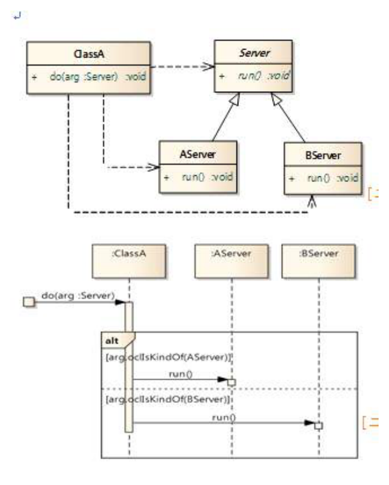
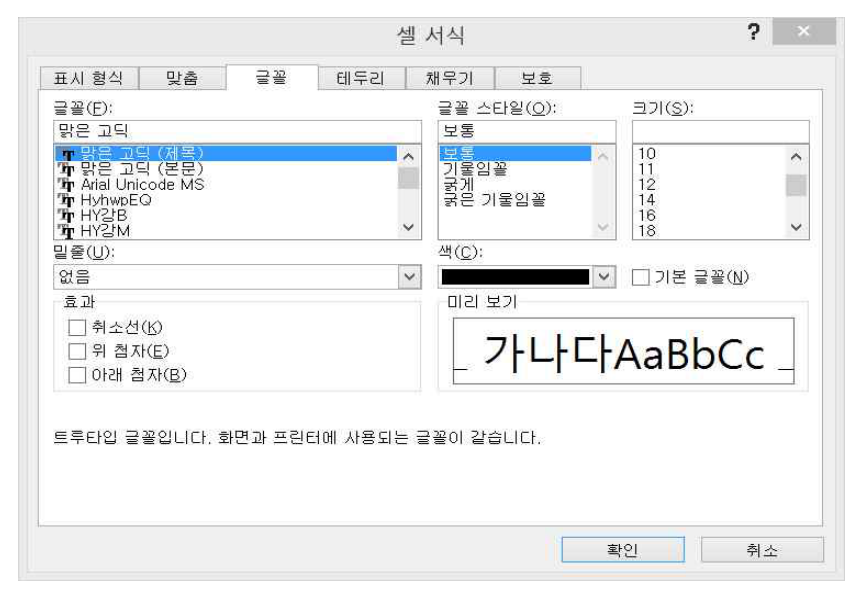
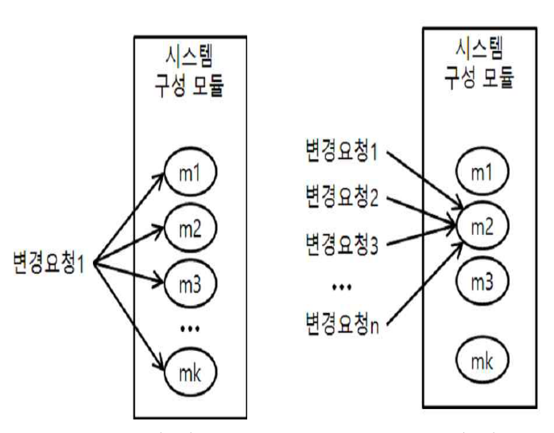
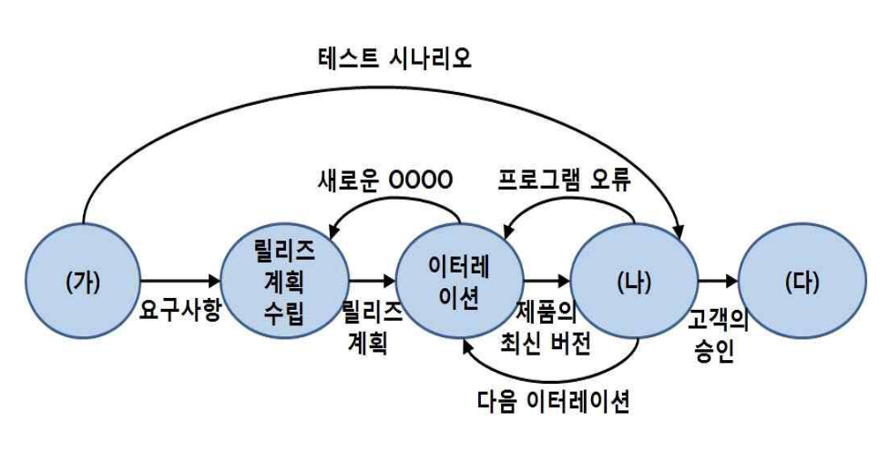

작성 기준: 업로드된 소프트웨어공학 강의자료(Part I~III, [1]1. SW 공학) 우선 근거, 외부지식은 보조적으로만 사용(강의자료 미수록 항목은 각 문항에 명시)
정답 출처: 2016년(제17회) 정보시스템 감리사 필기시험 문제 및 답안.pdf (원본 Bold 표시 정답 - 페이지 렌더 이미지 직접 대조 확인)
정답 신뢰도: 매우 높음 (stroke-text 자동추출 25/25 + 보기 영역 렌더 확대 육안 대조 25/25 일치, 계산·코드 문항은 별도 재검산)
기준 버전 주의: 본 회차는 2016년 시행분이다. ISO/IEC 9126(43번)·ISO/IEC 25010(42번)·MISRA-C:2004(34번)·COCOMO II(44·46번) 등 기준이 명시된 문항은 이후 개정이 있었으므로, 각 문항의 「관련 이론 정리」 말미에 현행(2025년 기준) 변경사항을 병기하였다.
| 번호 | 정답 | 번호 | 정답 | 번호 | 정답 |
|---|---|---|---|---|---|
| 26 | ④ | 36 | ④ | 46 | ② |
| 27 | ② | 37 | ④ | 47 | ① |
| 28 | ③ | 38 | ③ | 48 | ② |
| 29 | ② | 39 | ④ | 49 | ② |
| 30 | ② | 40 | ② | 50 | ① |
| 31 | ② | 41 | ③ | ||
| 32 | ② | 42 | ② | ||
| 33 | ① | 43 | ② | ||
| 34 | ② | 44 | ③ | ||
| 35 | ④ | 45 | ④ |
2016년 제17회 소프트웨어공학은 계산·코드 추적 문항이 7개(31·32·33·38·41·45·46) 로 5개년 중 가장 많았던 회차다. 전항정답·복수정답은 없었으나, 하나하나 직접 손으로 풀어야 답이 나오는 구성이라 시간 압박이 컸을 것으로 보인다.
영역별 배분은 ① 테스트 5문항(35·36·38·39 + 30 일부), ② 품질 모델 4문항(42·43 + 29·41), ③ 비용산정 3문항(44·45·46), ④ 코드 추적 3문항(31·32·33), ⑤ 리팩터링·코드 냄새 2문항(37·40), ⑥ 설계 원칙·UML 3문항(26·27·30), ⑦ SOA·미들웨어 3문항(47·48·49), ⑧ 추상화·표준·애자일 3문항(28·34·50) 이다.
이 회차의 특징 네 가지.
첫째, 자바 코드 추적이 두 문항 연속(31·33) 이다. 31번은 static 필드와 싱글톤 유사 구조를, 33번은 this() 생성자 연쇄 호출과 암묵적 super() 를 묻는다. 특히 33번은 생성자가 네 개나 서로를 호출하는 구조라 출력 순서를 정확히 따라가야 한다.
둘째, 품질 모델 문항이 9126과 25010을 나란히 물었다(42·43번). 42번은 9126의 6특성 → 25010의 8특성으로 추가된 두 개를, 43번은 9126 기준 특성 판별을 요구한다. 두 표준의 관계를 정확히 알아야 한다.
셋째, 비용산정 세 문항(44·45·46)이 모두 COCOMO II·FP 계열이다. 45번은 FP 환산 → 생산성 → 기간의 3단계 계산이고, 46번은 언어별 FP당 SLOC 순서라는 암기 문항이다.
넷째, 리팩터링 코드 냄새를 두 각도로(37번 냄새-기법 매칭, 40번 그림 → 냄새 식별) 물었다. shotgun surgery와 divergent change의 구분이 핵심이다.
강의자료 커버리지는 UML·테스트·리팩터링에서 양호하나, 결함허용 중복 방식(29번)·MISRA-C 참조 표준(34번)·언어별 FP 환산표(46번)·SOA 미들웨어 분류(48·49번) 는 업로드된 강의자료에 직접 수록되어 있지 않아 외부지식으로 보완했다.
| 항목 | 내용 |
|---|---|
| 문서명 | 정보시스템 감리사 소프트웨어공학 기출문제 해설집 - 2016년 제17회 |
| 대상 문항 | Q26 ~ Q50 (소프트웨어공학) |
| 원본 출처 | 2016년(제17회) 정보시스템 감리사 필기시험 문제 및 답안.pdf (p.6~11) |
| 정답 확인 방법 | stroke-text(글리프 render mode) 자동추출 + 보기 영역 렌더 확대 육안 대조 (25/25 일치) |
| 특이 문항 | 없음 (전항정답·복수정답 없음) |
| 그림 포함 문항 | 27 클래스+시퀀스 다이어그램, 35 Excel 셀 서식 대화상자, 40 변경요청-모듈 관계도, 50 XP 개발 프로세스 — 모두 이미지 + 서술 전사 병기 |
| 표·코드 제시 문항 | 26·28·29·30·31·33·38·39·41·43·45·48·49번 — 이미지 대신 마크다운 표/코드블록으로 전사 |
| 근거 강의자료 | SE01 Part I(V1.2), SE02·SE03 Part I(아키텍처), SE04 Part II(디자인·UML), SE05 디자인 패턴, SE06 Part II(SW 개발), SE07 Part III(테스트·유지관리), SE08 Part III(품질관리·비용산정), SE09 [1]1. SW 공학(V1.1) |
| 강의자료 미수록(외부지식 보완) 항목 | 결함허용 중복 방식(29), MISRA-C 참조 표준(34), 언어별 FP당 SLOC(46), SOA 미들웨어·오케스트레이션(48·49), COCOMO II 세부 모델(44) |
| 기준 버전 | 2016년 출제 당시 기준 + 현행(2025년) 개정사항 병기 |
다음 중 소프트웨어 요구 명세서(software requirements specification, SRS)에 포함되어야 할 항목으로 가장 적절한 것은?
| 기호 | 항목 | 기호 | 항목 |
|---|---|---|---|
| 가 | 사용자 인터페이스 | 라 | 알고리즘 |
| 나 | 시스템 구조 | 마 | 인수 조건 |
| 다 | 성능 요구 | 바 | 자원에 대한 제약 조건 |
① 가, 나, 다, 바
② 나, 다, 라, 마
③ 나, 라, 마, 바
④ 가, 다, 마, 바
정답 : ④번
정답 신뢰도 : 매우 높음 (원본 Bold 확인)
| 항목 | 내용 |
|---|---|
| 연도 | 2016년 (제17회) |
| 과목 | 소프트웨어공학 |
| 문항번호 | 26번 |
| 난이도 | 중 |
| 출제주제 | 요구공학 - 소프트웨어 요구 명세서(SRS)의 포함 항목 |
요구공학은 매 회차 1~2문항 출제되는 고정 주제다. 5개년을 보면 2016년 26번(SRS 포함 항목), 2017년 29번(범위 표현 기법), 2019년 26·38번(품질 속성 시나리오·기능/비기능), 2020년 26번(요구사항 검증 점검 유형)으로 매년 다른 각도에서 나왔다.
| 연도 | 문항번호 | 핵심개념 |
|---|---|---|
| 2017 | 29 | 시스템 범위 표현 기법 |
| 2019 | 38 | 기능·비기능 요구사항 |
| 2020 | 26 | 요구사항 검증 점검 유형 |
"SRS는 무엇을(What), 설계서는 어떻게(How)."
시스템 구조·알고리즘은 설계 → SRS에서 제외.
포함: 인터페이스 · 성능 · 인수 조건 · 제약사항
SRS의 판별 기준은 "무엇을 해야 하는가(What)" 와 "어떻게 만들 것인가(How)" 의 구분이다.
| 기호 | 항목 | 판정 | 근거 |
|---|---|---|---|
| 가 | 사용자 인터페이스 | 포함 O | 외부 인터페이스 요구사항 — 사용자가 시스템과 어떻게 상호작용할지는 요구다 |
| 나 | 시스템 구조 | 제외 X | 아키텍처 = 설계 결정. "어떻게 만들 것인가"에 해당 |
| 다 | 성능 요구 | 포함 O | 비기능 요구사항의 대표 항목 |
| 라 | 알고리즘 | 제외 X | 구현 방법. 같은 요구를 여러 알고리즘으로 만족할 수 있다 |
| 마 | 인수 조건 | 포함 O | 요구 충족 여부를 판정하는 검증 기준. 요구사항의 필수 구성 |
| 바 | 자원에 대한 제약 조건 | 포함 O | 제약사항(constraints) — 메모리·CPU·저장 공간 한계 |
포함되어야 할 것 = 가, 다, 마, 바 → 정답 ④
"시스템 구조"와 "알고리즘"이 제외되는 이유
이 둘을 SRS에 넣으면 발주자가 개발자의 설계 자유를 침해하게 된다. 요구는 "응답 2초 이내" 로 기술해야지, "B-Tree 인덱스를 써서 이진 탐색으로 구현" 이라고 쓰면 안 된다. 후자는 더 나은 방법이 있어도 강제하게 되고, 성능 목표 미달 시 책임 소재도 모호해진다.
예외: 발주자가 정당한 사유로 특정 기술·구조를 강제하는 경우가 있다(기존 시스템과의 표준 통일, 보안 지침 등). 이때는 "제약사항(constraint)" 항목에 기술하며, 요구사항이 아니라 제약으로 분류한다. 보기 바(자원 제약) 가 이런 성격이다.
가·다·바는 맞지만 나(시스템 구조) 가 잘못 포함되었다. 마(인수 조건) 도 빠졌다.
시스템 구조는 아키텍처 설계서의 내용이다. SRS 단계에서 구조를 확정하면 설계 대안 검토 기회를 잃는다. 가장 유력한 오답이다.
다·마는 맞지만 나(시스템 구조)·라(알고리즘) 가 모두 설계 영역이다. 절반이 틀렸다.
마·바는 맞지만 나·라가 설계 영역이고, 가(사용자 인터페이스) 가 빠졌다.
소거 요령: "나(시스템 구조)"와 "라(알고리즘)"가 들어간 보기를 모두 지운다. ①(나 포함), ②(나·라), ③(나·라) → 전부 탈락. ④만 남는다.
IEEE 830 SRS 표준 목차
| 장 | 내용 |
|---|---|
| 1. 서론 | 목적, 범위, 정의·약어, 참고문헌, 개요 |
| 2. 전반적 기술 | 제품 관점, 제품 기능, 사용자 특성, 제약사항, 가정·종속성 |
| 3. 상세 요구사항 | 외부 인터페이스 요구(사용자·HW·SW·통신), 기능 요구, 성능 요구, 논리 DB 요구, 설계 제약, 소프트웨어 시스템 속성(신뢰성·가용성·보안·유지보수성·이식성) |
| 부록·색인 |
본 문항의 네 항목이 모두 이 목차 안에 있다. 사용자 인터페이스(3장 외부 인터페이스), 성능 요구(3장), 자원 제약(2·3장 제약사항), 인수 조건(검증 기준).
좋은 SRS의 8가지 특성 (IEEE 830)
| 특성 | 의미 |
|---|---|
| 정확성(correct) | 실제 요구를 정확히 반영 |
| 명확성(unambiguous) | 해석이 하나뿐 |
| 완전성(complete) | 빠진 요구 없음 |
| 일관성(consistent) | 요구 간 충돌 없음 |
| 우선순위(ranked) | 중요도·안정성 명시 |
| 검증가능성(verifiable) | 테스트로 확인 가능 ← 인수 조건과 직결 |
| 수정가능성(modifiable) | 변경이 용이한 구조 |
| 추적가능성(traceable) | 출처·후속 산출물과 연결 |
2020년 26번의 요구사항 검증 5가지 점검 유형(유효성·일관성·완전성·실현성·검증가능성)과 겹치는 개념이다.
요구 vs 설계 구분표
| SRS(요구) | 설계서(설계) |
|---|---|
| 무엇을(What) | 어떻게(How) |
| 사용자 관점 | 개발자 관점 |
| 기능·성능·제약·인터페이스 | 아키텍처·모듈·알고리즘·자료구조 |
| 사용자 인터페이스 요구(화면 항목·흐름) | 화면 설계(레이아웃·컴포넌트) |
| "응답 2초 이내" | "인덱스 튜닝 + 캐시 적용" |
주의: "사용자 인터페이스"는 요구(무엇을 보여줄 것인가) 와 설계(어떻게 배치할 것인가) 양쪽에 걸친다. 본 문항에서는 외부 인터페이스 요구로 보아 포함으로 판정한다.
국내 공공 요구사항 분류 코드 (2019년 38번과 연결)
| 코드 | 분류 |
|---|---|
| SFR | 기능 요구사항 |
| PER | 성능 요구사항 ← 보기 다 |
| SER | 시스템 장비 구성 |
| INR | 인터페이스 요구사항 ← 보기 가 |
| DAR | 데이터 요구사항 |
| TER | 테스트 요구사항 ← 보기 마 |
| SCR | 보안 요구사항 |
| QUR | 품질 요구사항 |
| COR | 제약사항 ← 보기 바 |
| PMR/PSR | 프로젝트 관리·지원 |
네 개의 정답 항목이 국내 분류 코드에도 그대로 대응한다.
요구정의단계 감리에서 SRS(요구사항정의서) 를 점검할 때 이 구분이 기준이 된다. 흔한 문제는 두 방향으로 나타난다.
| 문제 | 결과 |
|---|---|
| 설계 내용을 요구에 기술 | 개발자의 설계 자유 제한, 더 나은 대안 배제 |
| 인수 조건 누락 | 검수 시점에 "이게 완성인가" 논쟁 → 과업 분쟁 |
| 성능·제약 누락 | 인프라 규모산정 근거 부재 |
특히 인수 조건(마) 누락이 실무에서 가장 치명적이다. 정량 기준이 없으면 과업 이행 여부를 판정할 수 없다.
SRS 포함 항목 문항은 "무엇을 vs 어떻게" 한 가지 기준으로 푼다.
| 항목 | 판정 |
|---|---|
| 기능, 성능, 인터페이스, 제약, 인수 기준, 품질 목표 | 요구 (SRS 포함) |
| 아키텍처·시스템 구조, 알고리즘, 자료구조, DB 스키마, 클래스 설계 | 설계 (SRS 제외) |
오답에는 거의 항상 "시스템 구조"와 "알고리즘" 이 섞여 들어온다. 이 두 단어를 보면 즉시 제거하면 된다.
다음 그림은 클래스 다이어그램과 시퀀스 다이어그램에 바탕을 둔 설계의 일부이다. 본 설계가 위반한 설계 원칙으로 가장 적절한 것은?

(그림 서술 전사)
[클래스 다이어그램]
| 클래스 | 표기 | 연산 |
|---|---|---|
| ClassA | 일반 클래스 | + do(arg : Server) : void |
| Server | 이탤릭체 = 추상 클래스 | + run() : void (이탤릭 = 추상 메서드) |
| AServer | Server 상속 | + run() : void |
| BServer | Server 상속 | + run() : void |
관계: ClassA ⇢ Server (의존), AServer ─▷ Server, BServer ─▷ Server (일반화)
추가로 ClassA ⇢ AServer, ClassA ⇢ BServer 점선 의존도 존재
[시퀀스 다이어그램]
:ClassA 가 do(arg : Server) 를 받음
alt
[arg.oclIsKindOf(AServer)] → :AServer 에게 run() 호출
------------------------------------------------
[arg.oclIsKindOf(BServer)] → :BServer 에게 run() 호출
즉 Server 라는 추상 타입으로 받아 놓고, 실제 구체 타입을 검사(oclIsKindOf)하여 분기하고 있다.
① SRP(Single Responsibility Principle)
② LSP(Liskov Substitution Principle)
③ ISP(Interface Segregation Principle)
④ DRY(Don't Repeat Yourself)
정답 : ②번
정답 신뢰도 : 매우 높음 (원본 Bold 확인)
oclIsKindOf, instanceof) = LSP 위반의 전형적 징후arg.run() 한 줄로 끝나야 한다oclIsKindOf = Java의 instanceof| 항목 | 내용 |
|---|---|
| 연도 | 2016년 (제17회) |
| 과목 | 소프트웨어공학 |
| 문항번호 | 27번 |
| 난이도 | 상 |
| 출제주제 | SOLID - LSP(리스코프 치환 원칙) 위반 식별 |
SOLID는 매 회차 1~2문항으로 최상위 빈출이다. 5개년 분포를 보면 2016년 27번(LSP), 2017년 47번(OCP), 2019년 29번(DIP)·33번(컴포넌트 원칙), 2021년 26번(OCP)으로 거의 매년 나왔다. 제시 형태는 클래스 다이어그램 / 코드 전후 비교 / 설명문 세 가지가 순환한다.
| 연도 | 문항번호 | 핵심개념 |
|---|---|---|
| 2017 | 47 | OCP(instanceof → 다형성) |
| 2019 | 29 | DIP(인터페이스 기반 설계) |
| 2019 | 33 | 컴포넌트 응집도 3원칙 |
"추상 타입으로 받아 놓고 구체 타입을 검사하면 = 치환 불가 = LSP 위반."
LSP가 지켜지면arg.run()한 줄이면 된다.
oclIsKindOf= OCL 버전의instanceof. DRY는 SOLID가 아니다.
설계의 문제점
ClassA.do(arg : Server) 는 Server 타입을 받는다. 이는 "어떤 Server든 상관없다" 는 선언이다. 그런데 시퀀스 다이어그램을 보면 실제로는 다음처럼 동작한다.
if (arg.oclIsKindOf(AServer)) → AServer 로서 run() 호출
else if (arg.oclIsKindOf(BServer)) → BServer 로서 run() 호출
추상 타입으로 받아 놓고 구체 타입을 다시 확인하고 있다. 이는 AServer 와 BServer 가 Server 를 온전히 대체하지 못한다는 것을 코드로 자백하는 것이다.
LSP가 지켜졌다면 ClassA 는 arg가 무엇인지 알 필요가 없다.
:ClassA → arg.run() // 한 줄. 다형성이 알아서 처리
Server 의 계약(run())이 하위 타입에서 동일한 의미로 지켜진다면 분기가 필요 없다. 분기가 필요하다는 것은 하위 타입마다 다르게 대해야 한다는 뜻이고, 이것이 곧 치환 불가능 = LSP 위반이다.
클래스 다이어그램에서 ClassA 가 Server 뿐 아니라 AServer·BServer 에도 점선 의존을 갖는 것도 같은 증거다. 추상에만 의존해야 할 클라이언트가 구체 타입까지 알고 있다.
따라서 위반한 원칙은 ② LSP.
"클래스는 변경되어야 할 이유가 하나여야 한다." 하나의 클래스가 여러 책임을 지고 있는지를 본다.
본 설계에서 ClassA 는 do() 하나만 가지고 있고, Server 계층도 run() 하나뿐이다. 책임이 분산되어 있다는 증거가 없다. 문제는 책임의 개수가 아니라 타입 치환 가능성이다.
"클라이언트는 자신이 사용하지 않는 메서드에 의존하지 않아야 한다." 뚱뚱한 인터페이스를 쪼개는 원칙이다.
ISP 위반이라면 Server 에 여러 개의 메서드가 있고 ClassA 가 그중 일부만 쓰는 모습이어야 한다. 그러나 Server 에는 run() 단 하나뿐이다. 더 쪼갤 것이 없으므로 ISP 위반이 성립하지 않는다.
"모든 지식은 시스템 내에서 단일하고 명확한 표현을 가져야 한다" — 즉 중복을 제거하라는 원칙이다(The Pragmatic Programmer).
시퀀스 다이어그램의 두 분기가 모두 run() 을 호출하므로 "중복처럼 보인다"고 생각할 수 있다. 그러나 호출 대상이 서로 다른 객체이므로 엄밀한 의미의 코드 중복은 아니다.
DRY는 SOLID에 속하지 않는다. 문제가 "클래스 설계를 위한 5대 원칙 중 하나"라고 하지 않고 "설계 원칙"이라고만 해서 DRY를 섞어 넣은 것이다. 보기 중 SOLID가 아닌 유일한 항목이므로 소거 후보로 삼을 수 있다.
LSP의 정의와 조건
"S가 T의 하위 타입이라면, T 타입 객체를 S 타입 객체로 치환해도 프로그램의 정확성이 유지되어야 한다." (Barbara Liskov, 1987)
LSP를 지키기 위한 계약 조건
| 조건 | 하위 타입은… |
|---|---|
| 사전조건(precondition) | 강화할 수 없다 (더 까다로운 입력을 요구하면 안 됨) |
| 사후조건(postcondition) | 약화할 수 없다 (더 적게 보장하면 안 됨) |
| 불변식(invariant) | 유지해야 한다 |
| 예외 | 부모가 던지지 않는 새로운 예외를 던지면 안 된다 |
LSP 위반의 대표 징후
| 징후 | 설명 |
|---|---|
| 타입 검사 후 분기 | instanceof·oclIsKindOf·getClass() 로 하위 타입 구분 ← 본 문항 |
| 빈 구현 | 하위에서 메서드를 오버라이드해 아무것도 하지 않음 |
| 예외 던지기 | throw new UnsupportedOperationException() |
| 조건 강화 | 부모는 음수를 허용하는데 자식은 거부 |
고전적 위반 예 — 정사각형/직사각형 문제
class Rectangle {
void setWidth(int w) { width = w; }
void setHeight(int h) { height = h; }
}
class Square extends Rectangle {
void setWidth(int w) { width = height = w; } // 사후조건 변경
void setHeight(int h) { width = height = h; }
}
// 클라이언트 코드
r.setWidth(5); r.setHeight(4);
assert r.area() == 20; // Square 를 넣으면 16 → 깨짐
수학적으로는 정사각형이 직사각형의 일종이지만, 행위(behavior) 관점에서는 대체 불가능하다. LSP는 IS-A 관계가 아니라 IS-SUBSTITUTABLE-FOR 관계를 요구한다.
LSP와 다른 원칙의 관계
| 관계 | 설명 |
|---|---|
| LSP → OCP | LSP가 지켜져야 다형성 기반 OCP가 성립한다 |
| LSP → DIP | 추상에 의존하려면 하위 타입이 계약을 지켜야 한다 |
2017년 47번(OCP) 과 대비하면 이해가 명확해진다.
- 2017년 47번:instanceof분기 → "새 타입 추가 시 수정 필요" 에 초점 → OCP
- 2016년 27번:oclIsKindOf분기 → "하위 타입이 부모를 대체 못함" 에 초점 → LSP두 문항 모두 타입 검사 분기를 다루지만, 보기에 무엇이 있는지로 답이 갈린다. 본 문항 보기에는 OCP가 없고 LSP가 있다.
OCL(Object Constraint Language)
| 연산 | 의미 | Java 대응 |
|---|---|---|
oclIsTypeOf(T) |
정확히 T 타입인가 | getClass() == T.class |
oclIsKindOf(T) |
T 또는 그 하위 타입인가 | instanceof T |
oclAsType(T) |
T로 형변환 | (T) obj |
OCL은 UML의 제약을 정형적으로 기술하는 언어로, UML 확장 메커니즘 3종(스테레오타입·태그값·제약) 중 제약에 해당한다.
설계 감리에서 instanceof 연쇄 분기가 발견되면 LSP·OCP 위반으로 지적하고 다형성으로의 전환을 권고한다. 개선 방법은 두 가지다.
| 상황 | 개선안 |
|---|---|
| 하위 타입들이 같은 개념의 변형 | 다형성(공통 메서드를 각자 구현) |
| 하위 타입들이 본질적으로 다른 것 | 상속 관계 자체를 해체(잘못된 상속) |
두 번째가 중요하다. LSP 위반은 종종 "상속을 쓰지 말았어야 할 곳에 상속을 쓴 것" 이 근본 원인이다. 이 경우 합성(composition) 으로 바꾸는 것이 정답이다.
SOLID 판별 문항은 "코드/다이어그램에 나타난 증상" 으로 접근한다.
| 증상 | 원칙 |
|---|---|
타입 검사 후 분기(instanceof, oclIsKindOf) |
LSP(치환 불가) 또는 OCP(확장 시 수정) |
| 하위에서 빈 구현·예외 | LSP |
| 거대한 인터페이스, 일부만 사용 | ISP |
| 한 클래스에 여러 책임 | SRP |
| 구체 클래스에 직접 의존 | DIP |
보기에 LSP와 OCP가 함께 있으면 초점을 확인한다 — "대체 가능한가" 면 LSP, "확장 시 수정하는가" 면 OCP다.
기계어에서 어셈블리 언어로, 어셈블리 언어에서 고급 언어로 표현하는 과정에서 적용된 추상화 방법으로 가장 적절한 것은?
| 기계어 표현 | 어셈블리 언어 표현 | 고급 언어 표현 |
|---|---|---|
| 00100101 | LOAD A, X |
|
| 10000110 | ADD A, Y |
Z = X + Y |
| 01000111 | STORE Z, A |
① 프로시저 추상화(procedure abstraction)
② 데이터 추상화(data abstraction)
③ 제어 추상화(control abstraction)
④ 기능 추상화(function abstraction)
정답 : ③번
정답 신뢰도 : 매우 높음 (원본 Bold 확인)
Z = X + Y)| 항목 | 내용 |
|---|---|
| 연도 | 2016년 (제17회) |
| 과목 | 소프트웨어공학 |
| 문항번호 | 28번 |
| 난이도 | 중 |
| 출제주제 | 추상화 - 제어 추상화(control abstraction) |
추상화·설계 원리는 3~4년 주기로 출제된다. 2016년 28번(추상화 종류), 2017년 50번(코드 → 설계 원리 판별)처럼 개념 판별 형태가 표준이다. 난이도는 중간이지만 유사어(프로시저/기능 추상화) 때문에 헷갈리기 쉽다.
| 연도 | 문항번호 | 핵심개념 |
|---|---|---|
| 2017 | 50 | 코드 → 설계 원리(모듈화·추상화·은닉·다형성) |
| 2019 | 32 | 변경 용이성 전술 |
"여러 명령 → 한 문장 = 제어 추상화."
LOAD·ADD·STORE 3개 →Z = X + Y1개.
데이터 추상화는 데이터 표현을 감추는 것 — 본 문항과 다르다.
표가 보여 주는 것은 동일한 연산이 세 단계의 추상화 수준에서 어떻게 표현되는가이다.
| 수준 | 표현 | 명령 수 |
|---|---|---|
| 기계어 | 00100101 / 10000110 / 01000111 |
3개 |
| 어셈블리 | LOAD A, X / ADD A, Y / STORE Z, A |
3개 (기계어와 1:1) |
| 고급 언어 | Z = X + Y |
1개 |
핵심 변화는 어셈블리 → 고급 언어 단계다. 레지스터 적재(LOAD) → 연산(ADD) → 저장(STORE) 이라는 세 개의 제어 흐름 단계가 하나의 대입문으로 압축되었다.
즉 "어떤 순서로 명령을 실행할 것인가"라는 제어 세부를 감추고, "무엇을 계산할 것인가"만 남긴 것이다. 이것이 제어 추상화(control abstraction) 의 정의다.
제어 추상화: 프로그램의 제어 흐름(명령 실행 순서·레지스터 조작·분기) 세부사항을 감추고, 더 높은 수준의 제어 구조로 표현하는 것.
따라서 정답은 ③번.
제어 추상화의 다른 예
| 저수준 | 고수준(제어 추상화) |
|---|---|
| 비교 + 조건 분기 + 레이블 점프 | if … else |
| 카운터 초기화 + 비교 + 증가 + 점프 | for / while |
| 스택 조작 + 점프 + 복귀 | 함수 호출 |
| LOAD-ADD-STORE | Z = X + Y ← 본 문항 |
일련의 처리 과정을 하나의 이름 붙은 단위(프로시저·함수)로 묶고, 호출자는 내부 구현을 모른 채 이름만으로 사용하는 것이다.
sort(array); // 내부 알고리즘을 몰라도 정렬된다
본 문항에는 이름 붙은 프로시저가 등장하지 않는다. Z = X + Y 는 함수 호출이 아니라 대입 표현식이다.
다만 넓게 보면 제어 추상화의 한 형태로 프로시저 추상화를 포함시키기도 한다. 그러나 본 문항은 "명령 시퀀스 → 단일 문장" 이라는 제어 흐름 압축이 핵심이므로 제어 추상화가 정확하다.
데이터의 표현 방식과 내부 구조를 감추고, 그 데이터에 대한 연산만 노출하는 것이다. 추상 자료형(ADT)·클래스가 대표적이다(2017년 50번 참조).
class Stack { /* 배열인지 연결리스트인지 감춤 */
public: void push(int); int pop();
};
본 문항의 표는 데이터 구조가 아니라 명령 실행 방식의 변화를 보여 준다. X, Y, Z 라는 변수의 표현 방식이 감춰진 것이 아니다.
부분적 반론: 어셈블리의
A(누산기 레지스터)가 고급 언어에서 사라진 것은 저장 위치의 추상화로 볼 여지가 있다. 그러나 그것도 연산 수행 방식(제어) 의 일부이며, 데이터 추상화는 사용자 정의 타입과 연산의 캡슐화를 의미하므로 본 문항과 다르다.
프로시저 추상화와 사실상 같은 개념으로 쓰인다. 입력→출력의 기능만 정의하고 구현을 감추는 것이다. ①과 같은 이유로 부적절하다.
①과 ④가 유사어라는 점도 힌트다. 둘 중 하나가 답이라면 다른 하나도 답이 되어야 하므로, 정답은 ①·④가 아닌 ②·③ 중에 있다.
소프트웨어공학의 추상화 종류
| 종류 | 감추는 것 | 예 |
|---|---|---|
| 제어 추상화(control) | 제어 흐름·실행 순서 | if, for, 고급 언어 문장, 함수 호출 메커니즘 |
| 데이터 추상화(data) | 데이터 표현·구조 | ADT, 클래스, 컬렉션 인터페이스 |
| 프로시저 추상화(procedural) | 처리 절차의 세부 | 함수·메서드·모듈 |
| 기능 추상화(functional) | 기능의 구현 방법 | 인터페이스, API |
추상화 수준의 계층 (컴퓨터 시스템)
[고급 언어] Z = X + Y ← 제어·데이터 추상화 높음
↓ 컴파일
[어셈블리] LOAD / ADD / STORE ← 기계어와 1:1, 니모닉만 추상화
↓ 어셈블
[기계어] 00100101 … ← 추상화 없음
↓
[마이크로코드/하드웨어]
어셈블리는 왜 "추상화가 낮은가"
어셈블리는 기계어와 1:1 대응한다. LOAD A, X 는 00100101 하나에 대응할 뿐, 여러 명령을 묶지 않는다. 니모닉(mnemonic)으로 가독성만 높인 것이므로 제어 추상화가 아니라 표기 추상화에 가깝다.
반면 고급 언어의 Z = X + Y 는 세 개의 기계 명령을 하나로 묶었다. 여기서 비로소 제어 추상화가 일어난다.
추상화와 정보 은닉의 관계 (2017년 50번과 연결)
| 개념 | 초점 |
|---|---|
| 추상화(abstraction) | 본질만 남기고 세부를 생략 — "무엇을 보여줄 것인가" |
| 정보 은닉(information hiding) | 접근을 차단 — "무엇을 감출 것인가" |
| 캡슐화(encapsulation) | 데이터와 연산을 묶음 |
추상화는 개념적 단순화, 정보 은닉은 접근 제어다. 추상화의 결과로 정보 은닉이 가능해진다.
소프트웨어 설계의 5대 원리
| 원리 | 내용 |
|---|---|
| 추상화 | 본질에 집중, 세부 생략 |
| 단계적 분해(stepwise refinement) | 하향식으로 점진 상세화 |
| 모듈화 | 독립 단위로 분할 |
| 정보 은닉 | 내부 구현 감춤 |
| 계층화 | 추상화 수준별 계층 구성 |
강의자료 수록 여부: 강의자료는 아키텍처 설계 원리로 추상화·복잡도 관리·가시성을 다룬다("추상화: 시스템의 추상적인 표현을 사용(복잡도 관리)"). 제어/데이터/프로시저 추상화의 세부 분류는 외부지식으로 보완했다.
추상화 수준을 적절히 유지하는 것이 좋은 설계의 핵심이다. 감리에서 발견되는 문제는 한 메서드 안에 추상화 수준이 뒤섞이는 경우다.
void processOrder(Order o) {
validate(o); // 고수준
Connection c = DriverManager.getConnection(url); // 저수준(JDBC)
PreparedStatement ps = c.prepareStatement("INSERT …"); // 저수준
notifyCustomer(o); // 고수준
}
"단일 추상화 수준 원칙(SLAP, Single Level of Abstraction Principle)" 에 따라 저수준 코드는 별도 메서드로 추출해야 한다(2019년 47번 Extract Method와 연결).
추상화 종류 판별은 "무엇이 감춰졌는가" 로 판단한다.
| 감춰진 것 | 추상화 종류 |
|---|---|
| 명령 실행 순서·제어 흐름 | 제어 추상화 |
| 데이터의 내부 표현 | 데이터 추상화 |
| 처리 절차 전체를 이름으로 | 프로시저·기능 추상화 |
본 문항처럼 "여러 명령 → 하나의 문장" 이면 제어 추상화, "자료구조를 클래스로" 면 데이터 추상화다.
다음은 아키텍처 설계과정에서 결함허용(fault tolerance) 을 높이기 위해 취할 수 있는 방법 중 하나에 대한 설명이다. 다음 설명으로 가장 적절한 것은?
- 그룹에서 활성화 요소가 입력을 처리하도록 구성된 형상
- 중복 요소를 위해 주기적으로 상태 업데이트
- 활성화 요소와 중복 요소 간에 상태 일치를 위해 체크 포인트 메커니즘 사용
① active redundancy(hot spare)
② passive redundancy(warm spare)
③ spare(cold spare)
④ condition monitoring
정답 : ②번
정답 신뢰도 : 매우 높음 (원본 Bold 확인)
| 항목 | 내용 |
|---|---|
| 연도 | 2016년 (제17회) |
| 과목 | 소프트웨어공학 |
| 문항번호 | 29번 |
| 난이도 | 상 |
| 출제주제 | 가용성 전술 - 결함허용(fault tolerance) 중복 방식 |
가용성·결함허용 전술은 3~4년 주기로 출제된다. 품질속성 전술 문항군(2019년 32번 변경 용이성, 2020년 34번 테스트 가능성)의 일부이며, SEI 전술 분류표를 알고 있는지를 묻는 형태로 고정되어 있다.
| 연도 | 문항번호 | 핵심개념 |
|---|---|---|
| 2016 | 41 | 가용성(availability) 계산 |
| 2019 | 26 | 품질 속성 시나리오 |
| 2019 | 32 | 변경 용이성 전술 |
| 2020 | 34 | 테스트 가능성 전술 |
"hot = 같이 처리(즉시 전환) / warm = 주기적 동기화(체크포인트) / cold = 꺼져 있음"
지문에 "체크포인트"·"주기적 상태 업데이트" 가 있으면 passive(warm spare).
condition monitoring은 탐지 전술 — 중복 방식이 아니다.
지문의 세 문장이 각각 passive redundancy 의 정의 요소를 가리킨다.
| 지문 | passive redundancy의 특징 |
|---|---|
| "활성화 요소가 입력을 처리하도록 구성" | 활성 요소만 실제 처리를 담당 (중복 요소는 처리하지 않음) |
| "중복 요소를 위해 주기적으로 상태 업데이트" | 주기적(periodic) 동기화 — 실시간이 아님 |
| "체크 포인트 메커니즘 사용" | 상태 일치를 위한 체크포인트 |
세 방식의 결정적 차이
| 방식 | 중복 요소의 입력 처리 | 상태 동기화 | 전환 시간 | 자원 비용 |
|---|---|---|---|---|
| active(hot spare) | 함께 처리 | 실시간·완전 동기 | 즉시(무중단) | 높음 |
| passive(warm spare) | 처리하지 않음 | 주기적(체크포인트) | 짧음(수 초~수 분) | 중간 |
| spare(cold spare) | 정지 상태 | 없음 | 김(기동·초기화 필요) | 낮음 |
지문은 "활성화 요소가 입력을 처리" 라고 명시했다. 즉 중복 요소는 입력을 처리하지 않는다. 이것이 active redundancy를 배제하는 결정적 근거다.
또한 "주기적으로 상태 업데이트" 하므로 완전히 꺼져 있는 cold spare도 아니다.
따라서 정답은 ② passive redundancy(warm spare).
모든 중복 요소가 동일한 입력을 동시에 처리한다. 활성 요소와 중복 요소의 상태가 항상 완전히 일치하므로, 장애 발생 시 밀리초 단위로 즉시 전환된다.
| 특징 | 내용 |
|---|---|
| 처리 | 모든 노드가 함께 처리 |
| 동기화 | 불필요(항상 동일 상태) |
| 전환 | 즉시, 무중단 |
| 비용 | 자원 소모 최대 |
| 적용 | 항공·금융 거래 등 무중단 필수 시스템 |
지문의 "활성화 요소가 입력을 처리"(=중복 요소는 처리 안 함) 와 정면으로 어긋난다. 가장 유력한 오답이다.
중복 요소가 완전히 정지해 있다가 장애 발생 시 기동(boot)하고 상태를 복원한 뒤 서비스를 이어받는다.
| 특징 | 내용 |
|---|---|
| 처리 | 정지 상태 |
| 동기화 | 없음 (주기적 업데이트도 없음) |
| 전환 | 가장 김(기동·초기화·상태 복원) |
| 비용 | 최저 |
지문에 "주기적으로 상태 업데이트" 가 명시되어 있으므로 cold spare가 아니다.
중복(redundancy) 방식이 아니라 결함 탐지(fault detection) 전술이다. 프로세스나 장치의 상태를 감시해 이상 징후를 탐지하는 것으로, 탐지 후의 조치(전환·복구)와는 별개다.
전술 분류가 다르다: ①②③은 결함 복구(recovery) — 준비(preparation & repair) 전술이고, ④는 결함 탐지(detect faults) 전술이다.
SEI 가용성(Availability) 전술 3분류
| 분류 | 전술 |
|---|---|
| 결함 탐지(Detect Faults) | ping/echo, heartbeat, exception detection, timestamp, sanity checking, condition monitoring, voting, self-test |
| 결함 복구(Recover from Faults) | 준비·수리: active redundancy, passive redundancy, spare, exception handling, rollback, retry, degradation, reconfiguration 재도입: shadow, state resynchronization, escalating restart, non-stop forwarding |
| 결함 예방(Prevent Faults) | removal from service, transactions, predictive model, exception prevention, increase competence set |
voting(투표) 방식 — active redundancy의 확장
| 방식 | 내용 |
|---|---|
| TMR(Triple Modular Redundancy) | 3개 모듈이 동일 연산 → 다수결로 결과 결정 |
| 목적 | 단순 장애 감지를 넘어 잘못된 결과까지 배제 |
| 적용 | 항공·우주·원자력 |
체크포인트(checkpoint) 메커니즘
| 항목 | 내용 |
|---|---|
| 정의 | 시스템 상태를 주기적으로 저장해 복구 지점을 만드는 기법 |
| 용도 | passive redundancy의 상태 동기화, 롤백 복구, 장기 배치 재시작 |
| 트레이드오프 | 주기가 짧을수록 데이터 손실↓·오버헤드↑ |
RTO / RPO와의 연결 (실무 지표)
| 지표 | 의미 | 방식별 |
|---|---|---|
| RTO(Recovery Time Objective) | 복구까지 허용 시간 | active ≈ 0 < passive < cold |
| RPO(Recovery Point Objective) | 허용 데이터 손실 범위 | active ≈ 0 < passive(체크포인트 주기) < cold |
DB·인프라 구현 대응
| 아키텍처 전술 | 실제 구현 |
|---|---|
| active redundancy | Active-Active 클러스터, 로드밸런싱 이중화 |
| passive redundancy | Active-Standby, DB 이중화(로그 전송·복제), 스탠바이 서버 |
| spare | 예비 장비 보관, 클라우드 오토스케일링 대기 |
강의자료 수록 여부: 강의자료 1.2 Part I(SE02)에 "그룹에서 활성화 요소가 입력을 처리하도록 구성된 형상 / 중복요소를 위해 주기적으로 상태 업데이트 / 활성화요소와 중복요소 간에 상태일치를 위해 체크포인트 메커니즘 사용" 이라는 본 문항과 동일한 서술이 「핵심 기출(2016) & 출제 예상문제」로 수록되어 있다. 강의자료 직접 수록 문항이다.
공공 정보시스템의 재해복구(DR) 체계 설계에서 이 분류가 그대로 쓰인다.
| DR 등급 | 대응 전술 | RTO |
|---|---|---|
| Mirror Site | active redundancy | 즉시 |
| Hot Site | active/passive | 수 시간 |
| Warm Site | passive redundancy | 수일 |
| Cold Site | spare | 수주 |
감리에서는 ① 업무 중요도에 맞는 이중화 방식이 선택되었는가(과잉·과소 투자 여부), ② RTO·RPO 목표가 정량 정의되고 방식과 정합하는가, ③ 전환(failover) 훈련이 실제 수행되었는가를 점검한다.
③이 특히 중요한데, 이중화를 구축해 놓고 한 번도 전환 테스트를 하지 않아 실제 장애 시 전환에 실패하는 사례가 흔하다.
중복 방식 판별은 두 가지 질문으로 끝난다.
지문의 "체크포인트"·"주기적 상태 업데이트" 는 passive의 표지어다.
다음은 UML 모델링을 위해 사용되는 특정 다이어그램의 활용에 대한 설명이다. 해당 다이어그램으로 가장 적절한 것은?
- 유스케이스에서 흐름을 모델링하기 위해 사용된다.
- 객체의 연산에 대한 플로우차트로 활용될 수 있다.
- 비즈니스 프로세스나 작업 흐름을 모델링할 수 있다.
① 시퀀스 다이어그램(sequence diagram)
② 액티비티 다이어그램(activity diagram)
③ 상태 다이어그램(state diagram)
④ 협력 다이어그램(collaboration diagram)
정답 : ②번
정답 신뢰도 : 매우 높음 (원본 Bold 확인)
| 항목 | 내용 |
|---|---|
| 연도 | 2016년 (제17회) |
| 과목 | 소프트웨어공학 |
| 문항번호 | 30번 |
| 난이도 | 하 |
| 출제주제 | UML - 액티비티(activity) 다이어그램의 용도 |
UML 다이어그램은 매 회차 2~3문항 출제된다. 그중 "설명 → 다이어그램 식별" 은 가장 기본적인 유형으로 난이도가 낮다. 심화되면 2017년 46번(액티비티 노드 명칭)·2018년 45번(상태 전이 적정성)처럼 세부 표기를 묻는다.
| 연도 | 문항번호 | 핵심개념 |
|---|---|---|
| 2016 | 27 | 클래스·시퀀스 다이어그램(LSP) |
| 2017 | 46 | 액티비티 다이어그램 노드 명칭 |
| 2018 | 45 | 상태 다이어그램 전이 |
"작업 흐름·플로우차트·업무 프로세스 = 액티비티 다이어그램"
노드가 활동(동사)이면 액티비티, 상태(명사)면 상태머신.
협력(collaboration) 다이어그램은 UML 2.0에서 커뮤니케이션 다이어그램으로 개명.
지문의 세 문장이 모두 액티비티 다이어그램의 대표 용도를 서술한다.
| 지문 | 액티비티 다이어그램의 용도 |
|---|---|
| "유스케이스에서 흐름을 모델링" | 유스케이스의 기본·대안·예외 흐름을 시각화 |
| "객체의 연산에 대한 플로우차트로 활용" | 메서드 내부 알고리즘을 순서도처럼 표현 |
| "비즈니스 프로세스나 작업 흐름 모델링" | BPMN의 UML 버전 — 업무 절차 표현 |
액티비티 다이어그램은 "무엇이 어떤 순서로 수행되는가" 를 표현하며, 조건 분기(◇)·병행 처리(▬)·객체 흐름을 모두 담을 수 있어 가장 범용적인 행위 다이어그램이다.
따라서 정답은 ②번.
객체 간 메시지 교환을 시간 순서로 표현한다. 세로축이 시간(생명선), 가로축이 객체다.
| 구분 | 시퀀스 | 액티비티 |
|---|---|---|
| 초점 | 누가 누구에게 메시지를 보내는가 | 무슨 작업이 어떤 순서로 일어나는가 |
| 주체 | 객체(lifeline) | 활동(action) |
| 병행 표현 | par 결합 프래그먼트 |
fork/join 막대 |
| 적합 | 객체 상호작용 설계 | 업무 흐름·알고리즘 |
지문의 "비즈니스 프로세스 모델링" 은 시퀀스의 용도가 아니다. 시퀀스는 객체 수준의 상호작용을 다룬다.
하나의 객체가 생애 동안 거치는 상태와 전이를 표현한다(2018년 45번 참조).
| 구분 | 상태 다이어그램 | 액티비티 다이어그램 |
|---|---|---|
| 노드 | 상태(머무는 조건) | 활동(수행하는 일) |
| 간선 | 이벤트에 의한 전이 | 작업 완료에 따른 흐름 |
| 대상 | 단일 객체의 생애 | 여러 주체의 협업 흐름 |
"플로우차트로 활용"은 작업의 순서를 뜻하지 상태의 변화가 아니다.
헷갈리는 지점: 둘 다 "흐름"을 표현하는 것처럼 보인다. 노드가 "상태(명사)"면 상태 다이어그램, "활동(동사)"면 액티비티 다이어그램이다. 예:
주문접수됨(상태) vs주문을 접수한다(활동).
객체 간의 관계와 메시지를 표현하되, 시간 순서 대신 구조적 배치를 강조한다. 메시지에 번호(1, 1.1, 2 …) 를 붙여 순서를 나타낸다.
UML 2.0에서 "커뮤니케이션 다이어그램(communication diagram)"으로 명칭이 변경되었다. 시퀀스 다이어그램과 표현하는 정보가 동일해 상호 변환이 가능하다.
객체 상호작용을 다루므로 업무 프로세스 모델링과는 거리가 있다.
UML 2.0의 13개 다이어그램
| 분류 | 다이어그램 |
|---|---|
| 구조(7) | 클래스, 객체, 컴포넌트, 배치, 패키지, 복합구조, 프로파일 |
| 행위(4) | 유스케이스, 액티비티, 상태머신, 상호작용 개요 |
| 상호작용(4) | 시퀀스, 커뮤니케이션(구 협력), 타이밍, 상호작용 개요 |
상호작용 다이어그램은 행위 다이어그램의 하위 분류다.
행위 다이어그램 선택 가이드
| 표현하고 싶은 것 | 다이어그램 |
|---|---|
| 작업의 순서·분기·병행 | 액티비티 |
| 객체 간 메시지의 시간 순서 | 시퀀스 |
| 객체 간 구조적 관계 + 메시지 | 커뮤니케이션 |
| 하나의 객체의 상태 변화 | 상태머신 |
| 시스템의 기능 범위와 액터 | 유스케이스 |
| 시간에 따른 상태 변화 타이밍 | 타이밍 |
액티비티 다이어그램의 주요 요소 (2017년 46번과 연결)
| 요소 | 표기 |
|---|---|
| 활동(action) | 둥근 사각형 |
| 시작·종료 | ● / ◎ |
| 결정·병합 | 마름모 ◇ (택일) |
| 포크·조인 | 굵은 막대 ▬ (병행) |
| 객체 노드 | 사각형 이름:타입 |
| 파티션(swimlane) | 세로·가로 구획 — 수행 주체 |
| 중단 가능 영역 | 점선 둥근 사각형 |
액티비티 다이어그램 vs 순서도(flowchart)
| 구분 | 순서도 | 액티비티 다이어그램 |
|---|---|---|
| 병행 처리 | 표현 불가 | fork/join으로 가능 |
| 수행 주체 | 표현 불가 | 파티션으로 표현 |
| 객체 흐름 | 없음 | 객체 노드로 표현 |
| 표준 | 비공식 | UML 표준 |
액티비티 다이어그램 vs BPMN
| 구분 | 액티비티 다이어그램 | BPMN |
|---|---|---|
| 목적 | 소프트웨어 + 업무 흐름 | 업무 프로세스 전문 |
| 표준 | OMG UML | OMG BPMN |
| 실행 | 개념 모델 | BPEL로 변환해 실행 가능 |
To-Be 업무 프로세스 설계서, 유스케이스 명세의 흐름 상세화, 배치 처리 흐름도에 사용된다. 감리에서는 ① 유스케이스 명세의 대안·예외 흐름이 다이어그램으로 표현되었는가, ② 파티션으로 수행 주체(사용자·시스템·외부기관)가 구분되었는가, ③ 분기 조건이 모두 명시되어 누락된 경로가 없는가를 점검한다.
②가 특히 유용한데, 파티션을 그려 보면 "이 작업은 누가 하는가" 가 명확해져 책임 소재 누락을 조기에 발견할 수 있다.
UML 다이어그램 식별 문항은 지문의 핵심 명사로 판별한다.
| 지문 키워드 | 다이어그램 |
|---|---|
| 작업 흐름·프로세스·순서도·알고리즘 | 액티비티 |
| 메시지·시간 순서·생명선 | 시퀀스 |
| 상태·전이·이벤트 | 상태머신 |
| 액터·기능 범위 | 유스케이스 |
| 클래스·속성·연산·관계 | 클래스 |
| 배포·노드·서버 | 배치 |
본 문항은 "흐름", "플로우차트", "비즈니스 프로세스" 세 단어가 모두 액티비티를 가리킨다.
다음 코드를 수행할 때, 수행 결과로 가장 적절한 것은?
class Temp {
private static Temp t;
private int m = 0;
public Temp() { }
public static Temp getTemp() {
if (t == null) t = new Temp();
return t;
}
public int add(int i) {
m += i;
return m;
}
}
public class TempTest {
public static void main(String[] args) {
Temp obj1 = new Temp();
Temp obj2 = new Temp();
System.out.print(obj1.add(5) + " ");
System.out.print(obj2.add(5) + " ");
Temp obj3 = Temp.getTemp();
Temp obj4 = Temp.getTemp();
System.out.print(obj3.add(5) + " ");
System.out.println(obj4.add(5));
}
}
① 5 5 5 5
② 5 5 5 10
③ 5 5 10 15
④ 5 10 15 20
정답 : ②번
정답 신뢰도 : 매우 높음 (원본 Bold 확인 + 객체 단위 재추적)
m 은 인스턴스 필드 — 객체마다 별도로 존재t 는 static 필드 — 클래스에 하나만 존재new Temp() 는 매번 새 객체 → m 이 각각 0에서 시작getTemp() 는 같은 객체를 반환(싱글톤 유사) → m 이 누적| 항목 | 내용 |
|---|---|
| 연도 | 2016년 (제17회) |
| 과목 | 소프트웨어공학 |
| 문항번호 | 31번 |
| 난이도 | 상 |
| 출제주제 | 자바 코드 추적 - static 필드와 인스턴스 필드, 싱글톤 유사 구조 |
코드 추적은 매 회차 1~2문항 출제된다. 2016년은 31번(static/인스턴스)과 33번(생성자 연쇄) 두 문항이 나왔다. 싱글톤 관련 코드는 2016년 31번·2020년 39번으로 반복 출제되므로 반드시 익혀 둘 것.
| 연도 | 문항번호 | 핵심개념 |
|---|---|---|
| 2016 | 33 | 생성자 연쇄 호출 |
| 2019 | 46 | Java 컬렉션 계층 |
| 2020 | 39 | Singleton holder 관용구 |
"
m에 static이 없다 → 객체마다 따로.t는 static → 클래스에 하나."
new두 번 = 객체 두 개(각각 5) /getTemp()두 번 = 같은 객체(5 → 10)
출력:5 5 5 10
생성자가 public이면 진짜 싱글톤이 아니다.
핵심 구분: 어떤 객체의 m 인가
| 필드 | 종류 | 저장 위치 |
|---|---|---|
private static Temp t |
static | 클래스당 1개 |
private int m = 0 |
인스턴스 | 객체마다 별도 |
실행 추적
| # | 문장 | 생성/참조 객체 | 해당 객체의 m | 출력 |
|---|---|---|---|---|
| 1 | Temp obj1 = new Temp(); |
객체 A 생성 | A.m = 0 | |
| 2 | Temp obj2 = new Temp(); |
객체 B 생성 | B.m = 0 | |
| 3 | obj1.add(5) |
객체 A | A.m = 0+5 = 5 | 5 |
| 4 | obj2.add(5) |
객체 B(별개!) | B.m = 0+5 = 5 | 5 |
| 5 | Temp obj3 = Temp.getTemp(); |
t == null → 객체 C 생성, t = C |
C.m = 0 | |
| 6 | Temp obj4 = Temp.getTemp(); |
t != null → 객체 C 반환(같은 객체) |
C.m = 0 | |
| 7 | obj3.add(5) |
객체 C | C.m = 0+5 = 5 | 5 |
| 8 | obj4.add(5) |
객체 C(obj3와 동일!) | C.m = 5+5 = 10 | 10 |
출력: 5 5 5 10 → 정답 ②
세 가지 관찰 포인트
obj1과 obj2는 서로 다른 객체다. new 를 두 번 했으므로 m 이 각각 0에서 시작한다. → 둘 다 5
obj3와 obj4는 같은 객체다. getTemp() 가 static 필드 t 에 저장된 인스턴스를 재사용하므로, 두 참조가 동일한 객체 C를 가리킨다. → obj3 == obj4 는 true
객체 C는 A·B와도 다른 객체다. getTemp() 안에서 new Temp() 로 새로 만들었기 때문이다. 따라서 C.m 은 0에서 시작한다. → 세 번째 출력이 5
obj3와 obj4를 서로 다른 객체로 착각한 경우다. getTemp() 가 매번 새 객체를 만든다고 보면 네 번 모두 5가 나온다.
if (t == null) t = new Temp(); 에서 두 번째 호출 때는 t가 이미 채워져 있어 새로 만들지 않는다는 점을 놓친 것이다. 가장 유력한 오답이다.
obj1·obj2를 같은 객체로 보지 않았지만, obj3의 m을 이전 값에서 이어받았다고 본 경우다. 즉 m 을 static으로 착각한 부분적 오류다.
m 이 static이라면 네 번 모두 누적되어 5 10 15 20(보기 ④)이 되어야 하므로 이 값은 논리적으로도 일관되지 않다.
m 을 static 필드로 착각한 경우다. private int m = 0; 에는 static 키워드가 없다.
만약 private static int m = 0; 이었다면 모든 객체가 하나의 m 을 공유해 5, 10, 15, 20이 출력된다. 한 글자 차이로 답이 완전히 달라지는 구조다.
static vs 인스턴스 멤버
| 구분 | static 멤버 | 인스턴스 멤버 |
|---|---|---|
| 소속 | 클래스 | 객체(인스턴스) |
| 개수 | 1개(클래스당) | 객체 수만큼 |
| 생성 시점 | 클래스 로딩 시 | 객체 생성 시 |
| 접근 | 클래스명.멤버 |
객체참조.멤버 |
| 메모리 | 메서드 영역(static 영역) | 힙(heap) |
본 코드의 메모리 구조
[static 영역]
Temp.t ──────────────┐
│
[힙 영역] │
객체 A { m = 5 } │
객체 B { m = 5 } │
객체 C { m = 10 } <──┘ ← obj3, obj4가 모두 여기를 가리킴
싱글톤 패턴과의 차이
본 코드는 싱글톤처럼 보이지만 완전한 싱글톤이 아니다.
| 싱글톤 요건 | 본 코드 |
|---|---|
| private 생성자 | public Temp() { } ← 위반 |
| 유일 인스턴스 보장 | new Temp() 로 얼마든지 생성 가능 ← 위반 |
| static 접근 메서드 | getTemp() ✓ |
| 스레드 안전성 | 미보장(동기화 없음) |
생성자가 public이므로 외부에서
new Temp()를 호출할 수 있고, 실제로 main에서 두 개나 만들었다. 이것이 이 문제의 핵심 함정이다. 진짜 싱글톤이라면 obj1·obj2를 만들 수 없다.
올바른 싱글톤 구현 (2020년 39번과 연결)
class Temp {
private static Temp t;
private Temp() { } // ← private 필수
public static synchronized Temp getTemp() {
if (t == null) t = new Temp();
return t;
}
}
| 구현 방식 | 특징 |
|---|---|
Lazy + synchronized |
스레드 안전, 성능 저하 |
| DCL(Double-Checked Locking) | volatile 필수 |
| Holder 관용구 | 권장 (2020년 39번) |
| Enum | 직렬화·리플렉션에도 안전 |
참조 비교와 동등성
obj1 == obj2 // false — 서로 다른 객체
obj3 == obj4 // true — 같은 객체 (getTemp가 같은 t를 반환)
obj1 == obj3 // false
전역 상태를 static 필드로 관리하는 코드는 감리에서 자주 지적된다.
| 문제 | 설명 |
|---|---|
| 스레드 안전성 | 웹 애플리케이션은 다중 요청이 동시에 실행 → static 필드 공유 시 동시성 버그 |
| 테스트 어려움 | 테스트 간 static 상태가 남아 테스트 순서에 결과가 의존(2020년 34번 testability) |
| 메모리 누수 | static 컬렉션에 객체를 계속 담으면 GC 대상이 되지 않음 |
개선안은 DI 컨테이너의 싱글톤 스코프를 사용하는 것이다. 컨테이너가 생명주기를 관리하므로 테스트 시 교체가 가능하다.
자바 코드 추적 문항의 점검 순서.
static 이 있는가 — 있으면 클래스 공유, 없으면 객체별new 가 몇 번 실행되는가 — 객체 개수 파악static 한 단어의 유무가 답을 완전히 바꾼다. 선언부를 먼저 확인하는 습관이 필요하다.
어느 소프트웨어는 평균적으로 에러(error)가 2일에 1개씩 발생한다고 한다. 이 소프트웨어가 3일 동안 에러 없이 가동될 신뢰성은 얼마인가?
① 0.5
② 0.125
③ 0.675
④ 0.25
정답 : ②번
정답 신뢰도 : 매우 높음 (원본 Bold 확인 + 재검산)
| 항목 | 내용 |
|---|---|
| 연도 | 2016년 (제17회) |
| 과목 | 소프트웨어공학 |
| 문항번호 | 32번 |
| 난이도 | 중 |
| 출제주제 | 신뢰성(reliability) 계산 - 무고장 확률 |
신뢰성·가용성 계산은 2~3년 주기로 출제되며, 시스템구조 과목과도 겹친다. 2016년은 32번(신뢰성)·41번(가용성)을 한 회차에 두 문항 배치해 두 개념의 구분을 집중적으로 물었다.
| 연도 | 문항번호 | 핵심개념 |
|---|---|---|
| 2016 | 29 | 결함허용 중복 방식 |
| 2016 | 41 | 가용성 계산 |
| 2016 | 43 | ISO 9126 신뢰성·기능성 |
"2일에 1개 → 하루 무고장 1/2 → 3일이면 (1/2)³ = 0.125"
신뢰성은 수리를 고려하지 않고, 가용성은 고려한다.
보기가 분수 형태면 이산 곱, e 계열이면 지수분포.
1단계 — 하루 단위 무고장 확률을 구한다.
"평균적으로 2일에 1개 에러 발생"
이는 2일 중 1일에 에러가 난다는 뜻이므로, 하루 동안 에러가 발생하지 않을 확률은
P(1일 무고장) = 1/2 = 0.5
2단계 — 3일 연속 무고장 확률을 구한다.
각 날의 에러 발생이 서로 독립이라고 보면, 3일 연속 무고장 확률은 곱으로 계산한다.
R(3일) = (1/2) × (1/2) × (1/2) = (1/2)³ = 1/8 = 0.125
따라서 정답은 ② 0.125.
계산 요약
MTBF = 2일 → 1일 무고장 확률 = 1/2
R(3) = (1/2)^3 = 1/8 = 0.125
보충 — 지수분포로 풀면?
신뢰도 공학에서는 흔히 지수분포 모델을 쓴다.
R(t) = e^(−λt), λ = 1/MTBF = 1/2 = 0.5
R(3) = e^(−0.5 × 3) = e^(−1.5) ≈ 0.223
이 값은 보기에 없다. 본 문항은 지수분포가 아니라 "하루 단위 이산 확률의 곱" 으로 설계된 문제다. 보기 값(0.125 = 1/8)이 그 근거다.
판단 요령: 보기에 e를 쓴 값(0.223, 0.368 등) 이 있으면 지수분포, 분수 형태의 깔끔한 값(0.125, 0.25 등) 이면 이산 확률의 곱으로 접근한다.
하루 무고장 확률만 답한 값이다. 문제는 3일 동안을 물었으므로 세제곱해야 한다. 첫 단계에서 멈춘 경우다.
근거를 찾기 어려운 값이다. 1 − 0.325 나 0.9^3 ≈ 0.729 같은 계산에서 파생된 것으로 보이며, 소거용 보기다.
(1/2)² = 0.25 — 즉 2일치만 계산한 값이다. 3일을 2일로 잘못 읽었거나 세제곱을 제곱으로 착각한 경우다. 두 번째로 유력한 오답이다.
신뢰성 관련 핵심 지표
| 지표 | 영문 | 의미 | 계산 |
|---|---|---|---|
| MTBF | Mean Time Between Failures | 평균 고장 간격(수리 가능 시스템) | MTTF + MTTR |
| MTTF | Mean Time To Failure | 평균 고장 시간(수리 불가) | 총 가동시간 ÷ 고장 수 |
| MTTR | Mean Time To Repair | 평균 수리 시간 | 총 수리시간 ÷ 고장 수 |
| 가용성 | Availability | 가동 가능 비율 | MTBF / (MTBF + MTTR) |
| 신뢰도 | Reliability R(t) | t 시간 무고장 확률 | e^(−λt) 또는 (1−p)ⁿ |
2016년 41번이 가용성 계산을 물었다. 같은 회차에서 신뢰성(32번)과 가용성(41번)을 나란히 출제했으므로 두 개념의 구분이 중요하다.
신뢰성 vs 가용성
| 구분 | 신뢰성(Reliability) | 가용성(Availability) |
|---|---|---|
| 질문 | 고장 없이 얼마나 오래 가는가 | 필요할 때 쓸 수 있는 비율 |
| 수리 고려 | 고려하지 않음 | 고려함(수리 시간 반영) |
| 계산 | R(t) = e^(−λt) | MTBF / (MTBF + MTTR) |
| 개선 | 결함 제거·품질 향상 | 빠른 복구·이중화 |
중요: 신뢰성이 낮아도 가용성은 높을 수 있다. 자주 고장 나지만 즉시 복구되면 가용성은 높다. 반대로 거의 고장 나지 않지만 한번 나면 며칠 걸리면 가용성이 낮다.
신뢰도 모델
| 모델 | 가정 | 수식 |
|---|---|---|
| 지수분포 | 고장률 λ 일정(우발 고장기) | R(t) = e^(−λt) |
| 이산 확률 | 단위 기간별 독립 시행 | R(n) = (1−p)ⁿ ← 본 문항 |
| 와이블 분포 | 고장률이 시간에 따라 변함 | 초기·마모 고장 포함 |
욕조 곡선(bathtub curve)
| 시기 | 고장률 | 원인 |
|---|---|---|
| 초기 고장기 | 감소 | 설계·제조 결함 |
| 우발 고장기 | 일정(λ 상수) | 랜덤 고장 → 지수분포 적용 구간 |
| 마모 고장기 | 증가 | 노후화 |
직렬·병렬 시스템의 신뢰도
| 구성 | 신뢰도 |
|---|---|
| 직렬(모두 정상이어야) | R = R₁ × R₂ × … × Rₙ |
| 병렬(하나만 정상이면) | R = 1 − (1−R₁)(1−R₂)…(1−Rₙ) |
본 문항의 3일 연속 무고장은 직렬 구조와 같은 곱 계산이다. 이중화(병렬)를 적용하면 신뢰도가 올라간다는 것이 결함허용 전술(2016년 29번)의 근거다.
SLA(서비스 수준 협약)에 가용성 목표(99.9% 등) 와 MTBF·MTTR 목표를 명시한다. 감리에서는 ① 가용성 목표가 정량 정의되었는가, ② 목표 달성을 위한 이중화·복구 설계가 있는가, ③ 장애 이력에서 MTBF·MTTR이 실제 측정되는가를 점검한다.
가용성 등급별 연간 다운타임
| 가용성 | 연간 다운타임 | 별칭 |
|---|---|---|
| 99% | 약 3.65일 | two nines |
| 99.9% | 약 8.8시간 | three nines |
| 99.99% | 약 53분 | four nines |
| 99.999% | 약 5.3분 | five nines |
신뢰성·가용성 계산 문항은 보기의 형태로 접근 방식을 판단한다.
| 보기 형태 | 접근 |
|---|---|
| 1/2, 1/4, 1/8 같은 분수 | 이산 확률의 곱 (1−p)ⁿ |
| 0.223, 0.368 같은 값 | 지수분포 e^(−λt) |
| 90%, 96% 같은 백분율 | 가용성 MTBF/(MTBF+MTTR) |
그리고 "신뢰성"과 "가용성"을 혼동하지 말 것. 신뢰성은 수리를 고려하지 않는다.
다음 코드를 수행할 때, 수행 결과로 가장 적절한 것은?
class Parent {
public Parent(){
System.out.println("Parent default");
}
public Parent(int i){
this("hello");
System.out.println("int constructor " + i);
}
public Parent(char c){
this();
System.out.println("char constructor " + c);
}
public Parent(String s){
this('A');
System.out.println("String constructor " + s);
}
}
class Child extends Parent{
public Child() {
super(10);
System.out.println("Child default");
}
public Child(int i) {
System.out.println("int constructor");
}
}
public class Exam {
public static void main(String[] args) {
Child c1 = new Child();
System.out.println("-----");
Child c2 = new Child(10);
}
}
① Parent default / char constructor A / String constructor hello / int constructor 10 / Child default / ----- / Parent default / int constructor
② Parent default / char constructor A / String constructor hello / int constructor 10 / Child default / ----- / int constructor
③ char constructor A / String constructor hello / int constructor 10 / Child default / ----- / Child default / int constructor
④ int constructor 10 / String constructor hello / char constructor A / Parent default / ----- / Child default / int constructor
정답 : ①번
정답 신뢰도 : 매우 높음 (원본 Bold 확인 + 호출 스택 재추적)
this(…) = 같은 클래스의 다른 생성자 호출super(…) = 부모 클래스 생성자 호출this()·super() 가 없으면 컴파일러가 super() 를 자동 삽입| 항목 | 내용 |
|---|---|
| 연도 | 2016년 (제17회) |
| 과목 | 소프트웨어공학 |
| 문항번호 | 33번 |
| 난이도 | 상 |
| 출제주제 | 자바 코드 추적 - 생성자 연쇄 호출(this())과 암묵적 super() |
this·super코드 추적은 매 회차 1~2문항 출제된다. 2016년은 31번(static/인스턴스)·33번(생성자 연쇄)로 자바 초기화 관련 두 문항을 연속 배치했다. 이후 회차에서도 2018년 44·49번(C/C++), 2019년 46번(컬렉션), 2020년 39번(static 초기화)으로 이어진다.
| 연도 | 문항번호 | 핵심개념 |
|---|---|---|
| 2016 | 31 | static vs 인스턴스 필드 |
| 2017 | 34 | Command 패턴 코드 빈칸 |
| 2020 | 39 | Singleton static 초기화 |
"생성자 첫 줄에
this()·super()가 없으면 컴파일러가super()를 넣는다."
→new Child(10)도 반드시Parent()를 거친다 →Parent default출력.
호출은 안으로, 출력은 밖으로 — 가장 안쪽 생성자의 출력이 가장 먼저.
① Child c1 = new Child(); 추적
호출 사슬을 따라 내려간 뒤 되돌아오며 출력된다.
Child()
└─ super(10) ──> Parent(int 10)
└─ this("hello") ──> Parent(String "hello")
└─ this('A') ──> Parent(char 'A')
└─ this() ──> Parent()
print "Parent default" ①
print "char constructor A" ②
print "String constructor hello" ③
print "int constructor 10" ④
print "Child default" ⑤
출력 순서
| # | 출력 |
|---|---|
| 1 | Parent default |
| 2 | char constructor A |
| 3 | String constructor hello |
| 4 | int constructor 10 |
| 5 | Child default |
② System.out.println("-----"); → -----
③ Child c2 = new Child(10); 추적
public Child(int i) {
// ← 여기에 컴파일러가 super(); 를 자동 삽입
System.out.println("int constructor");
}
Child(int i) 의 첫 줄에 this(…) 도 super(…) 도 없다. 이 경우 자바 컴파일러가 super()(부모의 기본 생성자)를 자동으로 삽입한다.
Child(10)
└─ (암묵적) super() ──> Parent()
print "Parent default" ⑥
print "int constructor" ⑦
출력 순서
| # | 출력 |
|---|---|
| 6 | Parent default |
| 7 | int constructor |
전체 출력
Parent default
char constructor A
String constructor hello
int constructor 10
Child default
-----
Parent default
int constructor
→ 보기 ①과 정확히 일치. 정답 ①
Parent default 없음)앞부분은 모두 맞지만, new Child(10) 에서 Parent default 가 빠졌다.
Child(int i) 에 super() 를 명시적으로 쓰지 않았으니 부모 생성자가 호출되지 않는다고 착각한 경우다. 그러나 자바는 모든 생성자가 반드시 부모 생성자를 먼저 호출해야 하며, 명시하지 않으면 컴파일러가 super() 를 자동 삽입한다.
가장 유력한 오답이며, 이 문항의 핵심 함정이다.
Parent default 없음 / 뒤에 Child default 있음)두 가지가 틀렸다.
Parent default 누락 — Parent(char c) 안의 this() 가 Parent() 를 호출하므로 반드시 출력된다.----- 뒤에 Child default — Child(int i) 는 Child() 를 호출하지 않으므로 Child default 가 나올 수 없다.int constructor 10 → String constructor hello → char constructor A → Parent default 순으로, 완전히 뒤집힌 순서다.
생성자 연쇄는 호출이 안쪽으로 내려간 뒤, 가장 안쪽부터 출력하며 되돌아온다. 즉 가장 마지막에 호출된 생성자의 출력이 가장 먼저 나온다. 이를 반대로 이해하면 이 보기를 고른다.
this() vs super()
| 구분 | this(…) |
super(…) |
|---|---|---|
| 호출 대상 | 같은 클래스의 다른 생성자 | 부모 클래스의 생성자 |
| 위치 | 반드시 생성자의 첫 문장 | 반드시 생성자의 첫 문장 |
| 동시 사용 | 불가(둘 중 하나만) | |
| 생략 시 | — | 컴파일러가 super() 자동 삽입 |
자바 생성자 실행 규칙 4가지
| 규칙 | 내용 |
|---|---|
| 1 | 모든 생성자는 첫 문장에서 this() 또는 super() 를 호출한다 |
| 2 | 명시하지 않으면 super()(부모 기본 생성자)가 자동 삽입 |
| 3 | 따라서 객체 생성 시 반드시 최상위 Object 생성자까지 거슬러 올라간다 |
| 4 | 실행은 가장 상위(안쪽)부터 아래로 완료된다 |
주의 — 부모에 기본 생성자가 없으면 컴파일 오류
class A {
A(int x) { } // 매개변수 있는 생성자만 정의 → 기본 생성자 사라짐
}
class B extends A {
B() { } // ✗ 컴파일 오류: A() 를 찾을 수 없음
// → super(값) 을 명시해야 함
}
본 문항에서는 Parent() 기본 생성자가 명시적으로 정의되어 있으므로 Child(int i) 의 암묵적 super() 가 문제없이 동작한다.
생성자 연쇄의 실행 순서 원리
호출: Child(10) → super(10) → Parent(int) → this("hello") → Parent(String)
→ this('A') → Parent(char)
→ this() → Parent()
↓ 실행 시작
출력: Parent default
char constructor A
String constructor hello
int constructor 10
Child default
"들어갈 때는 조용히, 나올 때 출력한다" — 재귀 호출의 후위 처리와 같은 구조다.
객체 생성의 전체 순서 (참고)
| 순서 | 내용 |
|---|---|
| 1 | 부모 클래스 static 초기화 (최초 1회) |
| 2 | 자식 클래스 static 초기화 (최초 1회) |
| 3 | 부모 인스턴스 필드 초기화 → 부모 생성자 본문 |
| 4 | 자식 인스턴스 필드 초기화 → 자식 생성자 본문 |
2020년 39번(Singleton holder) 이 static 초기화 시점을, 본 문항이 생성자 실행 순서를 물었다. 두 문항을 함께 보면 객체 초기화 전 과정이 정리된다.
생성자 연쇄가 깊어지면 디버깅과 이해가 어려워진다. 코드 리뷰·감리에서는 다음을 점검한다.
| 항목 | 내용 |
|---|---|
| 생성자 연쇄 깊이 | 2~3단계 이내 권장 |
| 생성자에서 오버라이드 가능 메서드 호출 | 금지(2017년 34번 참조) |
| 매개변수가 많은 생성자 | 빌더 패턴 권장(점층적 생성자 안티패턴) |
| 상속 깊이 | DIT 3 이하 권장(2019년 39번 메트릭) |
점층적 생성자 패턴의 대안 — 빌더
Pizza p = new Pizza.Builder(12)
.cheese(true).pepperoni(true).build();
생성자 추적 문항의 풀이 순서를 고정하자.
this()? super()? 아무것도 없음(→ 암묵적 super())?최다 실수 두 가지
- 암묵적 super() 를 빠뜨리는 것(보기 ②)
- 출력 순서를 호출 순서와 같다고 보는 것(보기 ④)
코딩 규칙 MISRA-C:2004 에 제시된 규칙들이 참조하는 관련 표준으로 가장 거리가 먼 것은?
① ISO/IEC 9899 Programming languages - C
② ISO/IEC 9126 Software Engineering – Product Quality
③ ISO/IEC 10646 Information technology — Universal Multiple-Octet Coded Character Set
④ ANSI/IEEE 754 IEEE Standard for Binary Floating-Point Arithmetic
정답 : ②번 (가장 거리가 먼 것)
정답 신뢰도 : 높음 (원본 Bold 확인 / MISRA-C:2004 참조 문헌 기준)
| 항목 | 내용 |
|---|---|
| 연도 | 2016년 (제17회) |
| 과목 | 소프트웨어공학 |
| 문항번호 | 34번 |
| 난이도 | 상 |
| 출제주제 | MISRA-C:2004 - 참조 표준 식별 |
국제 표준 번호·영역 매칭은 매 회차 1~2문항 출제된다. 특히 품질 모델(9126/25010) 은 다른 표준과 섞여 오답으로 자주 등장한다. 표준 번호와 영역을 표로 정리해 암기하는 것이 가장 효율적인 대비다.
| 연도 | 문항번호 | 핵심개념 |
|---|---|---|
| 2016 | 42 | ISO 25010 추가 특성 |
| 2016 | 43 | ISO 9126 품질 특성 |
| 2017 | 45 | MISRA C:2012 규칙 위반 |
| 2018 | 37 | ISO/IEC/IEEE 29119-2 |
"MISRA-C는 코드 규격을 참조한다 — 9899(C 언어) · 10646(문자셋) · 754(부동소수점)."
9126은 품질 모델 — 코딩 규칙과 층위가 다르다.
표준 번호: 9899=C언어, 9126/25010=품질, 12207=생명주기, 29119=테스트
MISRA-C는 C 언어로 안전필수 시스템을 작성할 때의 코딩 규칙이다. 따라서 참조하는 표준도 언어 문법·문자 표현·수치 연산 같은 코드 수준의 규격에 한정된다.
| 보기 | 표준 | 성격 | MISRA-C가 참조하는 이유 |
|---|---|---|---|
| ① | ISO/IEC 9899 | C 언어 표준 | MISRA-C 규칙의 기반 언어 명세. 미정의·미명세 동작이 이 표준에서 정의됨 |
| ② | ISO/IEC 9126 | 소프트웨어 품질 모델 | 제품 품질 특성(기능성·신뢰성·사용성…) 분류 체계 — 코딩 규칙과 층위가 다름 |
| ③ | ISO/IEC 10646 | 문자셋(UCS/유니코드) | 문자·문자열 처리 규칙(다국어·확장 문자)의 근거 |
| ④ | ANSI/IEEE 754 | 이진 부동소수점 산술 | 실수 연산의 정밀도·반올림·특수값(NaN, ∞) 처리 규칙의 근거 |
②만 성격이 다르다.
ISO/IEC 9126(현 ISO/IEC 25010)은 완성된 소프트웨어 제품의 품질을 평가하는 모델이다. 8대(또는 6대) 품질 특성을 정의할 뿐, "어떻게 코드를 작성해야 하는가" 에 대한 규격이 아니다.
MISRA-C의 규칙은 "sizeof 피연산자에 부수 효과를 두지 마라", "포인터를 boolean으로 암묵 변환하지 마라" 처럼 C 언어 문법 수준의 구체적 지침이다. 이런 규칙을 만들려면 C 언어 표준(9899)·문자셋(10646)·부동소수점(754) 을 참조해야 하지만, 품질 모델(9126) 은 참조할 필요가 없다.
따라서 가장 거리가 먼 것은 ②번.
MISRA-C:2004 개요
| 항목 | 내용 |
|---|---|
| 발표 | 2004년 (MISRA-C:1998의 개정) |
| 규칙 수 | 141개 (필수 121 + 권고 20) |
| 분류 | Required(필수) / Advisory(권고) |
| 기반 언어 | C90 (ISO/IEC 9899:1990) |
| 후속 | MISRA C:2012(143개 + 지침, 3분류로 세분화) |
MISRA-C:2004 → C:2012 주요 변화
| 구분 | 2004 | 2012 |
|---|---|---|
| 기반 C 표준 | C90 | C99 + C90 |
| 분류 | Required / Advisory | Mandatory / Required / Advisory |
| 구성 | 규칙(rule)만 | 지침(directive) + 규칙(rule) |
| 근거 제시 | 간략 | 각 규칙에 상세 근거·예시 |
| 일탈(deviation) | 허용 | 절차 명문화 |
2017년 45번이 MISRA C:2012의 개별 규칙 위반 판정을 물었고, 2016년 34번은 MISRA-C:2004의 참조 표준을 물었다. 두 회차가 같은 표준을 다른 각도로 다뤘다.
소프트웨어 관련 국제 표준 계보 (혼동 방지)
| 표준 | 영역 | 내용 |
|---|---|---|
| ISO/IEC 9899 | 언어 | C 언어 명세 |
| ISO/IEC 14882 | 언어 | C++ 명세 |
| ISO/IEC 10646 | 문자 | 유니코드 문자셋 |
| ANSI/IEEE 754 | 수치 | 부동소수점 |
| ISO/IEC 9126 | 품질 모델 | 제품 품질 6특성 (→ 25010 으로 대체) |
| ISO/IEC 25010 | 품질 모델 | 제품 품질 8특성 |
| ISO/IEC 12207 | 프로세스 | SW 생명주기 |
| ISO/IEC 15504 / 330xx | 프로세스 평가 | SPICE |
| ISO/IEC 29119 | 테스트 | 테스트 프로세스·문서·기법 |
| ISO 26262 | 기능안전 | 자동차 |
| DO-178C | 기능안전 | 항공 |
핵심 구분: 9899·10646·754는 "코드가 어떻게 동작하는가" 를 다루는 기술 규격이고, 9126·25010은 "제품이 얼마나 좋은가" 를 다루는 평가 모델이다. MISRA-C는 전자를 참조한다.
MISRA-C가 다루는 규칙 영역 (참고)
| 영역 | 예 |
|---|---|
| 환경·언어 확장 | 컴파일러 확장 사용 제한 |
| 문자셋·주석 | 삼중자 금지, 중첩 주석 금지 |
| 식별자·타입 | 명명 규칙, typedef 사용 |
| 상수·형변환 | 암묵 변환 제한, 부호 있는/없는 혼용 금지 |
| 연산자·표현식 | 부수 효과 제한, 연산자 우선순위 명시 |
| 제어 흐름 | goto 제한, else 의무, default 의무 |
| 함수 | 재귀 금지, 반환값 사용 |
| 전처리기 | 매크로 제한 |
| 포인터·배열 | 포인터 연산 제한 |
| 표준 라이브러리 | malloc·atoi·setjmp 등 사용 제한 |
강의자료 수록 여부: 강의자료는 코딩 표준·정적 분석을 일반론으로 다루나 MISRA-C의 참조 표준 목록은 수록되어 있지 않아 외부지식(MISRA-C:2004 문서의 References 절)으로 보완했다.
자동차 전장·의료기기·항공 소프트웨어 사업에서 MISRA-C 준수가 계약 요건으로 명시된다. 검증은 정적 분석 도구(Polyspace, LDRA, PC-lint, Coverity)가 자동 수행하며, 위반 건수와 일탈(deviation) 승인 내역을 산출물로 제출한다.
일반 공공 SW 사업에서는 MISRA-C 대신 「소프트웨어 개발보안 가이드」(행정안전부) 의 시큐어 코딩 규칙이 적용된다. 감리에서는 ① 코딩 표준이 문서로 정의되었는가, ② 정적 분석이 CI에 통합되어 자동 수행되는가, ③ 위반 사항의 조치 또는 예외 승인 기록이 있는가를 점검한다.
표준 식별 문항은 표준의 "영역" 으로 판별한다.
| 표준 번호 | 영역 | 기억법 |
|---|---|---|
| 9899 | C 언어 | "구팔구구 = C" |
| 14882 | C++ | |
| 10646 | 문자셋(유니코드) | |
| 754 | 부동소수점 | |
| 9126 / 25010 | 품질 모델 | "구일이육 = 품질" |
| 12207 | SW 생명주기 프로세스 | |
| 15504 / 330xx | 프로세스 평가(SPICE) | |
| 29119 | 테스트 |
코딩 규칙(MISRA) 은 언어·문자·수치 표준을 참조하고, 품질 모델은 참조하지 않는다.
MISRA-C의 가장 근본적인 참조 표준이다. MISRA-C는 C 언어의 미정의 동작(undefined behavior)·미명세 동작(unspecified behavior)·구현 정의 동작(implementation-defined behavior) 을 회피하는 것을 목표로 하는데, 이 세 가지가 모두 ISO/IEC 9899에 정의되어 있다.
| MISRA-C 버전 | 기반 C 표준 |
|---|---|
| MISRA-C:1998 | C90 (ISO/IEC 9899:1990) |
| MISRA-C:2004 | C90 |
| MISRA C:2012 | C99 (ISO/IEC 9899:1999) + C90 |
| MISRA C:2023 | C11/C18 지원 확대 |
UCS(Universal Coded Character Set) 표준으로, 유니코드와 사실상 동일한 문자 집합을 정의한다.
MISRA-C에는 문자 처리 관련 규칙이 있다.
- 소스 코드에 사용 가능한 문자 집합 제한
- 삼중자(trigraph) 사용 금지
- 다중 문자 상수('ab') 금지
- 이스케이프 시퀀스 제한
이런 규칙의 근거로 문자셋 표준을 참조한다.
부동소수점 수의 표현·연산·반올림·예외 처리를 규정한 표준이다.
MISRA-C에는 부동소수점 관련 규칙이 다수 있다.
- 부동소수점 값의 상등 비교(==) 금지 — 정밀도 오차 때문
- 부동소수점 ↔ 정수 형변환 제한
- 부동소수점을 반복문 카운터로 사용 금지
안전필수 시스템에서 부동소수점 오차가 치명적 사고로 이어질 수 있으므로 IEEE 754를 참조한다.
다음은 Excel 프로그램에서 셀의 글꼴을 설정하는 대화상자를 보여준다. 테스터에게 소스 코드가 제공되지 않는다고 가정할 때 이 대화 상자를 테스트하기 위해서 적용되는 테스트 방법으로 가장 거리가 먼 것은?

(그림 서술 전사) Excel의 「셀 서식」 대화상자 중 [글꼴] 탭 화면이다.
| 영역 | 컨트롤 | 값 |
|---|---|---|
| 탭 | 표시 형식 / 맞춤 / 글꼴 / 테두리 / 채우기 / 보호 | 6개 탭 |
| 글꼴(F) | 리스트 박스 | 맑은 고딕(제목), 맑은 고딕(본문), Arial Unicode MS, HyhwpEQ, HY2가, HY궁서M … |
| 글꼴 스타일(O) | 리스트 박스 | 보통 / 기울임꼴 / 굵게 / 굵은 기울임꼴 |
| 크기(S) | 리스트 박스 | 10, 11, 12, 14, 16, 18 … |
| 밑줄(U) | 드롭다운 | 없음 … |
| 색(C) | 드롭다운 + 기본 글꼴(N) 체크박스 | |
| 효과 | 체크박스 3개 | 취소선(K) / 위 첨자(E) / 아래 첨자(B) |
| 미리 보기 | 텍스트 표시 영역 | 가나다AaBbCc |
| 버튼 | 확인 / 취소 |
즉 여러 개의 입력 컨트롤(리스트·드롭다운·체크박스)이 조합되는 GUI 화면이다.
① 동등 분할(equivalence partitioning)
② 조합(pairwise) 테스팅
③ 분류트리(classification tree) 방법
④ 결정(decision) 테스팅
정답 : ④번 (가장 거리가 먼 것)
정답 신뢰도 : 매우 높음 (원본 Bold 확인)
| 항목 | 내용 |
|---|---|
| 연도 | 2016년 (제17회) |
| 과목 | 소프트웨어공학 |
| 문항번호 | 35번 |
| 난이도 | 중 |
| 출제주제 | 블랙박스 vs 화이트박스 - 소스 코드 없이 적용 가능한 테스트 기법 |
블랙박스/화이트박스 분류는 테스트 영역의 기본 문항으로 2~3년 주기 출제된다. 본 문항처럼 "소스 코드 미제공" 이라는 단서를 주고 부적합 기법을 고르게 하는 형태가 표준이다. 결정표 vs 결정 커버리지 함정이 반복 등장한다.
| 연도 | 문항번호 | 핵심개념 |
|---|---|---|
| 2016 | 38 | 조건·결정·문장 커버리지 |
| 2018 | 30 | 동등 분할 all combinations |
| 2020 | 29 | 페어와이즈 테스트 |
"소스 코드 없음 = 블랙박스만 가능. '커버리지'가 붙으면 화이트박스."
결정표(decision table) = 블랙박스 / 결정 커버리지(decision coverage) = 화이트박스 — 이름이 비슷하니 주의.
GUI 조합 테스트는 동등분할 · 페어와이즈 · 분류트리.
판별 기준: 소스 코드가 필요한가
문제가 "테스터에게 소스 코드가 제공되지 않는다" 고 명시했다. 따라서 코드 내부 구조를 봐야 하는 기법은 적용 불가다.
| 보기 | 기법 | 분류 | 소스 코드 필요 | 적용 |
|---|---|---|---|---|
| ① | 동등 분할 | 블랙박스 | 불필요 | 가능 O |
| ② | 조합(pairwise) 테스팅 | 블랙박스 | 불필요 | 가능 O |
| ③ | 분류트리 방법 | 블랙박스 | 불필요 | 가능 O |
| ④ | 결정(decision) 테스팅 | 화이트박스 | 필요(코드의 분기 확인) | 불가 X |
결정 테스팅(decision testing) 은 결정 커버리지(decision coverage) 기반 기법으로, 코드의 각 분기문이 참·거짓 양쪽으로 실행되었는지를 측정한다. 이를 위해서는 소스 코드와 제어 흐름 그래프가 있어야 한다.
따라서 가장 거리가 먼 것은 ④번.
①②③이 이 대화상자에 적합한 이유
이 화면은 여러 컨트롤의 값 조합으로 결과가 결정된다.
| 입력 인자 | 값의 개수 |
|---|---|
| 글꼴 | 다수 |
| 글꼴 스타일 | 4개(보통·기울임·굵게·굵은 기울임) |
| 크기 | 다수 |
| 밑줄 | 여러 종류 |
| 색 | 다수 |
| 취소선 | 2개(on/off) |
| 위 첨자 | 2개(on/off) |
| 아래 첨자 | 2개(on/off) |
전수 조합은 폭발적으로 늘어나므로 축소 기법이 필수다.
세 기법 모두 화면에 보이는 입력·출력만으로 설계 가능하다.
블랙박스 vs 화이트박스
| 구분 | 블랙박스(명세 기반) | 화이트박스(구조 기반) |
|---|---|---|
| 근거 | 요구사항·명세·인터페이스 | 소스 코드·제어 흐름 |
| 소스 코드 | 불필요 | 필수 |
| 관점 | 사용자 | 개발자 |
| 주 적용 레벨 | 시스템·인수 | 단위·통합 |
| 대표 기법 | 동등 분할, 경계값, 결정표, 상태전이, 페어와이즈, 분류트리, 유스케이스 | 문장·분기(결정)·조건·MC/DC·경로 커버리지, 데이터 흐름, 제어 흐름 |
⚠ 최대 함정 — 결정표 vs 결정 커버리지
| 용어 | 영문 | 분류 | 내용 |
|---|---|---|---|
| 결정표 테스팅 | decision table testing | 블랙박스 | 조건 조합 → 행위를 표로 정리(명세 기반) |
| 결정 테스팅/커버리지 | decision testing / coverage | 화이트박스 | 코드의 분기가 참·거짓 모두 실행되었는지 |
이름이 비슷하지만 정반대 분류다. 본 문항의 보기 ④는 "결정(decision) 테스팅" 으로 커버리지 기반 화이트박스 기법을 가리킨다.
만약 보기가 "결정표(decision table) 테스팅" 이었다면 블랙박스이므로 정답이 아니었을 것이다. 한 단어 차이로 답이 뒤바뀌는 문항이다.
커버리지 기반 기법 정리 (모두 화이트박스)
| 커버리지 | 요건 |
|---|---|
| 문장(statement) | 모든 문장 실행 |
| 결정/분기(decision/branch) | 각 결정문의 참·거짓 |
| 조건(condition) | 각 개별 조건의 참·거짓 |
| C/DC | 조건 + 결정 동시 |
| MC/DC | 각 조건이 독립적으로 결과 좌우 |
| 경로(path) | 모든 실행 경로 |
GUI 테스트의 특수성
| 고려사항 | 내용 |
|---|---|
| 조합 폭발 | 컨트롤이 많아 전수 조합 불가 → 페어와이즈·분류트리 |
| 상태 의존 | 컨트롤 간 활성/비활성 의존 → 상태전이 테스팅 |
| 자동화 | Selenium, WinAppDriver 등 UI 자동화 도구 |
| 접근성 | 키보드 탐색, 스크린리더 지원 검증 |
본 화면에서 눈여겨볼 상호 배타 조건
「위 첨자」와 「아래 첨자」는 동시에 선택될 수 없다(상호 배타). 이런 제약 조건은 조합 생성 시 무효 조합을 제외하도록 도구에 명시해야 한다.
GUI 화면 테스트 설계에서 입력 항목 수가 많으면 페어와이즈·분류트리가 표준 접근이다. 감리에서는 ① 조합 테스트의 설계 근거(커버리지 기준)가 문서화되었는가, ② 무효 입력·상호 배타 조건이 케이스에 포함되었는가, ③ 소스 코드 접근 가능 여부에 따라 적절한 기법을 선택했는가를 점검한다.
특히 외부 솔루션·패키지 도입 시에는 소스 코드가 제공되지 않으므로 블랙박스 기법만 가능하다. 이 경우 커버리지 지표 대신 요구사항 커버리지(요구 대비 테스트 케이스 매핑률) 를 품질 기준으로 삼는다.
테스트 기법 분류 문항은 "소스 코드가 필요한가" 한 가지로 판별한다.
| 기법 | 분류 |
|---|---|
| 동등 분할, 경계값, 결정표, 상태전이, 페어와이즈, 분류트리, 유스케이스, 오류 추정 | 블랙박스 |
| 문장·결정(분기)·조건·MC/DC·경로 커버리지, 데이터 흐름, 슬라이싱 | 화이트박스 |
"커버리지"라는 말이 붙으면 거의 화이트박스다. 그리고 "결정표"와 "결정 커버리지" 를 반드시 구분할 것.
입력 값의 집합을 같은 방식으로 처리될 것으로 예상되는 부분집합으로 나누고, 각 집합에서 대표값 하나만 테스트한다.
예: 크기 필드 → 유효(1~409), 무효(0 이하), 무효(410 이상), 무효(문자 입력) 로 분할
경계값 분석(BVA) 과 함께 쓰면 효과가 극대화된다(2018년 30번 참조).
모든 인자쌍(2-way)의 모든 값 조합이 최소 1회 등장하도록 케이스를 생성한다. 결함의 대부분이 1~2개 인자의 상호작용에서 발생한다는 실증에 근거한다.
본 화면처럼 인자가 8개 이상이면 전수 조합이 불가능하므로 페어와이즈가 사실상 유일한 현실적 대안이다.
테스트 대상을 관점(classification)별로 나누고, 각 관점의 값(class)을 트리로 정리한 뒤 조합을 도출하는 기법이다.
셀 서식 - 글꼴 탭
├─ 글꼴 스타일 : 보통 / 기울임 / 굵게 / 굵은기울임
├─ 크기 : 최소 / 일반 / 최대
├─ 밑줄 : 없음 / 실선 / 이중선
└─ 효과 : 없음 / 취소선 / 위첨자 / 아래첨자
GUI 테스트 설계에 특히 적합하며, CTE(Classification Tree Editor) 같은 도구로 조합을 자동 생성한다.
통합 테스트는 모듈간의 인터페이스에 존재할 수 있는 결함 검출을 목표로 한다. 다음 중에서 인터페이스 결함과 가장 거리가 먼 것은?
① 전달되는 매개변수들의 형이 잘못된 경우
② 정렬되지 않은 배열임에도 이진 탐색 루틴을 호출하는 경우
③ 데이터 생성자와 소비자의 수행 속도 차이에 따른 결함
④ 주어진 기능에 대한 알고리즘을 부정확하게 구현한 경우
정답 : ④번 (가장 거리가 먼 것)
정답 신뢰도 : 매우 높음 (원본 Bold 확인)
| 항목 | 내용 |
|---|---|
| 연도 | 2016년 (제17회) |
| 과목 | 소프트웨어공학 |
| 문항번호 | 36번 |
| 난이도 | 중 |
| 출제주제 | 통합 테스트 - 인터페이스 결함의 유형 |
통합 테스트·인터페이스 결함은 2~3년 주기로 출제된다. 형태는 ① 결함 유형 분류(본 문항), ② 통합 전략 비교(하향식·상향식·빅뱅), ③ 드라이버·스터브 역할(2018년 32번)이다.
| 연도 | 문항번호 | 핵심개념 |
|---|---|---|
| 2016 | 39 | 테스트 방법 명칭 매칭 |
| 2018 | 32 | 드라이버·스터브·오라클 |
| 2018 | 47 | V 모델 테스트 레벨 |
인터페이스 결함 3유형 = "오용(매개변수) · 오해(사전조건) · 타이밍(속도 차이)"
알고리즘 구현 오류는 모듈 내부 결함 → 단위 테스트 대상.
"두 모듈이 만나야 드러나는가?" 가 판별 기준.
Sommerville은 인터페이스 결함을 세 가지 유형으로 분류한다.
| 유형 | 설명 | 보기 |
|---|---|---|
| 인터페이스 오용(interface misuse) | 호출자가 인터페이스를 잘못된 방식으로 사용 — 매개변수 타입·순서·개수 오류 | ① |
| 인터페이스 오해(interface misunderstanding) | 호출자가 피호출 모듈의 동작 가정(전제조건)을 오해 | ② |
| 타이밍 오류(timing error) | 실시간·병행 시스템에서 생산자-소비자의 속도 차이, 동기화 문제 | ③ |
보기 ①②③이 세 유형에 정확히 하나씩 대응한다.
④ "주어진 기능에 대한 알고리즘을 부정확하게 구현한 경우" 는 모듈 하나의 내부 로직 오류다. 다른 모듈과의 상호작용과 무관하며, 단위 테스트에서 검출되어야 할 결함이다.
따라서 가장 거리가 먼 것은 ④번.
테스트 레벨별 검출 대상 결함
| 레벨 | 검출 대상 | 예 |
|---|---|---|
| 단위 테스트 | 모듈 내부 로직 | 알고리즘 오류(보기 ④), 계산 실수, 경계 처리 누락 |
| 통합 테스트 | 모듈 간 인터페이스 | 매개변수 오류, 계약 오해, 타이밍 |
| 시스템 테스트 | 전체 기능·비기능 | 성능 미달, 보안 취약, 복구 실패 |
| 인수 테스트 | 업무 적합성 | 실제 업무 흐름과 불일치 |
인터페이스의 종류
| 종류 | 설명 | 결함 사례 |
|---|---|---|
| 매개변수 인터페이스 | 호출 시 데이터 전달 | 타입·순서 오류 |
| 공유 메모리 인터페이스 | 공용 메모리 블록 공유 | 동시 접근, 락 누락 |
| 프로시저 인터페이스 | 모듈이 제공하는 연산 집합 | 계약 오해, 호출 순서 오류 |
| 메시지 전달 인터페이스 | 요청-응답 메시지 | 포맷 불일치, 타임아웃 |
인터페이스 테스트 지침 (Sommerville)
| 지침 | 내용 |
|---|---|
| 1 | 매개변수를 범위의 극단값으로 테스트 |
| 2 | 포인터 매개변수는 null로 테스트 |
| 3 | 의도적으로 실패를 유발하는 호출 설계 |
| 4 | 메시지 전달 시스템에서 스트레스 테스트 수행 |
| 5 | 공유 메모리 시스템에서 모듈 활성화 순서를 바꿔가며 테스트 |
통합 테스트 전략 (2018년 32·47번과 연결)
| 전략 | 필요한 대역 | 결함 격리 |
|---|---|---|
| 빅뱅 | 거의 불필요 | 어려움 |
| 하향식 | 스터브 | 쉬움 |
| 상향식 | 드라이버 | 쉬움 |
| 샌드위치 | 둘 다 | 중간 |
인터페이스 결함 예방 방법
| 방법 | 내용 |
|---|---|
| 인터페이스 명세서 | 매개변수·반환값·사전/사후 조건·예외 명시 |
| 계약에 의한 설계(DbC) | assert·require·ensure 로 계약 코드화 |
| 정적 분석 | 타입 검사, 널 가능성 분석 |
| 인터페이스 정의서 형상관리 | 변경 시 양쪽 모듈에 통보(2019년 48번 WSDL) |
감리 관점: 연계 인터페이스 정의서에 "정렬된 배열을 전달해야 함" 같은 사전조건이 누락되면 보기 ②와 같은 결함이 발생한다. 인터페이스 명세의 완전성 점검이 중요한 이유다.
시스템 연계에서 인터페이스 결함이 집중 발생한다. 감리에서 확인하는 항목은 다음과 같다.
| 항목 | 내용 |
|---|---|
| 인터페이스 정의서 | 항목·타입·길이·필수 여부·사전조건·오류 코드 |
| 연계 테스트 계획 | 정상·오류·경계·대량·동시성 시나리오 |
| 타이밍 | 타임아웃·재전송·중복 방지 정책 |
| 버전 관리 | 인터페이스 변경 시 양측 동기화 |
특히 ③(타이밍) 유형은 개발 환경에서는 재현되지 않다가 운영에서 터지는 경우가 많아, 부하 상태에서의 연계 테스트를 반드시 요구한다.
결함 유형 분류 문항은 "모듈 하나만으로 발견되는가" 로 판별한다.
| 질문 | 결함 유형 |
|---|---|
| 모듈 하나만 실행해도 발견되는가 | 단위 결함(알고리즘·계산·경계) |
| 두 개 이상 모듈이 만나야 발견되는가 | 인터페이스 결함(매개변수·계약·타이밍) |
| 전체 시스템이 있어야 발견되는가 | 시스템 결함(성능·보안) |
"알고리즘"·"계산"·"로직" 이라는 단어가 나오면 단위 결함이다.
호출 시 매개변수의 타입·순서·개수를 잘못 전달하는 경우다.
void draw(int width, int height);
draw(height, width); // 순서 뒤바뀜 — 컴파일은 통과, 결과는 오류
정적 타입 언어에서는 컴파일러가 일부를 잡아 주지만, 같은 타입의 매개변수 순서 오류나 동적 타입 언어에서는 런타임에야 드러난다. 전형적인 인터페이스 결함이다.
이진 탐색은 "입력 배열이 정렬되어 있다"는 사전조건(precondition) 을 요구한다. 호출자가 이 전제를 모르고 정렬되지 않은 배열을 넘기면, 탐색 루틴 자체는 정상인데 잘못된 결과가 나온다.
책임 소재: 이진 탐색 모듈은 자기 계약대로 동작했다. 문제는 호출자가 계약을 오해한 것이다. 따라서 인터페이스(계약) 결함이며, 단위 테스트로는 발견되지 않는다.
이는 LSP의 사전조건 개념(2016년 27번)과도 연결된다. 계약에 의한 설계(Design by Contract) 로 사전조건을 명시하면 예방할 수 있다.
실시간·병행 시스템에서 발생한다.
| 상황 | 결과 |
|---|---|
| 생산자가 너무 빠름 | 버퍼 오버플로, 데이터 유실 |
| 소비자가 너무 빠름 | 버퍼 언더플로, 빈 데이터 읽기 |
| 동기화 미흡 | 경쟁 조건(race condition), 교착 상태 |
두 모듈이 각각은 정상이지만 함께 동작할 때만 문제가 드러나므로, 통합 테스트에서만 검출 가능한 대표적 인터페이스 결함이다.
소스 코드에 나타나는 bad smell 과 이를 해결하기 위한 마틴 파울러(M. Fowler)의 리팩토링 기법으로 적절하지 않은 것은?
① duplicated code – extract method
② long method – introduce parameter object
③ large class – extract class
④ divergent change – inline method
정답 : ④번 (적절하지 않은 것)
정답 신뢰도 : 매우 높음 (원본 Bold 확인)
| 항목 | 내용 |
|---|---|
| 연도 | 2016년 (제17회) |
| 과목 | 소프트웨어공학 |
| 문항번호 | 37번 |
| 난이도 | 중 |
| 출제주제 | 리팩터링 - 코드 냄새(bad smell)와 대응 기법 매칭 |
리팩터링은 2~3년 주기로 출제되며, 2016년은 37번(기법 매칭)과 40번(냄새 식별) 두 문항이 나왔다. 이후 2018년 38번(타입 코드 → State/Strategy), 2019년 47번(Extract Method)으로 이어진다. 냄새-기법 대응표를 통째로 정리해 두는 것이 효율적이다.
| 연도 | 문항번호 | 핵심개념 |
|---|---|---|
| 2016 | 40 | Shotgun Surgery vs Divergent Change |
| 2018 | 38 | Replace Type Code with State/Strategy |
| 2019 | 47 | Extract Method |
"Divergent Change(한 클래스가 여러 이유로 변경) → Extract Class(쪼개기)"
Inline Method는 정반대 방향 — Middle Man·Lazy Class에 쓴다.
Extract ↔ Inline은 항상 반대.
divergent change(발산적 변경)의 정의
하나의 클래스가 서로 다른 여러 이유로 자주 변경되는 상황.
예:Order클래스가 ① 결제 정책이 바뀔 때, ② 배송 규칙이 바뀔 때, ③ 세금 계산이 바뀔 때 모두 수정되어야 함.
이는 SRP(단일 책임 원칙) 위반의 전형이며, 근본 원인은 한 클래스에 여러 책임이 섞여 있는 것이다.
올바른 대응 기법
| 기법 | 내용 |
|---|---|
| Extract Class | 책임별로 클래스를 분리 ← 가장 대표적 |
| Move Method / Move Field | 관련 기능을 적절한 클래스로 이동 |
| Extract Superclass | 공통 부분을 상위 클래스로 |
보기 ④의 Inline Method는 정반대 방향이다.
Inline Method: 메서드 본문이 이름만큼 명확할 때 메서드를 제거하고 호출부에 본문을 직접 삽입하는 기법.
// Inline Method 적용 전
int getRating() { return moreThanFiveDeliveries() ? 2 : 1; }
boolean moreThanFiveDeliveries() { return _numberOfLateDeliveries > 5; }
// 적용 후 — 메서드가 사라짐
int getRating() { return (_numberOfLateDeliveries > 5) ? 2 : 1; }
발산적 변경은 클래스를 쪼개야 해결되는데, Inline Method는 오히려 코드를 한 곳으로 합친다. 문제를 악화시키는 방향이다.
따라서 적절하지 않은 것은 ④번.
주요 코드 냄새와 대응 기법 (Fowler)
| 코드 냄새 | 증상 | 대응 기법 |
|---|---|---|
| Duplicated Code | 같은 코드 반복 | Extract Method, Pull Up Method, Extract Class |
| Long Method | 메서드가 지나치게 김 | Extract Method, Replace Temp with Query, Introduce Parameter Object |
| Large Class | 필드·메서드 과다 | Extract Class, Extract Subclass, Extract Interface |
| Long Parameter List | 매개변수 과다 | Introduce Parameter Object, Preserve Whole Object |
| Divergent Change | 한 클래스가 여러 이유로 변경 | Extract Class ← 본 문항 |
| Shotgun Surgery | 한 변경이 여러 클래스 수정 유발 | Move Method/Field, Inline Class |
| Feature Envy | 다른 클래스 데이터를 더 많이 사용 | Move Method |
| Data Clumps | 같은 데이터 뭉치가 반복 등장 | Extract Class, Introduce Parameter Object |
| Switch Statements | 타입별 분기 반복 | Replace Conditional with Polymorphism, Replace Type Code with State/Strategy |
| Primitive Obsession | 기본형으로 개념 표현 | Replace Data Value with Object |
| Lazy Class | 하는 일이 거의 없는 클래스 | Inline Class |
| Middle Man | 위임만 하는 클래스 | Remove Middle Man, Inline Method |
| Speculative Generality | 쓰이지 않는 추상화 | Collapse Hierarchy, Inline Class/Method |
Inline Method가 적절한 냄새는 Middle Man·Speculative Generality 처럼 불필요하게 잘게 쪼개진 경우다. Divergent Change와는 정반대 상황이다.
Divergent Change vs Shotgun Surgery — 최다 혼동 쌍
| 구분 | Divergent Change(발산적 변경) | Shotgun Surgery(산탄총 수술) |
|---|---|---|
| 방향 | 1개 클래스 ← 여러 변경 이유 | 1개 변경 → 여러 클래스 수정 |
| 원인 | 책임 과다(응집도 낮음) | 책임 분산(결합도 높음) |
| 대응 | Extract Class(쪼개기) | Move Method/Field(모으기) |
| 비유 | 한 사람이 너무 많은 일을 함 | 한 가지 일이 여러 사람에게 흩어짐 |
2016년 40번이 이 두 냄새를 그림으로 구분하게 출제했다. 같은 회차에서 37번(기법 매칭)과 40번(그림 식별)으로 두 번 물었으므로, 두 문항을 함께 학습해야 한다.
리팩터링의 대전제
외부 동작을 바꾸지 않으면서 내부 구조를 개선한다.
따라서 자동화된 테스트가 필수다. 테스트 없이 구조를 바꾸는 것은 리팩터링이 아니라 그냥 수정이다.
리팩터링 기법의 방향성
| 방향 | 기법 |
|---|---|
| 쪼개기(분해) | Extract Method / Class / Interface / Superclass |
| 합치기(통합) | Inline Method / Class, Collapse Hierarchy |
| 이동 | Move Method / Field, Pull Up / Push Down |
| 이름·표현 개선 | Rename, Replace Magic Number with Constant |
"Extract"와 "Inline"은 항상 반대 방향이라는 점을 기억하면 본 문항 같은 오답을 즉시 걸러낼 수 있다.
정적 분석 도구(SonarQube)는 Cognitive Complexity, 클래스 크기, 중복률(duplication) 등을 측정해 코드 냄새를 자동 검출한다. 감리에서는 ① 품질 목표에 복잡도·중복도 기준이 있는가, ② 리팩터링 시 회귀 테스트가 수행되었는가, ③ 기술 부채(2019년 28번) 상환 계획이 있는가를 점검한다.
특히 Divergent Change 는 정적 도구로 잡기 어렵고 변경 이력(Git log) 분석으로 발견된다 — "이 클래스가 최근 6개월간 서로 다른 12개 이슈에서 수정되었다" 같은 방식이다.
냄새-기법 매칭 문항은 "방향이 맞는가" 로 판별한다.
| 냄새의 성격 | 필요한 방향 |
|---|---|
| 너무 크다·많다·섞였다 (Long Method, Large Class, Divergent Change) | 쪼개기(Extract) |
| 너무 작다·불필요하다 (Lazy Class, Middle Man) | 합치기(Inline) |
| 흩어졌다 (Shotgun Surgery, Feature Envy) | 모으기(Move) |
"쪼개야 할 냄새에 Inline을 붙인 보기" 가 정답이다.
중복 코드는 리팩터링의 최우선 대상이다. 같은 코드가 여러 곳에 있으면 한 곳만 고치고 나머지를 빠뜨리는 버그가 발생한다.
| 중복 위치 | 대응 기법 |
|---|---|
| 같은 클래스 안 | Extract Method |
| 형제 클래스들 | Pull Up Method (상위로 올림) |
| 무관한 클래스들 | Extract Class (공통 클래스 신설) |
2019년 47번이 바로 이 Extract Method 사례를 코드 전후 비교로 출제했다.
긴 메서드의 표준 대응은 Extract Method 이지만, 매개변수가 지나치게 많아 추출이 어려운 경우 먼저 Introduce Parameter Object 로 매개변수를 묶는다.
// 적용 전
void draw(int x1, int y1, int x2, int y2, Color c, int width) { … }
// 적용 후 — 추출이 쉬워짐
void draw(Rectangle rect, Style style) { … }
Fowler는 Refactoring 에서 Long Method의 대응으로 Extract Method, Replace Temp with Query, Introduce Parameter Object, Preserve Whole Object, Replace Method with Method Object, Decompose Conditional 를 함께 제시한다. Introduce Parameter Object가 목록에 포함되므로 적절한 매칭이다.
다만 가장 대표적인 대응은 Extract Method이므로, 보기 ②를 "덜 적절하다"고 볼 여지는 있다. 그러나 ④는 방향 자체가 반대이므로 ④가 명백한 정답이다.
큰 클래스(필드·메서드가 과다)는 여러 책임이 섞인 상태다. 대응은 Extract Class(책임별 분리), Extract Subclass(하위 클래스로 분리), Extract Interface(역할별 인터페이스 분리)다.
Large Class와 Divergent Change는 원인이 같다 — 둘 다 책임 과다이고, 둘 다 Extract Class로 해결한다. 이것이 보기 ③과 ④를 대조하면 ④의 오류가 더 선명해지는 이유다.
아래의 소스 코드에 대해 테스트를 수행하기 위하여 다음과 같이 테스트 데이터를 준비하였다. 조건 커버리지(condition coverage), 결정 커버리지(decision coverage), 문장 커버리지(statement coverage) 기준으로 평가할 때, 다음 중 가장 적절한 것은? (단, short-circuit evaluation은 수행하지 않음)
[소스 코드]
if (x >= -2 && y < 4)
x = y * 5;
else
x = y - 5;
[테스트 데이터]
T = {(-3, -2), (0, 6)} (단, 테스트 데이터는 (x, y) 값에 해당함)
① 조건 커버리지: 50%, 결정 커버리지: 50%, 문장 커버리지: 50%
② 조건 커버리지: 50%, 결정 커버리지: 100%, 문장 커버리지: 66%
③ 조건 커버리지: 100%, 결정 커버리지: 50%, 문장 커버리지: 66%
④ 조건 커버리지: 100%, 결정 커버리지: 100%, 문장 커버리지: 100%
정답 : ③번
정답 신뢰도 : 매우 높음 (원본 Bold 확인 + 전 조건 재추적)
| 항목 | 내용 |
|---|---|
| 연도 | 2016년 (제17회) |
| 과목 | 소프트웨어공학 |
| 문항번호 | 38번 |
| 난이도 | 상 |
| 출제주제 | 커버리지 계산 - 조건·결정·문장 커버리지 동시 산출 |
커버리지는 매 회차 1문항 이상 출제되는 최빈 계산 유형이다. 5개년 전체에 걸쳐 2016년 38번(3종 동시 산출), 2017년 44번(문장 최대화), 2018년 36번(추가 TC 도출), 2019년 50번(최소 TC 수), 2020년 33·47번(경로)으로 매년 각도를 바꿔 나왔다.
| 연도 | 문항번호 | 핵심개념 |
|---|---|---|
| 2017 | 44 | 문장 커버리지 최대 TC |
| 2018 | 36 | 조건·결정 100% 추가 TC |
| 2019 | 50 | 문장·분기 최소 TC 수 |
"조건은 개별(C1, C2), 결정은 전체(C1 && C2)."
본 문항: (F,T)·(T,F) → 조건 100% 이지만 D는 두 번 다 거짓 → 결정 50%
문장은if문도 세어 3개 → 2/3 = 66%
결정 100% → 문장 100% (역은 성립 안 함)
1단계 — 조건과 문장을 식별한다.
D : x >= -2 && y < 4 ← 결정문
C1 : x >= -2 ← 개별 조건 1
C2 : y < 4 ← 개별 조건 2
S1 : if (…) ← 문장 1
S2 : x = y * 5; ← 문장 2 (D가 참일 때)
S3 : x = y - 5; ← 문장 3 (D가 거짓일 때)
문장은 총 3개(S1, S2, S3)로 센다.
2단계 — 테스트 데이터를 대입한다.
| TC | x | y | C1: x ≥ −2 | C2: y < 4 | D = C1 && C2 | 실행 문장 |
|---|---|---|---|---|---|---|
| TC1 | −3 | −2 | −3 ≥ −2 → 거짓(F) | −2 < 4 → 참(T) | F | S1, S3 |
| TC2 | 0 | 6 | 0 ≥ −2 → 참(T) | 6 < 4 → 거짓(F) | F | S1, S3 |
단축평가 미수행이므로 TC1에서 C1이 거짓이어도 C2까지 평가된다. 이 단서가 없으면 C2의 값을 셀 수 없다.
3단계 — 각 커버리지를 계산한다.
① 조건 커버리지 = 100%
각 개별 조건이 참·거짓을 모두 가졌는지 본다.
| 조건 | 참(T) | 거짓(F) | 달성 |
|---|---|---|---|
| C1 (x ≥ −2) | TC2 ✓ | TC1 ✓ | O |
| C2 (y < 4) | TC1 ✓ | TC2 ✓ | O |
4개 항목(C1-T, C1-F, C2-T, C2-F) 모두 커버 → 4/4 = 100%
② 결정 커버리지 = 50%
결정문 D 전체가 참·거짓을 모두 가졌는지 본다.
| 결정 | 참(T) | 거짓(F) | 달성 |
|---|---|---|---|
| D | 없음 ✗ | TC1, TC2 ✓ | 미달 |
TC1은 F && T = F, TC2는 T && F = F 로 두 번 모두 거짓이다. D가 참이 되는 케이스가 없다.
2개 항목(D-T, D-F) 중 1개만 커버 → 1/2 = 50%
③ 문장 커버리지 ≈ 66%
| 문장 | 실행 여부 |
|---|---|
S1 if (…) |
실행 O(TC1, TC2) |
S2 x = y * 5; |
실행 X (D가 참인 적이 없음) |
S3 x = y - 5; |
실행 O(TC1, TC2) |
3개 중 2개 실행 → 2/3 ≈ 66%
결과: 조건 100%, 결정 50%, 문장 66% → 정답 ③
조건 커버리지를 50%로 본 것이 틀렸다. 단축평가를 수행한다고 가정하면 TC1에서 x >= -2 가 거짓이므로 y < 4 가 평가되지 않아 C2의 참을 셀 수 없게 되고, 조건 커버리지가 낮아진다.
그러나 문제가 "short-circuit evaluation은 수행하지 않음" 을 명시했으므로 두 조건 모두 항상 평가된다. 이 단서를 놓치면 이 답을 고른다.
문장 커버리지 50%도 틀렸다. 문장을 2개(S2, S3)로만 세면 1/2 = 50%가 되지만, if 문 자체도 문장이므로 3개로 세야 한다. 보기 ②·③이 66%(2/3) 를 제시하는 것이 그 근거다.
문장 66%는 맞지만 나머지 둘이 틀렸다.
논리적 검증: 결정 100% → 문장 100% 가 성립한다(if-else 구조에서 양쪽 분기를 모두 타면 모든 문장 실행). 따라서 결정 100%인데 문장 66%인 보기 ②는 자체 모순이다. 이것만으로 소거된다.
D가 참인 케이스가 없으므로 결정·문장 100%가 불가능하다. 두 테스트 데이터가 공교롭게 둘 다 else로 빠지는 것이 이 문항의 설계 의도다.
커버리지 3종 비교
| 커버리지 | 측정 대상 | 본 문항 |
|---|---|---|
| 문장(statement) | 실행된 문장 / 전체 문장 | 2/3 = 66% |
| 결정(decision/branch) | 참·거짓 실행된 분기 / 전체 분기 결과 | 1/2 = 50% |
| 조건(condition) | 참·거짓 평가된 개별 조건 / (조건 수 × 2) | 4/4 = 100% |
⚠ 조건 커버리지와 결정 커버리지는 서로를 보장하지 않는다
본 문항이 조건 100% + 결정 50% 라는 것이 그 증명이다.
| 사례 | 조건 | 결정 |
|---|---|---|
| 본 문항 (F,T)·(T,F) | 100% | 50% |
| (T,T)·(F,F) | 100% | 100% |
| (T,T)·(T,F) | C1은 T만 → 50% | 100% |
이 때문에 두 가지를 모두 만족하는 C/DC(Condition/Decision Coverage) 가 별도로 정의되어 있다.
커버리지 강도 계층
문장 ⊂ 결정(분기) ⊂ 조건/결정(C/DC) ⊂ MC/DC ⊂ 다중조건 ⊂ 경로
↑ 결정 100%면 문장 100% 보장
| 관계 | 성립 여부 |
|---|---|
| 결정 100% → 문장 100% | 성립 |
| 조건 100% → 결정 100% | 불성립 ← 본 문항 |
| 조건 100% → 문장 100% | 불성립 |
| MC/DC 100% → 조건·결정 100% | 성립 |
short-circuit evaluation의 영향
| 구분 | C1 = F일 때 C2 | 조건 커버리지 측정 |
|---|---|---|
| 단축평가 수행(C 기본) | 평가 안 함 | C2의 값을 관찰 불가 |
| 단축평가 미수행(본 문항 단서) | 항상 평가 | 모든 조건 관찰 가능 |
5개년 회차별 단축평가 단서
| 회차 | 단서 | 의도 |
|------|------|------|
| 2016년 38번 | 미수행 | 조건 커버리지 산출 |
| 2017년 44번 | 미수행 | 문장 커버리지 최대화 |
| 2018년 36번 | 미수행 | 조건·결정 100% 추가 TC |
| 2018년 44번 | 수행(C 기본) |++b미실행 추적 |커버리지 문항은 "미수행", 코드 추적 문항은 "수행" 이 패턴이다.
100% 달성을 위한 추가 TC
본 코드에서 결정·문장 100% 를 달성하려면 D가 참인 케이스가 필요하다.
조건: x ≥ −2 그리고 y < 4 → 예: (0, 0)
| TC | x | y | C1 | C2 | D | 실행 |
|---|---|---|---|---|---|---|
| TC3 | 0 | 0 | T | T | T | S1, S2 |
TC1·TC2·TC3 세 개로 조건·결정·문장 모두 100% 가 된다.
커버리지 도구(JaCoCo, gcov)는 기본적으로 문장·분기(결정) 를 제공하며, 조건 커버리지는 별도 설정이 필요하다. 감리에서는 ① "커버리지 80%"가 어떤 종류인지 명시되었는가, ② 분기 커버리지도 함께 측정하는가, ③ 안전 관련 모듈에 MC/DC를 적용했는가를 점검한다.
문장 커버리지만 높은 것은 위험하다. 본 문항처럼 조건이 100%여도 정작 참 분기가 한 번도 실행되지 않는 상황이 실제로 발생하기 때문이다.
커버리지 동시 산출 문항은 반드시 표를 그려야 한다.
if 문 포함해 전체 문장 수로 나눔검산 요령: 결정 100%면 문장도 100% 여야 한다. 이 관계가 어긋나는 보기는 즉시 소거된다(보기 ②).
다음은 테스트 방법에 관한 설명이다. 각 테스트 방법에 대한 설명과 해당되는 테스트 방법의 이름이 가장 잘 짝지어진 것은?
| 기호 | 설명 |
|---|---|
| 가 | 개발된 소프트웨어를 사용자가 실제 운영 환경에서 수행하는 테스트 |
| 나 | 시스템의 변경된 부분이 기존 시스템에 부작용을 일으키는지 여부를 파악하기 위한 테스트 |
| 다 | 개발자의 통제 하에 사용자가 개발 환경에서 수행하는 테스트 |
| 라 | 시스템에 고장이 발생하더라도 시스템이 정상적으로 작동하는지 여부를 파악하기 위한 테스트 |
① 가: 알파 테스트 / 나: 뮤테이션 테스트 / 다: 베타 테스트 / 라: 복구 테스트
② 가: 베타 테스트 / 나: 뮤테이션 테스트 / 다: 알파 테스트 / 라: 스트레스 테스트
③ 가: 알파 테스트 / 나: 회귀 테스트 / 다: 베타 테스트 / 라: 스트레스 테스트
④ 가: 베타 테스트 / 나: 회귀 테스트 / 다: 알파 테스트 / 라: 복구 테스트
정답 : ④번
정답 신뢰도 : 매우 높음 (원본 Bold 확인)
| 항목 | 내용 |
|---|---|
| 연도 | 2016년 (제17회) |
| 과목 | 소프트웨어공학 |
| 문항번호 | 39번 |
| 난이도 | 중 |
| 출제주제 | 테스트 방법 - 알파·베타·회귀·복구 테스트 매칭 |
테스트 방법 명칭 매칭은 테스트 영역의 기본 문항으로 2~3년 주기 출제된다. 알파/베타 구분은 특히 반복되며, 2017년 31번(설치 테스트에 알파 테스트 설명을 붙인 함정)에서도 같은 개념을 물었다.
| 연도 | 문항번호 | 핵심개념 |
|---|---|---|
| 2016 | 36 | 인터페이스 결함 유형 |
| 2017 | 28 | 클래스 테스팅 기법(베타 제외) |
| 2017 | 31 | 설치 테스트 vs 알파 테스트 |
| 2018 | 47 | V 모델 시스템 테스트 기법 |
"알파는 안(개발 환경, 개발자 입회) / 베타는 밖(실제 환경, 입회 없음)"
회귀 = 변경의 부작용 / 복구 = 고장 후 정상화 / 뮤테이션 = 테스트 품질 평가
네 설명을 하나씩 대응시킨다.
가 — "사용자가 실제 운영 환경에서 수행" → 베타 테스트
"실제 운영 환경" 이 결정적 단서다. 개발 조직 밖, 사용자의 실제 환경에서 수행하며 개발자가 입회하지 않는다.
나 — "변경된 부분이 기존 시스템에 부작용" → 회귀 테스트
"변경"과 "부작용" 두 단어가 회귀 테스트(regression test)의 정의다. 고친 곳이 아니라 고치지 않은 곳이 망가졌는지를 확인한다(2017년 38번 참조).
다 — "개발자의 통제 하에 사용자가 개발 환경에서" → 알파 테스트
"개발 환경" + "개발자 통제 하" 가 알파 테스트의 정의다. 사용자가 수행하되 개발자가 옆에서 관찰·기록한다.
라 — "고장이 발생하더라도 정상적으로 작동" → 복구 테스트
고의로 장애를 발생시킨 뒤 복구·정상화 여부를 확인한다. 결함허용(fault tolerance) 검증이며 신뢰성(복구성) 을 본다(2016년 29번과 연결).
가: 베타 / 나: 회귀 / 다: 알파 / 라: 복구 → 정답 ④
핵심 함정 두 가지
라(복구)만 맞다.
가·다는 맞다. 그러나
나(회귀)만 맞다.
소거 요령: "나"의 설명(변경의 부작용)은 명백히 회귀 테스트다. 나=뮤테이션인 보기 ①·②를 먼저 제거하고, 남은 ③·④에서 "가=실제 운영 환경=베타" 를 확인하면 ④가 남는다.
알파 vs 베타 테스트
| 구분 | 알파 테스트 | 베타 테스트 |
|---|---|---|
| 장소 | 개발자 환경(통제된 환경) | 실제 사용자 환경 |
| 수행자 | 사용자(선정된 소수) | 실제 최종 사용자(다수) |
| 개발자 입회 | 있음(관찰·기록·즉시 대응) | 없음 |
| 시점 | 베타 이전 | 출시 직전 |
| 목적 | 사용성·기능 초기 확인 | 실사용 환경의 예상 못 한 결함 |
| 결함 기록 | 개발자가 직접 | 사용자가 보고 |
암기법: "알파는 안(개발 환경)에서, 베타는 밖(실제 환경)에서."
본 문항의 네 테스트 분류
| 테스트 | 테스트 레벨 / 분류 |
|---|---|
| 알파·베타 | 인수 테스트 |
| 회귀 | 모든 레벨에서 수행 가능(변경 시마다) |
| 복구 | 시스템 테스트(비기능) |
비기능 테스트 종류 (라의 소속)
| 기법 | 검증 대상 |
|---|---|
| 복구(recovery) | 장애 후 복구 — RTO·RPO 충족 |
| 성능(performance) | 응답시간·처리량 |
| 부하(load) | 예상 최대 부하 |
| 스트레스(stress) | 한계 초과 부하, 붕괴 지점 |
| 볼륨(volume) | 대용량 데이터 |
| 안정성(soak) | 장시간 운영 |
| 보안(security) | 취약점·접근 통제 |
| 설치(installation) | 설치·제거·업그레이드 |
뮤테이션 테스트(mutation testing) — 보기의 오답 개념
| 항목 | 내용 |
|---|---|
| 목적 | 테스트 케이스 자체의 품질 평가 |
| 방법 | 소스에 작은 결함(mutant)을 인위적으로 삽입 |
| 판정 | 기존 테스트가 mutant를 검출(kill) 하면 좋은 테스트 |
| 지표 | 뮤테이션 점수 = 죽인 mutant / 전체 mutant |
| 예 | > → >=, + → -, && → \|\| 로 변형 |
커버리지의 한계를 보완한다. 커버리지 100%여도 assert가 없는 테스트는 mutant를 잡지 못하므로, 뮤테이션 점수가 낮게 나온다.
회귀 테스트 (2017년 38번과 연결)
| 항목 | 내용 |
|---|---|
| 목적 | 변경이 기존 기능을 깨뜨리지 않았는지 확인 |
| 대상 | 변경 부분 + 영향받는 부분 + 추가 부분 |
| 전략 | 전체 재시험 / 선택적 회귀 / 우선순위 기반 |
| 필수 조건 | 자동화 — 수동으로는 반복 불가 |
공공 시스템 개발에서 알파 = 개발사 내 시범 운영, 베타 = 일부 사용자 대상 시범 서비스로 진행된다. 감리에서는 ① 인수 테스트가 발주기관(사용자) 주도로 수행되었는가(개발사가 대신하지 않았는가), ② 실제 운영 환경과 동일한 조건에서 검증했는가, ③ 복구 테스트(장애 주입 후 복구)가 실제 수행되었는가를 점검한다.
③은 가동 전환 전 반드시 확인해야 할 항목인데, "위험하다"는 이유로 생략되는 경우가 많아 자주 지적된다.
테스트 방법 매칭 문항은 설명의 핵심 단어로 판별한다.
| 설명 키워드 | 테스트 |
|---|---|
| 실제 운영 환경 + 사용자 | 베타 |
| 개발 환경 + 개발자 통제 | 알파 |
| 변경 + 부작용 | 회귀 |
| 고장 후 정상 복구 | 복구 |
| 한계 초과 부하 | 스트레스 |
| 대용량 데이터 | 볼륨 |
| 결함을 일부러 심어 테스트 평가 | 뮤테이션 |
알파/베타는 "환경" 으로, 회귀/뮤테이션은 "무엇을 확인하는가" 로 구분한다.
다음의 그림 (가)와 (나)는 변경요청과 이에 따른 수정이 필요한 모듈간의 관계를 보여 준다. 즉 (가)의 경우 변경요청1에 의해서 시스템을 구성하는 많은 수의 모듈이 변경되고 있으며 (나)의 경우에는 여러 개의 변경요청이 하나의 모듈에 집중되고 있다. 이러한 형태의 bad smell을 부르는 용어로 가장 적절한 것은?

(그림 서술 전사)
(가) — 시스템 구성 모듈 상자 안에 m1, m2, m3, ⋯, mk 가 있고, 왼쪽의 변경요청1 하나에서 여러 모듈(m1, m2, m3, mk)로 화살표가 뻗어 나간다.
┌ m1
변경요청1 ──────────┼ m2
├ m3
└ mk (1 → N : 하나의 변경이 여러 모듈로 확산)
(나) — 왼쪽에 변경요청1, 변경요청2, 변경요청3, ⋯, 변경요청n 이 나열되고, 모든 화살표가 모듈 m2 하나로 모인다.
변경요청1 ┐
변경요청2 ├──────> m2 (N → 1 : 여러 변경이 한 모듈에 집중)
변경요청3 │
변경요청n ┘
① (가) switch statements, (나) divergent change
② (가) shotgun surgery, (나) divergent change
③ (가) switch statements, (나) middle man
④ (가) shotgun surgery, (나) middle man
정답 : ②번
정답 신뢰도 : 매우 높음 (원본 Bold 확인)
| 항목 | 내용 |
|---|---|
| 연도 | 2016년 (제17회) |
| 과목 | 소프트웨어공학 |
| 문항번호 | 40번 |
| 난이도 | 중 |
| 출제주제 | 코드 냄새 - Shotgun Surgery와 Divergent Change 구분 |
코드 냄새는 2~3년 주기로 출제되며, Shotgun Surgery / Divergent Change 쌍이 가장 자주 나온다. 2016년은 37번(기법 매칭)·40번(그림 식별) 두 문항을 배치했고, 2018년 38번·2019년 47번으로 이어진다.
| 연도 | 문항번호 | 핵심개념 |
|---|---|---|
| 2016 | 37 | 냄새-리팩터링 기법 매칭 |
| 2018 | 38 | Switch Statements → State/Strategy |
| 2019 | 47 | Extract Method |
"1 → N = Shotgun Surgery(흩어짐, 모아야 함) / N → 1 = Divergent Change(몰림, 쪼개야 함)"
Shotgun → Move Method/Field / Divergent → Extract Class
(가) = Shotgun Surgery (산탄총 수술)
그림에서 변경요청 1개가 여러 모듈(m1, m2, m3, mk) 로 뻗어 나간다. 즉 하나의 변경을 반영하려면 여러 곳을 동시에 고쳐야 한다.
Fowler의 정의: "변경을 할 때마다 여러 클래스에서 자잘한 수정을 해야 하는 경우. 산탄총을 쏜 것처럼 변경이 사방으로 흩어진다."
문제점
- 수정할 곳을 하나라도 빠뜨리면 버그 발생
- 관련 지식이 여러 곳에 분산되어 있음(응집도 낮음, 결합도 높음)
원인: 하나의 책임이 여러 클래스에 흩어져 있다.
대응: Move Method / Move Field / Inline Class 로 한 곳에 모은다.
(나) = Divergent Change (발산적 변경)
그림에서 여러 변경요청(1~n) 이 모듈 m2 하나로 모인다. 즉 한 모듈이 서로 다른 여러 이유로 계속 수정된다.
Fowler의 정의: "하나의 클래스가 서로 다른 이유로 여러 번 변경되는 경우."
문제점
- 그 클래스가 변경의 병목이 됨(동시 작업 충돌)
- SRP 위반 — 변경 이유가 여러 개
원인: 하나의 클래스에 여러 책임이 섞여 있다.
대응: Extract Class 로 책임별로 쪼갠다(2016년 37번 참조).
따라서 (가) shotgun surgery, (나) divergent change = ②번.
방향으로 외우기
(가) Shotgun Surgery 1 개 변경 ──────> N 개 모듈 (퍼진다 → 모아야 함)
(나) Divergent Change N 개 변경 ──────> 1 개 모듈 (몰린다 → 쪼개야 함)
(나)는 맞지만 (가)가 틀렸다.
Switch Statements(스위치 문)는 같은 switch·if-else 분기가 여러 곳에 반복 등장하는 냄새다. 타입 코드에 따라 동작을 나누는 코드가 복제되는 상황으로, 다형성으로 대체해야 한다(2018년 38번, 2017년 47번).
혼동 이유: Switch Statements도 결과적으로 "타입 추가 시 여러 곳을 고쳐야 한다" 는 점에서 Shotgun Surgery와 증상이 비슷하다. 그러나 Switch Statements는 "분기문의 반복"이라는 구체적 코드 형태를 가리키는 반면, 그림에는 분기문에 대한 언급이 전혀 없다. 그림은 변경요청과 모듈의 관계만 보여 준다.
둘 다 틀렸다.
Middle Man(중개자)은 클래스가 하는 일이 대부분 다른 클래스로 위임(delegation)뿐인 냄새다. 껍데기만 있고 실질적 로직이 없는 상태로, Remove Middle Man 또는 Inline Method 로 제거한다.
그림의 (나)는 여러 변경이 한 모듈에 집중되는 것이지 위임만 하는 것이 아니다.
(가)는 맞지만 (나)가 틀렸다. Middle Man은 ③과 같은 이유로 부적절하다.
소거 요령: (나)의 설명 "여러 변경요청이 하나의 모듈에 집중" 은 Divergent Change의 정의 그 자체다. (나)=divergent change인 보기 ①·② 만 남기고, (가)를 확인하면 ②가 된다.
Shotgun Surgery vs Divergent Change 완전 비교
| 구분 | Shotgun Surgery | Divergent Change |
|---|---|---|
| 한글 | 산탄총 수술 | 발산적 변경 |
| 방향 | 1 변경 → N 클래스 | N 변경 → 1 클래스 |
| 증상 | 하나 고치려면 여러 곳을 조금씩 | 한 클래스가 자꾸 여러 이유로 수정됨 |
| 근본 원인 | 책임이 흩어짐 | 책임이 뭉침 |
| 품질 지표 | 결합도 높음, 응집도 낮음 | 응집도 낮음 |
| 위반 원칙 | 정보 은닉·모듈성 | SRP |
| 대응 기법 | Move Method / Move Field / Inline Class(모으기) | Extract Class(쪼개기) |
| 비유 | 한 가지 일이 여러 사람에게 흩어짐 | 한 사람이 너무 많은 일을 함 |
기억법: "산탄총(Shotgun)은 흩어지니까 모으고, 발산(Divergent)은 몰리니까 쪼갠다."
살짝 헷갈리는 것이 이름과 대응이 반대처럼 느껴진다는 점이다. Divergent(발산)라는 이름은 "변경 이유가 발산한다" 는 뜻이지 코드가 흩어진다는 뜻이 아니다.
변경 관점에서 본 두 냄새
[정상] 변경1 → 클래스A
변경2 → 클래스B
변경3 → 클래스C (1:1 대응 — 이상적)
[Shotgun] 변경1 → 클래스A, B, C (하나가 여러 곳으로)
[Divergent] 변경1, 2, 3 → 클래스A (여럿이 한 곳으로)
Fowler의 코드 냄새 22종 중 "변경" 관련 그룹
| 냄새 | 내용 |
|---|---|
| Divergent Change | 한 클래스가 여러 이유로 변경 |
| Shotgun Surgery | 한 변경이 여러 클래스 수정 유발 |
| Parallel Inheritance Hierarchies | 한쪽 계층에 클래스를 추가하면 다른 계층에도 추가해야 함(Shotgun Surgery의 특수 사례) |
본 문항과 37번의 관계
| 문항 | 묻는 방식 |
|---|---|
| 2016년 37번 | 냄새 → 대응 기법 매칭 (Divergent Change에 Inline Method는 부적절) |
| 2016년 40번 | 그림 → 냄새 이름 식별 |
같은 회차에서 같은 개념을 두 각도로 물었다. 37번을 풀 때 Divergent Change의 대응이 Extract Class임을 알았다면, 40번의 (나)도 쉽게 판별된다.
측정 지표로 본 두 냄새
| 냄새 | 측정 방법 |
|---|---|
| Shotgun Surgery | 커밋당 변경 파일 수 — 하나의 이슈에 여러 파일이 함께 바뀌는 빈도 |
| Divergent Change | 파일별 변경 이슈 수 — 한 파일이 서로 다른 이슈에서 반복 수정되는 빈도 |
둘 다 Git 변경 이력 분석(change coupling) 으로 정량 검출할 수 있다. 정적 분석 도구만으로는 잡기 어렵다.
감리에서 유지보수성을 평가할 때 변경 이력 분석이 유용하다.
| 발견 | 해석 | 권고 |
|---|---|---|
| 하나의 SR에 10개 이상 파일 수정 | Shotgun Surgery | 관련 로직을 한 모듈로 통합 |
| 특정 클래스가 매달 다른 이유로 수정 | Divergent Change | 책임별 클래스 분리 |
| 두 파일이 항상 함께 변경 | 논리적 결합(change coupling) | 의존 관계 재설계 |
특히 공통 모듈(CommonUtil, BaseService) 이 Divergent Change의 온상이 되는 경우가 많다. 성격이 다른 기능이 계속 추가되어 모든 변경이 그 클래스를 거치게 되기 때문이다.
두 냄새의 구분은 화살표 방향으로 판별한다.
| 그림 | 냄새 |
|---|---|
| 1 → N (하나에서 여러 개로 퍼짐) | Shotgun Surgery |
| N → 1 (여러 개가 하나로 모임) | Divergent Change |
그리고 대응 기법도 방향과 반대임을 기억한다.
- 퍼졌으니 → 모은다(Move)
- 몰렸으니 → 쪼갠다(Extract)
어떤 시스템의 운영상황이 다음과 같다고 할 때, 이 시스템의 가용성(availability) 에 가장 가까운 값은? (단, 시스템 운영 시간은 (0 ~ 101)h 로 가정하고 고장 발생 시각의 단위는 시[hour]임)
| 고장 | 고장 발생 시각 | 수리 시간 | 값 |
|---|---|---|---|
| a | 23h | a′ − a | 0.7h |
| b | 45h | b′ − b | 1.5h |
| c | 75h | c′ − c | 0.8h |
| d | 100h | d′ − d | 1.0h |
① 약 90%
② 약 93%
③ 약 96%
④ 약 99%
정답 : ③번
정답 신뢰도 : 매우 높음 (원본 Bold 확인 + 재검산)
| 항목 | 내용 |
|---|---|
| 연도 | 2016년 (제17회) |
| 과목 | 소프트웨어공학 |
| 문항번호 | 41번 |
| 난이도 | 중 |
| 출제주제 | 가용성(availability) 계산 |
가용성·신뢰성 계산은 2~3년 주기로 출제되며 시스템구조 과목과 중복된다. 2016년은 29번(결함허용 전술)·32번(신뢰성)·41번(가용성) 세 문항을 배치해 이 영역을 집중적으로 물었다.
| 연도 | 문항번호 | 핵심개념 |
|---|---|---|
| 2016 | 29 | 결함허용 중복 방식 |
| 2016 | 32 | 신뢰성 계산 |
| 2019 | 26 | 품질 속성 시나리오(가용성 예) |
"가용성 = 가동 시간 / 전체 시간 = MTBF / (MTBF + MTTR)"
본 문항: 수리 합 4.0h → 가동 97h → 97/101 ≈ 96%
고장 발생 "시각"은 계산에 불필요 — 수리 시간만 더한다.
1단계 — 총 수리 시간을 구한다.
| 고장 | 수리 시간 |
|---|---|
| a | 0.7h |
| b | 1.5h |
| c | 0.8h |
| d | 1.0h |
| 합계 | 4.0h |
2단계 — 가동 시간을 구한다.
전체 운영 시간 = 101h
가동 시간 = 101 − 4.0 = 97h
3단계 — 가용성을 계산한다.
가용성 = 가동 시간 / 전체 시간 = 97 / 101 = 0.9604 ≈ 96%
따라서 정답은 ③ 약 96%.
MTBF·MTTR로 검산
| 지표 | 계산 | 값 |
|---|---|---|
| 고장 횟수 | 4회 | 4 |
| 총 가동 시간 | 101 − 4 = 97 | 97h |
| MTBF | 97 ÷ 4 | 24.25h |
| 총 수리 시간 | 4.0 | 4.0h |
| MTTR | 4.0 ÷ 4 | 1.0h |
| 가용성 | MTBF / (MTBF + MTTR) = 24.25 / 25.25 | 0.9604 ≈ 96% ✓ |
두 방법의 결과가 일치한다.
가용성 = 97 / 101 = 24.25 / 25.25 = 0.9604 ≈ 96%
가동 시간을 약 91h로 본 경우다. 수리 시간을 10h 정도로 잘못 합산해야 나오는 값이다. 표의 네 값(0.7 + 1.5 + 0.8 + 1.0 = 4.0)을 정확히 더하면 나올 수 없다.
가동 시간 약 94h에 해당한다. 수리 시간을 7h 정도로 계산한 경우다. 소수점을 잘못 읽어 7 + 15 + 8 + 10 = 40 처럼 10배로 보면 유사한 오류가 발생한다.
가동 시간 약 100h에 해당한다. 수리 시간을 1h 정도로만 계산한 경우다. 예를 들어 마지막 고장 d(1.0h)만 세거나, 소수점 이하를 무시하면 이 값에 가까워진다.
주의: 고장 d의 발생 시각이 100h 이고 수리 시간이 1.0h 이므로, 복구는 101h에 완료된다. 즉 운영 종료 시점(101h)과 정확히 맞물린다. 이 수리 시간을 "운영 시간 밖"이라고 판단해 제외하면 96%가 아니라 다른 값이 나오지만, 문제가 운영 시간을 0~101h로 명시했으므로 포함해야 한다.
신뢰성·가용성 핵심 지표
| 지표 | 영문 | 정의 | 계산식 |
|---|---|---|---|
| MTBF | Mean Time Between Failures | 평균 고장 간격 | 총 가동 시간 ÷ 고장 횟수 |
| MTTF | Mean Time To Failure | 평균 고장 시간(수리 불가 시스템) | 총 가동 시간 ÷ 고장 횟수 |
| MTTR | Mean Time To Repair | 평균 수리 시간 | 총 수리 시간 ÷ 고장 횟수 |
| 가용성 | Availability | 가동 비율 | MTBF / (MTBF + MTTR) |
MTBF = MTTF + MTTR 로 정의하는 문헌도 있다. 시험에서는 "가동 시간 ÷ 고장 횟수" 로 계산하면 대부분 맞는다.
신뢰성 vs 가용성 (2016년 32번과 대비)
| 구분 | 신뢰성(Reliability) | 가용성(Availability) |
|---|---|---|
| 질문 | 얼마나 오래 고장 없이 가는가 | 필요할 때 쓸 수 있는 비율 |
| 수리 반영 | 하지 않음 | 함(MTTR 포함) |
| 계산 | R(t) = e^(−λt) | MTBF / (MTBF + MTTR) |
| 개선 방법 | 결함 제거·품질 향상 | 빠른 복구·이중화 |
중요한 통찰: 고장이 잦아도(신뢰성 낮음) 즉시 복구되면 가용성은 높다. 반대로 거의 고장 나지 않아도 한번 나면 며칠 걸리면 가용성은 낮다.
2016년 32번(신뢰성)과 41번(가용성)이 같은 회차에 배치된 것은 이 구분을 묻기 위함이다.
가용성 등급과 연간 다운타임
| 가용성 | 별칭 | 연간 다운타임 | 월간 |
|---|---|---|---|
| 90% | one nine | 36.5일 | 3일 |
| 99% | two nines | 3.65일 | 7.2시간 |
| 99.9% | three nines | 8.8시간 | 43.8분 |
| 99.99% | four nines | 52.6분 | 4.4분 |
| 99.999% | five nines | 5.26분 | 26초 |
본 문항의 96% 는 연간 약 14.6일의 다운타임에 해당한다. 상용 서비스로는 매우 낮은 수준이다.
가용성을 높이는 방법
| 접근 | 방법 | 효과 |
|---|---|---|
| MTBF 증가 | 결함 제거, 품질 향상, 예방 정비 | 고장 자체를 줄임 |
| MTTR 감소 | 자동 장애 감지, 이중화 자동 전환, 모니터링, 운영 자동화 | 복구를 빠르게 |
| 이중화 | active/passive redundancy (2016년 29번) | 전환으로 다운타임 최소화 |
실무에서는 MTTR 감소가 더 효과적인 경우가 많다. 고장을 완전히 없앨 수는 없지만, 복구 시간은 자동화로 크게 줄일 수 있기 때문이다.
직렬·병렬 시스템의 가용성
| 구성 | 계산 | 예 (각 99%) |
|---|---|---|
| 직렬(모두 정상이어야) | A = A₁ × A₂ | 0.99 × 0.99 = 98.01% (낮아짐) |
| 병렬(하나만 정상이면) | A = 1 − (1−A₁)(1−A₂) | 1 − 0.01×0.01 = 99.99% (높아짐) |
이중화(병렬)가 가용성을 극적으로 높이는 이유가 여기 있다.
SLA와의 연결
| 항목 | 내용 |
|---|---|
| 가용성 목표 | 99.9% 등 정량 명시 |
| 측정 기준 | 계획 정비 시간 포함/제외 여부 명확화 |
| RTO | 복구 목표 시간 |
| RPO | 데이터 손실 허용 범위 |
| 위약 조항 | 목표 미달 시 감액 |
운영·유지보수 사업의 SLA에 가용성 목표가 명시된다. 감리에서는 ① 가용성 산정 기준이 명확한가(계획 정비 제외 여부, 부분 장애 처리 방식), ② 장애 이력이 체계적으로 기록되어 MTBF·MTTR이 실제 측정되는가, ③ 목표 달성을 위한 이중화·모니터링 설계가 있는가를 점검한다.
흔한 분쟁 요인: "계획된 정기 점검 시간을 다운타임에 포함하는가"가 계약서에 없어 발생한다. 통상 계획 정비는 제외하되 사전 공지·시간대 제한을 조건으로 붙인다.
가용성 계산 문항의 풀이 순서.
고장 발생 "시각"(23h, 45h…)은 계산에 쓰이지 않는다. 수리 시간만 필요하다. 시각 정보는 혼동을 유도하는 장치다.
판별: 문제가 "가용성" 을 물으면 수리 시간 반영, "신뢰성" 을 물으면 수리 무관이다.
ISO/IEC 25010에서는 ISO/IEC 9126-2의 표준 문서에서 제시한 소프트웨어 품질 평가의 6가지 품질 특성에 2가지의 품질 특성을 추가하여 8개의 소프트웨어 품질 특성에 대해 평가방안을 제시하고 있다. ISO/IEC 25010에 추가된 2가지의 소프트웨어 품질 특성으로 가장 적절한 것은?
① 상호운용성과 이식성
② 상호운용성과 보안성
③ 유지보수성과 이식성
④ 유지보수성과 보안성
정답 : ②번
정답 신뢰도 : 높음 (원본 Bold 확인 / 25010 공식 명칭은 「호환성(Compatibility)」이나, 보기에서는 그 부특성인 상호운용성으로 제시)
| 항목 | 내용 |
|---|---|
| 연도 | 2016년 (제17회) |
| 과목 | 소프트웨어공학 |
| 문항번호 | 42번 |
| 난이도 | 중 |
| 출제주제 | ISO/IEC 9126 → 25010 - 추가된 2가지 품질 특성 |
품질 모델은 매 회차 1문항 이상 출제되는 최상위 빈출 표준이다. 5개년 분포: 2016년 42·43번(9126↔25010, 9126 특성), 2017년 48번(유지보수성 부특성), 2018년 29·35·40번(성능 부특성·8대 특성·서술 매칭), 2020년 44번(유지보수 유형 결합). 거의 매년 2문항 이상 나온다.
| 연도 | 문항번호 | 핵심개념 |
|---|---|---|
| 2016 | 43 | ISO 9126 품질 특성 판별 |
| 2017 | 48 | 유지보수성 부특성 |
| 2018 | 35 | 25010 8대 주특성 |
| 2018 | 40 | 서술 → 주특성 매칭 |
"9126 6개 = 기·신·사·효·유·이 → 25010은 여기에 호환성·보안성 추가 = 8개"
추가된 둘은 원래 「기능성」의 부특성이었다가 승격.
유지보수성·이식성은 9126에도 있었다 — "추가"가 아니다.
ISO/IEC 9126의 6대 품질 특성
| # | 특성 | 부특성 |
|---|---|---|
| 1 | 기능성(Functionality) | 적합성, 정확성, 상호운용성, 보안성, 준수성 |
| 2 | 신뢰성(Reliability) | 성숙성, 결함 허용성, 회복성 |
| 3 | 사용성(Usability) | 이해성, 학습성, 운용성, 친밀성 |
| 4 | 효율성(Efficiency) | 시간 효율성, 자원 효율성 |
| 5 | 유지보수성(Maintainability) | 분석성, 변경성, 안정성, 시험성 |
| 6 | 이식성(Portability) | 적응성, 설치성, 공존성, 대체성 |
ISO/IEC 25010의 8대 품질 특성
| # | 특성 | 9126 대비 |
|---|---|---|
| 1 | 기능 적합성(Functional Suitability) | 기능성에서 명칭 변경 |
| 2 | 성능 효율성(Performance Efficiency) | 효율성에서 명칭 변경 |
| 3 | 호환성(Compatibility) | 신설 ← 9126 기능성의 상호운용성이 승격·확장 |
| 4 | 사용성(Usability) | 유지 |
| 5 | 신뢰성(Reliability) | 유지 |
| 6 | 보안성(Security) | 신설 ← 9126 기능성의 보안성이 승격 |
| 7 | 유지보수성(Maintainability) | 유지 |
| 8 | 이식성(Portability) | 유지 |
추가된 두 개는 「호환성」과 「보안성」 이며, 둘 다 9126에서는 「기능성」의 부특성이었다가 중요성이 커져 주특성으로 승격된 것이다.
보기 ②가 "상호운용성과 보안성"인 이유
25010의 공식 명칭은 「호환성(Compatibility)」 이지만, 그 대표 부특성이 상호운용성(Interoperability) 이고 9126에서의 원래 이름도 상호운용성이었다. 출제자는 "9126의 기능성 부특성이던 상호운용성·보안성이 주특성이 되었다" 는 관점에서 보기를 구성한 것으로 보인다.
보기 ①③④에는 유지보수성·이식성이 들어 있는데, 이 둘은 9126에도 이미 있던 특성이므로 "추가된 것"이 될 수 없다. 이 한 가지만으로 ②가 확정된다.
따라서 정답은 ②번.
상호운용성은 맞지만 이식성이 틀렸다. 이식성(Portability)은 9126의 6대 특성에 이미 포함되어 있다(적응성·설치성·공존성·대체성). 추가된 것이 아니다.
둘 다 9126에 이미 있던 특성이다. 완전히 틀렸다.
보안성은 맞지만 유지보수성이 틀렸다. 유지보수성 역시 9126의 6대 특성이다.
소거 요령: 9126의 6대 특성(기능성·신뢰성·사용성·효율성·유지보수성·이식성) 을 외우고 있으면, 보기에서 그중 하나라도 들어간 것을 지우면 된다. ①(이식성), ③(유지보수성·이식성), ④(유지보수성) 모두 탈락 → ②만 남는다.
9126 → 25010 전환 요약
[ISO/IEC 9126 : 6개] [ISO/IEC 25010 : 8개]
기능성 ────────────────────────────────> 기능 적합성
├─ 상호운용성 ──────────(승격)───────> 호환성 ★신설
└─ 보안성 ──────────────(승격)───────> 보안성 ★신설
신뢰성 ────────────────────────────────> 신뢰성
사용성 ────────────────────────────────> 사용성
효율성 ────────────────────────────────> 성능 효율성
유지보수성 ────────────────────────────> 유지보수성
이식성 ────────────────────────────────> 이식성
암기법: "9126의 6개 + 보안성 + 호환성 = 25010의 8개"
그리고 "승격된 둘은 원래 기능성의 부특성이었다."
ISO/IEC 25010의 8대 특성과 부특성 전체
| 주특성 | 부특성 |
|---|---|
| 기능 적합성 | 기능 완전성, 기능 정확성, 기능 적절성 |
| 성능 효율성 | 시간 반응성, 자원 활용성, 용량 |
| 호환성 | 공존성, 상호운용성 |
| 사용성 | 적합성 인지, 학습성, 운용성, 사용자 오류 방지, UI 심미성, 접근성 |
| 신뢰성 | 성숙성, 가용성, 결함 허용성, 복구성 |
| 보안성 | 기밀성, 무결성, 부인 방지, 책임 추적성, 인증성 |
| 유지보수성 | 모듈성, 재사용성, 분석성, 수정가능성, 시험가능성 |
| 이식성 | 적응성, 설치성, 대체성 |
주목: 9126에서 이식성의 부특성이던 「공존성」이 25010에서는 호환성으로 이동했다. 부특성의 소속도 일부 재편되었다.
SQuaRE(ISO/IEC 25000) 시리즈 구조
| 부문 | 번호 | 내용 |
|---|---|---|
| 25000 | 품질 관리 | 개요·용어 |
| 25010 | 품질 모델 | 제품 품질 8특성 + 사용 품질 5특성 |
| 25020 | 품질 측정 | 측정 참조 모델 |
| 25030 | 품질 요구 | 품질 요구사항 |
| 25040 | 품질 평가 | 평가 프로세스 |
9126(품질 모델) + 14598(평가 프로세스) → 25000 시리즈(SQuaRE) 로 통합되었다.
25010의 두 가지 품질 모델
| 모델 | 특성 |
|---|---|
| 제품 품질(Product Quality) | 8개 — 본 문항 |
| 사용 품질(Quality in Use) | 5개 — 효과성, 효율성, 만족도, 위험 회피성, 상황 커버리지 |
현행(2025년) 기준: ISO/IEC 25010:2023 개정판에서 제품 품질 특성이 9개로 확대되었다.
변경 내용 Safety 신설 안전성이 독립 특성으로 추가(9번째) Usability → Interaction Capability 명칭 변경 Compatibility 재편 일부 부특성 조정 Flexibility 신설 이식성·적응성 관련 재편 다만 "9126의 6개 → 25010의 8개" 라는 본 문항의 전제는 2011년판 기준이므로 정답은 변하지 않는다.
품질 요구사항 정의서 작성 시 25010의 8대 특성을 체크리스트로 사용해 누락을 방지한다. 감리에서는 ① 8대 특성이 고르게 정의되었는가, ② 각 특성에 정량 지표와 측정 방법이 있는가를 점검한다.
특히 신설된 두 특성이 누락되기 쉽다.
| 특성 | 흔한 누락 |
|---|---|
| 호환성 | 기존 시스템·타 기관 시스템과의 연계 규격·데이터 포맷 미정의 |
| 보안성 | "보안 취약점 없을 것" 같은 검증 불가능한 서술만 존재 |
보안성은 「소프트웨어 개발보안 가이드」의 47개 보안약점 진단 으로, 호환성은 연계 인터페이스 정의서·표준 준수 여부로 구체화해야 한다.
품질 모델 문항의 대비법은 두 표준의 특성 목록을 대조표로 외우는 것이다.
| 질문 유형 | 답 |
|---|---|
| 9126의 특성은? | 기능성·신뢰성·사용성·효율성·유지보수성·이식성 (6개) |
| 25010의 특성은? | 위 6개(일부 개명) + 호환성 · 보안성 (8개) |
| 추가된 것은? | 호환성(상호운용성) · 보안성 |
| 9126에서 보안성의 위치는? | 기능성의 부특성 |
"유지보수성·이식성은 9126에도 있었다" 는 사실 하나로 대부분의 오답이 걸러진다.
다음은 사용자 인터뷰 일부를 발췌한 것이다. 이와 관련된 ISO 9126 품질 특성으로 가장 적절한 것은?
요즘 컴퓨터가 재부팅하면 20초 내에 켜지는 것처럼 만약 시스템이 멈추게 되어도 20초 내에 정상작동이 되도록 해주세요. 그리고 절대 저 이외에는 다른 사람들이 이 시스템을 껐다 켜지 못하게 해야 합니다. 아무나 껐다 켤 수 있다면 정말 큰일 나니까요.
① 효율성, 신뢰성
② 기능성, 신뢰성
③ 기능성, 유지보수성
④ 사용성, 이식성
정답 : ②번
정답 신뢰도 : 매우 높음 (원본 Bold 확인)
| 항목 | 내용 |
|---|---|
| 연도 | 2016년 (제17회) |
| 과목 | 소프트웨어공학 |
| 문항번호 | 43번 |
| 난이도 | 중 |
| 출제주제 | ISO/IEC 9126 - 사용자 요구 서술 → 품질 특성 판별 |
품질 특성 판별은 매 회차 1문항 이상 출제된다. 서술 → 특성 매칭 형태가 가장 흔하며(2016년 43번, 2018년 40번), 어느 표준 기준인지를 문제에 명시해 두고 그것을 놓치면 틀리도록 설계하는 경우가 많다.
| 연도 | 문항번호 | 핵심개념 |
|---|---|---|
| 2016 | 42 | 9126 → 25010 추가 특성 |
| 2017 | 48 | 유지보수성 부특성 |
| 2018 | 40 | 서술 → 25010 주특성 매칭 |
"9126에서 보안성은 「기능성」의 부특성" — 25010에서만 독립 주특성.
"고장 후 복구 = 신뢰성(회복성)", "응답 시간 = 효율성" — 20초가 어디에 걸린 시간인지 확인.
본 문항: 복구 → 신뢰성 / 접근 차단 → 기능성 = ②
인터뷰의 두 요구를 각각 품질 특성에 대응시킨다.
요구 1 — "시스템이 멈추게 되어도 20초 내에 정상작동"
장애 발생 후 복구에 관한 요구다.
| ISO 9126 | 신뢰성(Reliability) |
|---|---|
| 부특성 | 성숙성, 결함 허용성, 회복성(Recoverability) |
| 대응 | 회복성 — 고장 후 성능 수준과 데이터를 복구하는 능력 |
"20초 내"라는 정량 기준까지 제시되어 있어 RTO(Recovery Time Objective) 요구로 볼 수 있다.
→ 신뢰성
요구 2 — "저 이외에는 다른 사람들이 이 시스템을 껐다 켜지 못하게"
인가되지 않은 접근을 차단하는 요구다.
| ISO 9126 | 기능성(Functionality) |
|---|---|
| 부특성 | 적합성, 정확성, 상호운용성, 보안성(Security), 준수성 |
| 대응 | 보안성 — 인가되지 않은 접근으로부터 프로그램·데이터를 보호 |
⚠ 결정적 포인트: 문제가 "ISO 9126 품질 특성" 이라고 명시했다. 9126에서 보안성은 「기능성」의 부특성이다. 따라서 답은 "보안성"이 아니라 「기능성」 이다.
→ 기능성
두 특성 = 기능성, 신뢰성 → 정답 ②
만약 ISO 25010 기준이었다면?
| 요구 | 9126 | 25010 |
|---|---|---|
| 20초 내 복구 | 신뢰성(회복성) | 신뢰성(복구성) |
| 무단 접근 차단 | 기능성(보안성) | 보안성 ← 독립 주특성 |
25010이었다면 답이 "보안성과 신뢰성" 이 되었을 것이다. 어느 표준 기준인지 확인하는 것이 이 문항의 핵심이며, 2016년 42번(9126 → 25010 전환)과 짝을 이루는 설계다.
신뢰성은 맞지만 효율성이 틀렸다.
효율성(Efficiency) 은 자원 사용 대비 성능(시간 효율성·자원 효율성)을 다룬다. "20초" 라는 숫자 때문에 성능으로 오해하기 쉬우나, 지문은 "시스템이 멈춘 뒤 복구되는 시간" 을 말한다.
구분: "응답이 20초 내" 면 효율성(시간 효율성), "고장 후 복구가 20초 내" 면 신뢰성(회복성) 이다. 지문의 "멈추게 되어도" 가 장애 상황임을 명시한다.
또한 두 번째 요구(접근 차단) 를 전혀 반영하지 못했다.
기능성은 맞지만 유지보수성이 틀렸다.
유지보수성(Maintainability) 은 소프트웨어를 수정·개선하는 용이성(분석성·변경성·안정성·시험성)이다. 지문에는 수정·개선에 관한 언급이 전혀 없다. "정상작동 복구"는 유지보수가 아니라 회복성이다.
둘 다 틀렸다.
소거 요령: 두 번째 요구("다른 사람이 못 하게")는 명백히 보안이다. 9126에서 보안성이 속한 특성은 「기능성」 이므로, 기능성이 포함된 ②·③ 만 남는다. 첫 요구(복구)가 신뢰성이므로 ②.
ISO/IEC 9126 6대 특성과 부특성
| 주특성 | 부특성 |
|---|---|
| 기능성(Functionality) | 적합성, 정확성, 상호운용성, 보안성, 준수성 |
| 신뢰성(Reliability) | 성숙성, 결함 허용성, 회복성 |
| 사용성(Usability) | 이해성, 학습성, 운용성, 친밀성 |
| 효율성(Efficiency) | 시간 효율성, 자원 효율성 |
| 유지보수성(Maintainability) | 분석성, 변경성, 안정성, 시험성 |
| 이식성(Portability) | 적응성, 설치성, 공존성, 대체성 |
신뢰성의 부특성 상세
| 부특성 | 의미 |
|---|---|
| 성숙성(Maturity) | 결함으로 인한 고장을 회피하는 능력 |
| 결함 허용성(Fault Tolerance) | 결함이 있어도 성능 수준을 유지하는 능력 |
| 회복성(Recoverability) | 고장 후 성능 수준·데이터를 복구하는 능력 ← 본 문항 |
2016년 29번(결함허용 중복 방식) 이 결함 허용성을, 본 문항이 회복성을 다룬다. 같은 회차에서 신뢰성의 두 부특성을 물었다.
9126 → 25010 부특성 재편 (본 문항 관련)
| 9126 | 25010 |
|---|---|
| 기능성 - 보안성 | 보안성(독립 주특성) → 기밀성·무결성·부인방지·책임추적성·인증성 |
| 신뢰성 - 회복성 | 신뢰성 - 복구성(명칭 유사) |
| 신뢰성 - (없음) | 신뢰성 - 가용성 추가 |
"20초"의 의미 — 지표로 표현하면
| 지표 | 값 |
|---|---|
| RTO(Recovery Time Objective) | 20초 |
| 가용성 목표(월 1회 장애 가정) | 99.999% 수준 |
정량 기준이 붙은 좋은 비기능 요구사항의 예다(2019년 38번 참조). "안정적이어야 한다" 같은 서술과 달리 검증 가능하다.
보안 요구의 구체화
지문의 "저 이외에는 껐다 켜지 못하게"를 요구사항으로 정제하면 다음과 같다.
| 항목 | 내용 |
|---|---|
| 인증(authentication) | 시스템 시작·종료 시 관리자 인증 필수 |
| 인가(authorization) | 관리자 권한 계정만 전원 제어 가능 |
| 감사 추적(audit) | 시작·종료 이력 기록 |
25010에서는 이들이 각각 인증성·기밀성·책임 추적성 부특성에 대응한다.
사용자 인터뷰에서 나온 발언을 품질 특성으로 분류하고 정량 지표로 정제하는 것이 요구공학의 핵심 작업이다.
| 사용자 발언 | 품질 특성 | 정제된 요구 |
|---|---|---|
| "멈춰도 20초 내 복구" | 신뢰성(회복성) | RTO 20초 이내, 자동 재기동 |
| "아무나 못 끄게" | 기능성(보안성) | 관리자 인증 후에만 전원 제어, 이력 기록 |
감리에서는 ① 사용자 요구가 품질 특성별로 분류·정리되었는가, ② 정량 지표와 검증 방법이 정의되었는가, ③ 요구사항 추적표(RTM)에 연결되었는가를 점검한다.
품질 특성 판별 문항은 두 단계로 접근한다.
1단계 — 어느 표준 기준인가?
| 표준 | 보안성의 위치 |
|---|---|
| ISO 9126 | 기능성의 부특성 |
| ISO 25010 | 독립 주특성 |
2단계 — 서술 키워드 매핑
| 키워드 | 특성(9126) |
|---|---|
| 정확한 결과, 연동, 보안·접근 차단, 표준 준수 | 기능성 |
| 고장 회피, 결함 허용, 복구·회복 | 신뢰성 |
| 이해·학습·조작 쉬움 | 사용성 |
| 응답 시간·자원 사용 | 효율성 |
| 수정·분석·시험 용이 | 유지보수성 |
| 다른 환경 이전·설치·대체 | 이식성 |
"20초"가 응답 시간이면 효율성, 복구 시간이면 신뢰성 — 이 구분이 함정이다.
COCOMO II(COnstructive COst MOdel II) 비용 예측 모델에 대한 설명으로 가장 적절하지 않은 것은?
① COCOMO II는 재사용성 강화 및 컴포넌트를 이용한 조립 개발 환경을 반영하여 COCOMO 비용 예측 모델을 보완하였다.
② COCOMO II는 3가지의 대표 모델, 즉 애플리케이션 구성 모델, 초기 추정 모델, 후반 구조 모델을 포함하고 있다.
③ COCOMO II는 원시 코드의 라인 수를 정확히 예측하기 어렵다는 점을 고려하여 원시코드를 사용하지 않고, 단계별로 정의된 방법으로 값을 계산하고 인건비를 예측하는 방식이다.
④ COCOMO II에 적용되는 기본 공식은 E = b × S^c × m(X) 이다. 단, 여기서 b × S^c 는 기초 소요 노력 예측값, m(X)는 비용 승수의 벡터를 의미한다.
정답 : ③번 (가장 적절하지 않은 것)
정답 신뢰도 : 높음 (원본 Bold 확인 / COCOMO II 모델 정의 기준)
| 항목 | 내용 |
|---|---|
| 연도 | 2016년 (제17회) |
| 과목 | 소프트웨어공학 |
| 문항번호 | 44번 |
| 난이도 | 상 |
| 출제주제 | COCOMO II 비용 예측 모델의 특징 |
비용산정은 매 회차 1문항 이상 출제된다. 2016년은 44번(COCOMO II 특징)·45번(FP 생산성 계산)·46번(언어별 SLOC/FP) 세 문항을 배치해 이 영역을 집중적으로 물었다. 형태는 ① 모델 특징 판별, ② 계산, ③ 언어별 환산이다.
| 연도 | 문항번호 | 핵심개념 |
|---|---|---|
| 2016 | 45 | FP 기반 생산성·기간 계산 |
| 2016 | 46 | 언어별 FP당 SLOC |
| 2017 | 42 | SLOC 기반 인력 산정 |
| 2018 | 26 | 기능점수 구성 요소 |
"COCOMO II도 규모(S)를 쓴다. E = b × S^c × m(X)"
3개 모델: 애플리케이션 구성(객체점수) → 초기 설계(FP) → 후반 구조(SLOC)
COCOMO 81의 3유형(조직·반결합·내장) 과 혼동 금지.
보기 ③의 오류: "원시코드를 사용하지 않고"
COCOMO II의 기본 공식을 보면 규모(S) 가 반드시 필요하다.
E = b × S^c × m(X)
- S = 규모(size) — SLOC(KSLOC) 또는 기능점수(FP)를 SLOC로 환산한 값
- b, c = 상수·규모 지수
- m(X) = 비용 승수(cost driver)의 곱
COCOMO II는 규모를 사용하지 않는 것이 아니라, 단계별로 규모를 표현하는 단위를 달리 한다.
| 모델 | 사용 시점 | 규모 단위 |
|---|---|---|
| 애플리케이션 구성 모델(Application Composition) | 프로토타이핑 초기 | 객체점수(Object Point) |
| 초기 설계 모델(Early Design) | 요구·아키텍처 확정 전 | 기능점수(FP) → SLOC 환산 |
| 후반 구조 모델(Post-Architecture) | 아키텍처 확정 후 | SLOC(또는 FP 환산) |
즉 초기에는 SLOC 대신 객체점수·기능점수를 쓰지만, 결국 규모를 정량화해 공식에 넣는다. 보기 ③처럼 "원시코드를 사용하지 않는다" 고 단정하는 것은 틀렸다.
또한 보기 ④가 제시한 공식에 S(규모)가 명시되어 있으므로, ③과 ④는 서로 모순된다. 둘 중 하나는 반드시 틀렸고, 공식은 COCOMO II 공식 문헌과 일치하므로 ③이 오답이다.
따라서 가장 적절하지 않은 것은 ③번.
COCOMO 81의 3가지 유형 (비교용)
| 유형 | 규모 | 특징 | 공식 |
|---|---|---|---|
| 조직형(Organic) | 5만 라인 이하 | 소규모, 경험 많은 팀 | E = 2.4 × (KLOC)^1.05 |
| 반결합형(Semi-detached) | 30만 라인 이하 | 중간 규모 | E = 3.0 × (KLOC)^1.12 |
| 내장형(Embedded) | 30만 라인 초과 | 하드웨어 제약, 복잡 | E = 3.6 × (KLOC)^1.20 |
COCOMO 81의 3가지 상세 수준
| 수준 | 내용 |
|---|---|
| 기본형(Basic) | 규모만으로 추정 |
| 중간형(Intermediate) | + 15개 비용 승수 |
| 발전형(Detailed) | + 단계별·컴포넌트별 세분화 |
주의: COCOMO 81의 3유형(조직형·반결합형·내장형) 과 COCOMO II의 3모델(애플리케이션 구성·초기 설계·후반 구조) 을 혼동하지 말 것. 분류 기준이 다르다.
COCOMO II의 5개 스케일 팩터 (규모 지수 c 결정)
| 약어 | 요인 |
|---|---|
| PREC | 선례성(Precedentedness) — 유사 경험 |
| FLEX | 개발 유연성(Development Flexibility) |
| RESL | 아키텍처·위험 해결(Architecture/Risk Resolution) |
| TEAM | 팀 응집도(Team Cohesion) |
| PMAT | 프로세스 성숙도(Process Maturity, CMM 레벨) |
PMAT이 CMM 성숙도와 연결된다는 점이 흥미롭다. 프로세스가 성숙할수록 노력이 감소한다는 것을 모델에 반영했다.
비용 승수(cost driver) 4범주 (후반 구조 모델 17개)
| 범주 | 예 |
|---|---|
| 제품 | 신뢰도 요구(RELY), DB 규모(DATA), 복잡도(CPLX), 재사용성(RUSE), 문서화(DOCU) |
| 플랫폼 | 실행시간 제약(TIME), 메모리 제약(STOR), 플랫폼 변동성(PVOL) |
| 인적자원 | 분석가 능력(ACAP), 프로그래머 능력(PCAP), 경험(APEX·PLEX·LTEX), 인력 연속성(PCON) |
| 프로젝트 | 도구 사용(TOOL), 다중 사이트 개발(SITE), 일정 압박(SCED) |
COCOMO II의 확장 모델
| 모델 | 대상 |
|---|---|
| COCOTS | COTS(상용 패키지) 통합 비용 |
| COQUALMO | 결함 예측 |
| CORADMO | RAD(신속 개발) 일정 |
| COPSEMO | 단계별 노력·일정 분배 |
강의자료 수록 여부: 강의자료는 COCOMO 기본 개념과 유형을 다루나 COCOMO II의 3개 서브모델·스케일 팩터 상세는 수록되어 있지 않아 외부지식(Boehm, Software Cost Estimation with COCOMO II)으로 보완했다.
국내 공공 SW 사업의 대가산정은 「SW사업 대가산정 가이드」의 기능점수 방식이 표준이며, COCOMO는 참고 모델로 활용된다.
| 방식 | 적용 |
|---|---|
| 기능점수(정규법·간이법) | 개발 사업 표준 |
| 투입공수 방식 | 유지관리·상주 인력 |
| COCOMO | 초기 개략 추정, 검증용 대조 |
감리에서는 ① 산정 방식이 가이드에 부합하는가, ② 규모 산정 근거(FP 산출 내역)가 제시되었는가, ③ 보정계수 적용 사유가 타당한가를 점검한다.
COCOMO 문항의 함정은 81과 II의 혼동이다.
| 구분 | COCOMO 81 | COCOMO II |
|---|---|---|
| 분류 | 조직형·반결합형·내장형 | 애플리케이션 구성·초기 설계·후반 구조 |
| 수준 | 기본·중간·발전형 | — |
| 지수 | 유형별 고정(1.05/1.12/1.20) | 스케일 팩터로 계산 |
| 규모 단위 | KLOC | 객체점수·FP·SLOC |
| 전제 | 폭포수·신규 개발 | 재사용·조립·반복 개발 |
그리고 "COCOMO는 규모를 쓰지 않는다" 는 서술은 항상 틀렸다. 어떤 버전이든 규모가 핵심 입력이다.
COCOMO 81(1981) 은 폭포수 모델·신규 개발 을 전제로 설계되었다. 이후 개발 환경이 크게 바뀌면서 COCOMO II(1995~2000) 가 이를 반영했다.
| 변화 | COCOMO II의 대응 |
|---|---|
| 재사용 증가 | 재사용 코드 규모 환산 모델(AAM: Adaptation Adjustment Modifier) |
| COTS·패키지 도입 | COCOTS 확장 모델 |
| 컴포넌트 조립 개발 | 애플리케이션 구성 모델(객체점수) |
| 반복·점증 개발 | 단계별 모델 제공 |
| 4GL·비주얼 도구 | 객체점수 기반 산정 |
COCOMO II는 프로젝트 진행 단계에 따라 세 개의 서브모델을 제공한다.
| # | 모델 | 적용 시점 | 입력 |
|---|---|---|---|
| 1 | 애플리케이션 구성 모델(Application Composition) | 프로토타이핑 단계 | 객체점수 |
| 2 | 초기 설계 모델(Early Design) | 요구 분석 후, 아키텍처 확정 전 | FP, 비용 승수 7개 |
| 3 | 후반 구조 모델(Post-Architecture) | 아키텍처 확정 후 | SLOC/FP, 비용 승수 17개 |
보기의 "후반 구조 모델" 은 Post-Architecture Model의 번역이다. 정보가 많아질수록 정밀한 모델을 쓰는 구조다.
COCOMO II의 노력 산정 공식이다.
| 항목 | 의미 |
|---|---|
| E | 개발 노력(Effort, 인월 MM) |
| b | 상수(보정 계수, 통상 2.94) |
| S | 규모(KSLOC) |
| c | 규모 지수(scale exponent) = 0.91 + 0.01 × Σ(5개 스케일 팩터) |
| m(X) | 비용 승수(cost driver)의 곱 |
b × S^c 가 기초 소요 노력, m(X) 가 프로젝트 특성 보정이라는 보기 서술이 정확하다.
COCOMO 81과의 공식 비교
| 모델 | 공식 |
|---|---|
| COCOMO 81 | E = a × (KLOC)^b (유형별 a·b 고정) |
| COCOMO II | E = b × S^c × m(X) (c가 스케일 팩터로 가변) |
핵심 차이: COCOMO 81은 지수 b가 유형별 고정값(조직형 1.05 / 반결합형 1.12 / 내장형 1.20)이었으나, COCOMO II는 5개 스케일 팩터로 c를 계산해 프로젝트 특성을 더 정밀하게 반영한다.
다음 표는 두 조직이 수행하고 있는 소프트웨어 개발 프로젝트에 대한 요약이다. B 조직의 개발자 1인당 평균 생산성은 A 조직의 1.5배로 알려져 있다고 가정할 때, (가)와 (나)의 값으로 가장 적절한 것은?
| 항목 | A 조직 | B 조직 |
|---|---|---|
| 개발 언어 | C++ | C |
| 언어별 평균 소스 라인수/FP | 50 SLOC/FP (C++) | 130 SLOC/FP (C) |
| 추정된 소프트웨어의 라인수 | 150,000 SLOC | 390,000 SLOC |
| 투입되는 개발자 수 | 6명 | 5명 |
| 소프트웨어 개발 완료 소요시간 | 10개월 | (나) |
| 개발자 1인당 월평균 생산성 | (가) | 1.5 × (가) |
① (가) 40 FP/month, (나) 15개월
② (가) 50 FP/month, (나) 12개월
③ (가) 40 FP/month, (나) 10개월
④ (가) 50 FP/month, (나) 8개월
정답 : ④번
정답 신뢰도 : 매우 높음 (원본 Bold 확인 + 재검산)
| 항목 | 내용 |
|---|---|
| 연도 | 2016년 (제17회) |
| 과목 | 소프트웨어공학 |
| 문항번호 | 45번 |
| 난이도 | 상 |
| 출제주제 | 기능점수 기반 생산성·개발 기간 계산 |
비용산정 계산은 매 회차 1문항 내외 출제된다. 소재는 ① FP 환산 + 생산성·기간(본 문항), ② SLOC 기반 인력 산정(2017년 42번), ③ FP DET/RET 계수(2020년 48번), ④ 애자일 속도 기반(2019년 37·40번)으로 순환한다.
| 연도 | 문항번호 | 핵심개념 |
|---|---|---|
| 2016 | 44 | COCOMO II 특징 |
| 2016 | 46 | 언어별 FP당 SLOC |
| 2017 | 42 | SLOC 기반 인력 산정 |
| 2020 | 48 | ILF의 DET/RET |
"SLOC ÷ (SLOC/FP) = FP → FP ÷ (인원 × 기간) = 생산성 → FP ÷ (인원 × 생산성) = 기간"
본 문항: A·B 모두 3,000 FP / (가) = 3,000 ÷ 60 = 50 / (나) = 3,000 ÷ (5 × 75) = 8개월
1.5배 조건을 반드시 반영할 것.
1단계 — A 조직의 총 기능점수를 구한다.
A의 FP = 추정 SLOC ÷ (SLOC/FP)
= 150,000 ÷ 50 = 3,000 FP
2단계 — (가) A 조직의 1인당 월평균 생산성을 구한다.
총 투입 노력 = 6명 × 10개월 = 60 MM
(가) = 3,000 FP ÷ 60 MM = 50 FP/month
3단계 — B 조직의 총 기능점수를 구한다.
B의 FP = 390,000 ÷ 130 = 3,000 FP
주목: A와 B의 기능점수가 3,000으로 동일하다. 라인 수는 크게 다르지만(150,000 vs 390,000), 언어가 달라 FP당 SLOC이 다르기 때문이다. 이것이 기능점수가 언어 독립적이라는 것을 보여 주는 설계다.
4단계 — B 조직의 1인당 생산성을 구한다.
B의 생산성 = 1.5 × (가) = 1.5 × 50 = 75 FP/month
5단계 — (나) B 조직의 소요 기간을 구한다.
B의 월간 총 생산량 = 5명 × 75 FP/month = 375 FP/month
(나) = 3,000 FP ÷ 375 FP/month = 8개월
따라서 (가) 50 FP/month, (나) 8개월 → 정답 ④
계산 요약
A: 150,000 ÷ 50 = 3,000 FP
3,000 ÷ (6 × 10) = 50 FP/month ← (가)
B: 390,000 ÷ 130 = 3,000 FP
생산성 = 1.5 × 50 = 75 FP/month
3,000 ÷ (5 × 75) = 8개월 ← (나)
검산: B = 5명 × 8개월 × 75 FP/month = 3,000 FP ✓
(가)를 40으로 계산한 경우다. 3,000 ÷ 60 = 50이므로 40이 나올 수 없다. 총 FP를 2,400으로 잘못 구했거나(150,000 ÷ 62.5?) 노력을 75 MM로 본 경우다.
(나) 15개월은 생산성을 그대로 50으로 두고 계산하면(3,000 ÷ (5×40) = 15) 나오는 값이다. 1.5배 조건을 반영하지 않은 것이다.
(가)는 맞지만 (나)가 틀렸다.
12개월은 B의 생산성을 A와 동일한 50 FP/month로 계산한 값이다.
3,000 ÷ (5 × 50) = 12개월
문제가 "B 조직의 생산성은 A의 1.5배" 라고 명시했으므로 75 FP/month 를 써야 한다. 1.5배 조건을 빠뜨린 전형적 실수이며 가장 유력한 오답이다.
둘 다 틀렸다. (가)는 ①과 같은 오류이고, (나) 10개월은 A의 기간을 그대로 옮긴 것으로 보인다.
기능점수 기반 산정 공식
| 구하는 것 | 공식 |
|---|---|
| 기능점수(FP) | SLOC ÷ (언어별 SLOC/FP) |
| 총 노력(MM) | FP ÷ (1인당 월 생산성) |
| 1인당 생산성 | FP ÷ (인원 × 기간) |
| 기간 | FP ÷ (인원 × 1인당 생산성) |
| 인원 | FP ÷ (기간 × 1인당 생산성) |
단위 확인으로 공식 검증
[SLOC] ÷ [SLOC/FP] = [FP] ← 규모 환산
[FP] ÷ [FP/MM] = [MM] ← 총 노력
[MM] ÷ [명] = [개월] ← 기간
단위가 약분되는지 확인하면 공식을 외우지 않아도 된다.
언어별 평균 SLOC/FP (2016년 46번과 직결)
| 언어 | SLOC/FP (대략) |
|---|---|
| Assembly | 320 |
| C | 128 |
| Unix Shell Script | 107 |
| COBOL / FORTRAN | 105~107 |
| C++ | 53 |
| Java | 53 |
| Visual Basic | 32 |
| SQL | 13 |
| Powerbuilder | 16 |
| 스프레드시트 | 6 |
본 문항의 값(C++ 50, C 130) 이 이 표와 유사하다. 고급 언어일수록 FP당 SLOC이 작다 — 같은 기능을 더 적은 코드로 구현하기 때문이다.
기능점수가 언어 독립적인 이유
| 조직 | 언어 | SLOC | SLOC/FP | FP |
|---|---|---|---|---|
| A | C++ | 150,000 | 50 | 3,000 |
| B | C | 390,000 | 130 | 3,000 |
라인 수는 2.6배 차이나지만 기능점수는 동일하다. 즉 두 시스템의 "사용자에게 제공하는 기능의 크기"는 같다. 이것이 LOC 방식 대비 FP의 핵심 장점이다(2018년 26번 참조).
LOC vs FP 비교
| 구분 | LOC | 기능점수(FP) |
|---|---|---|
| 언어 의존 | 있음 | 없음 |
| 산정 시점 | 구현 후 확정 | 설계 단계 가능 |
| 사용자 이해 | 어려움 | 가능 |
| 국내 공공 | 참고 | 대가산정 표준 |
Brooks의 법칙과의 관계 (실무 관점)
본 문항은 "인원 × 기간 = 노력" 이라는 선형 가정에 기반한다. 그러나 실제로는 다음 때문에 성립하지 않는다.
| 요인 | 영향 |
|---|---|
| 의사소통 경로 | n명이면 n(n−1)/2 개 — 인원 증가 시 급증 |
| 학습 곡선 | 신규 투입 인력의 적응 기간 |
| 분할 불가 작업 | 순차 의존 작업은 병렬화 불가 |
시험에서는 "생산성 동일" 같은 가정이 명시되므로 산술 계산으로 답하되, 실무에서는 버퍼(15~20%) 를 반영한다.
공공 SW 사업의 사업비 산정은 「SW사업 대가산정 가이드」의 기능점수 방식을 따른다.
개발비 = 기능점수 × FP당 단가 × 보정계수
감리에서는 ① FP 산출 내역서가 제출되었는가(기능 유형별 목록), ② ILF/EIF·EI/EO/EQ 분류가 정확한가, ③ 보정계수 적용 사유가 타당한가, ④ 투입 인력 계획이 기간 대비 물리적으로 가능한가를 점검한다.
④가 중요한데, 계산상 인원만 맞추고 실제로는 투입 불가능한 계획이 지연의 근본 원인이 되기 때문이다.
FP 계산 문항의 풀이 순서를 고정하자.
최다 실수: 배수 조건(1.5배)을 빠뜨리는 것(보기 ②). 문제에 명시된 모든 조건을 체크리스트로 확인할 것.
다음 중 COCOMO II 모델에서 기능 점수 1 FP에 대한 SLOC가 큰 것에서 작은 언어 순으로 나타낸 것은?
① Assembly > Unix Shell Scripts > C > Java > Powerbuilder
② Assembly > C > Unix Shell Scripts > Java > Powerbuilder
③ Assembly > C > Unix Shell Scripts > Powerbuilder > Java
④ Assembly > C > Powerbuilder > Unix Shell Scripts > Java
정답 : ②번
정답 신뢰도 : 높음 (원본 Bold 확인 / COCOMO II 언어별 환산표 기준)
| 항목 | 내용 |
|---|---|
| 연도 | 2016년 (제17회) |
| 과목 | 소프트웨어공학 |
| 문항번호 | 46번 |
| 난이도 | 중 |
| 출제주제 | COCOMO II - 언어별 기능점수 1 FP당 SLOC 순서 |
언어별 환산표는 4~5년 주기의 저빈도 주제이나, 출제되면 순서 나열로 고정된다. 비용산정 영역(2016년 44·45·46번)의 일부로 함께 출제되는 경향이 있다.
| 연도 | 문항번호 | 핵심개념 |
|---|---|---|
| 2016 | 44 | COCOMO II 특징 |
| 2016 | 45 | FP 기반 생산성·기간 |
| 2017 | 42 | SLOC 기반 인력 산정 |
"Assembly 320 > C 128 > Unix Shell 107 > Java 53 > Powerbuilder 16"
언어 수준이 높을수록 SLOC/FP가 작다. 4GL(Powerbuilder·SQL)이 항상 맨 끝.
갈림길: C > Unix Shell, Java > Powerbuilder
COCOMO II 언어별 FP당 SLOC 환산값 (대표값)
| 순위 | 언어 | SLOC / FP | 추상화 수준 |
|---|---|---|---|
| 1 | Assembly | 약 320 | 최저(기계어에 가까움) |
| 2 | C | 약 128 | 저수준 절차형 |
| 3 | Unix Shell Scripts | 약 107 | 스크립트 |
| 4 | Java | 약 53 | 고수준 객체지향 |
| 5 | Powerbuilder | 약 16 | 최고(4GL·비주얼 개발 도구) |
큰 것 → 작은 것 순
Assembly > C > Unix Shell Scripts > Java > Powerbuilder
따라서 정답은 ②번.
핵심 원리 — 추상화 수준과 SLOC/FP는 반비례
같은 기능(1 FP)을 구현할 때,
| 언어 수준 | 필요한 코드량 | SLOC/FP |
|---|---|---|
| 저수준(Assembly) | 매우 많음 — 레지스터·메모리를 직접 다뤄야 함 | 큼 |
| 중간(C) | 많음 — 포인터·메모리 관리 직접 | 큼 |
| 고수준(Java) | 적음 — 라이브러리·GC·객체지향 지원 | 작음 |
| 4GL(Powerbuilder) | 매우 적음 — 화면·DB 연동을 도구가 생성 | 작음 |
2016년 28번(제어 추상화) 에서 본 것처럼, 고급 언어는 여러 저수준 명령을 하나의 문장으로 압축한다. 그 압축률이 곧 SLOC/FP 차이로 나타난다.
두 갈림길
| 갈림길 | 판단 |
|---|---|
| C vs Unix Shell | C(128) > Shell(107) — 셸 스크립트는 명령어 조합으로 간결 |
| Java vs Powerbuilder | Java(53) > Powerbuilder(16) — Powerbuilder는 4GL/비주얼 도구로 코드 생성량이 극히 적음 |
C와 Unix Shell의 순서가 뒤바뀌었다.
셸 스크립트는 기존 명령어(grep, awk, sed 등)를 조합해 짧은 코드로 많은 일을 한다. 반면 C는 메모리 관리·포인터·구조체를 직접 다뤄야 하므로 코드량이 더 많다.
C(128) > Unix Shell(107) — 근소한 차이지만 순서가 정해져 있다. 가장 유력한 오답이다.
Java와 Powerbuilder의 순서가 뒤바뀌었다.
Powerbuilder는 4GL(4세대 언어) 로, 화면 설계·DB 연동을 비주얼 도구가 자동 생성한다. 개발자가 직접 작성하는 코드량이 극히 적어 SLOC/FP가 가장 작다(약 16).
Java는 3GL 객체지향 언어로 약 53 이다.
세 언어의 순서가 모두 뒤엉켰다. Powerbuilder가 3위, Java가 최하위로 배치되었는데, Powerbuilder가 가장 작아야 하고 Java가 Powerbuilder보다 커야 한다.
소거 요령: Powerbuilder(4GL)가 맨 끝인 보기는 ①·②뿐이다. 그중 C > Unix Shell 인 것을 고르면 ② 다.
주요 언어의 FP당 SLOC 환산표 (COCOMO II / QSM 기준, 대략값)
| 세대 | 언어 | SLOC/FP |
|---|---|---|
| 1GL | 기계어 | 640 |
| 2GL | Assembly | 320 |
| 3GL | C | 128 |
| COBOL | 107 | |
| FORTRAN | 107 | |
| Unix Shell Scripts | 107 | |
| Pascal | 91 | |
| Ada 95 | 49 | |
| C++ | 53 | |
| Java | 53 | |
| C# | 54 | |
| Visual Basic | 32 | |
| 4GL | Powerbuilder | 16 |
| SQL | 13 | |
| 스프레드시트 | 6 | |
| 5GL/도구 | 코드 생성기 | 15 |
암기 요령: "어셈블리 320 → C 128 → 셸 107 → 자바 53 → 파워빌더 16"
대략 "320-128-107-53-16" 으로 외우면 순서가 자연히 나온다.
언어 세대(generation) 구분
| 세대 | 특징 | 예 |
|---|---|---|
| 1GL | 기계어 | 이진 코드 |
| 2GL | 어셈블리 | 니모닉 |
| 3GL | 절차형·객체지향 고급 언어 | C, Java, C++, COBOL |
| 4GL | 비절차형, "무엇을"만 기술 | SQL, Powerbuilder, 리포트 생성기 |
| 5GL | 자연어·논리형 | Prolog, AI 도구 |
환산표의 용도
| 용도 | 설명 |
|---|---|
| FP → SLOC 역환산 | COCOMO II 입력값(KSLOC) 생성 |
| 생산성 비교 | 서로 다른 언어 프로젝트의 생산성 비교(2016년 45번) |
| 언어 선택 근거 | 개발 규모·기간 추정 |
| 백파이어링(backfiring) | 기존 SLOC → FP 역산 |
주의사항 — 환산표의 한계
| 한계 | 내용 |
|---|---|
| 평균값 | 실제 값은 프로젝트·개발자·코딩 스타일에 따라 편차 큼 |
| 버전 의존 | COCOMO II 원표, QSM, IFPUG 자료마다 값이 조금씩 다름 |
| 최신 언어 반영 부족 | Python, JavaScript, Kotlin 등은 별도 자료 참조 |
| 프레임워크 효과 | 생성 코드·설정 파일 처리 기준이 모호 |
따라서 정확한 산정에는 FP 직접 계수(2020년 48번)를 사용하고, 환산표는 개략 추정·검증용으로 쓴다.
2016년 45번과의 연결
45번에서 A조직(C++, 50 SLOC/FP) 과 B조직(C, 130 SLOC/FP) 이라는 값이 주어졌는데, 이는 이 환산표의 C++(53)·C(128) 과 거의 일치한다. 두 문항이 같은 표를 근거로 설계되었다.
강의자료 수록 여부: 강의자료는 기능점수·COCOMO 개념을 다루나 언어별 FP당 SLOC 환산표는 수록되어 있지 않아 외부지식(COCOMO II 모델 문서, QSM 자료)으로 보완했다.
국내 공공 SW 사업은 기능점수 방식이 표준이므로 SLOC 환산이 직접 쓰이지는 않는다. 다만 다음 상황에서 활용된다.
| 상황 | 활용 |
|---|---|
| 기존 시스템 규모 파악 | 소스 라인 수 → FP 역산(백파이어링) |
| 재구축 타당성 검토 | 기존 시스템 규모를 FP로 환산해 신규 개발비와 비교 |
| 다국어 프로젝트 비교 | 서로 다른 언어 프로젝트의 생산성 대조 |
감리에서는 "기존 시스템 규모를 SLOC으로만 제시" 한 경우, FP 환산 근거를 요구해 신규 개발 규모와 비교 가능하게 한다.
언어별 환산 순서는 암기 문항이다. 다만 원리로 유추할 수 있다.
"언어 수준이 낮을수록(기계에 가까울수록) SLOC/FP가 크다."
| 순위 판단 | 근거 |
|---|---|
| Assembly 최상위 | 2GL — 가장 저수준 |
| C 2위 | 3GL 중 가장 저수준(포인터·메모리 직접) |
| Shell 3위 | 명령어 조합으로 간결 |
| Java 4위 | 고수준 OOP·풍부한 라이브러리 |
| Powerbuilder 최하위 | 4GL·비주얼 도구 — 코드 자동 생성 |
4GL(SQL·Powerbuilder)이 항상 맨 끝이라는 것만 기억해도 절반은 걸러진다.
다음 중에서 서비스 지향 아키텍처(SOA)와 관련된 표준에 대한 설명으로 가장 거리가 먼 것은?
① 속성-값의 쌍으로 이루어진 데이터 객체를 전달하기 위한 경량의 데이터 교환 표준
② 다양한 서비스를 포함하는 프로세스 프로그램을 정의하는 데 이용되는 워크플로 언어를 위한 표준
③ 서비스의 존재를 찾기 위해 이용될 수 있는 서비스 명세의 컴포넌트에 대한 정의
④ 서비스의 인터페이스와 바인딩에 대한 표준
정답 : ①번 (가장 거리가 먼 것)
정답 신뢰도 : 매우 높음 (원본 Bold 확인)
| 항목 | 내용 |
|---|---|
| 연도 | 2016년 (제17회) |
| 과목 | 소프트웨어공학 |
| 문항번호 | 47번 |
| 난이도 | 중 |
| 출제주제 | SOA 관련 표준 - WSDL / WS-BPEL / UDDI 와 JSON 구분 |
SOA는 2~3년 주기로 출제되며, 2016년은 47번(표준 식별)·48번(미들웨어)·49번(오케스트레이션 vs 코레오그래피) 세 문항을 배치했다. 이후 2018년 31번(3자 모델), 2019년 48번(WSDL/SOAP/HTTP 역할)으로 이어진다. 최근에는 MSA·REST 비중이 늘고 있다.
| 연도 | 문항번호 | 핵심개념 |
|---|---|---|
| 2016 | 48 | MOM 미들웨어 |
| 2016 | 49 | Service Choreography |
| 2018 | 31 | SOA 3자 관계(Publish-Find-Bind) |
| 2019 | 48 | WSDL/SOAP/HTTP 역할 |
SOA 표준 스택 = "WSDL(설명서) · SOAP(봉투) · UDDI(전화번호부) · WS-BPEL(각본)"
JSON은 REST 계열의 경량 데이터 포맷 — SOA 표준이 아니다.
"경량(lightweight)" 이 나오면 JSON/REST를 의심할 것.
각 보기의 설명이 가리키는 표준을 식별한다.
| 보기 | 설명 키워드 | 해당 표준 | SOA 표준 |
|---|---|---|---|
| ① | "속성-값의 쌍", "경량의 데이터 교환" | JSON(JavaScript Object Notation) | X |
| ② | "프로세스 프로그램 정의", "워크플로 언어" | WS-BPEL(Business Process Execution Language) | O |
| ③ | "서비스의 존재를 찾기", "서비스 명세의 컴포넌트" | UDDI(Universal Description, Discovery and Integration) | O |
| ④ | "인터페이스와 바인딩" | WSDL(Web Services Description Language) | O |
①이 SOA 표준이 아닌 이유
JSON은 경량 데이터 직렬화 포맷으로, 웹 API·REST·설정 파일·NoSQL 등 어디서나 쓰이는 범용 데이터 표현 방식이다. 특정 아키텍처(SOA)에 종속된 표준이 아니다.
전통적 SOA(웹서비스 기반)의 표준 스택은 XML 계열이다.
| 역할 | SOA 표준 |
|---|---|
| 인터페이스 정의 | WSDL |
| 메시징 | SOAP |
| 등록·검색 | UDDI |
| 프로세스 조합 | WS-BPEL |
| 보안·신뢰성 | WS-Security, WS-ReliableMessaging (WS-* 계열) |
JSON은 이 스택 어디에도 포함되지 않는다. REST 기반 API에서 널리 쓰이지만, REST는 SOA와 구별되는 별도 아키텍처 스타일이다.
따라서 가장 거리가 먼 것은 ①번.
SOA 표준 스택
[프로세스 조합] WS-BPEL ← 여러 서비스를 엮어 업무 프로세스로
[등록·검색] UDDI ← 서비스를 찾는다
[인터페이스 기술] WSDL ← 무엇을 어떻게 부르나
[메시징] SOAP ← XML 봉투로 호출·응답
[전송] HTTP / SMTP / JMS
웹서비스 3대 표준 역할 (2019년 48번과 동일)
| 표준 | 역할 | 한 마디 |
|---|---|---|
| WSDL | 서비스 기술(Description) | 설명서 |
| SOAP | 메시징(Messaging) | 봉투 |
| UDDI | 등록·검색(Discovery) | 전화번호부 |
| WS-BPEL | 조합(Orchestration) | 각본 |
WS-* 표준군 (참고)
| 표준 | 역할 |
|---|---|
| WS-Security | 메시지 암호화·서명·인증 |
| WS-ReliableMessaging | 신뢰성 있는 전달 보장 |
| WS-Transaction | 분산 트랜잭션 |
| WS-Addressing | 엔드포인트 주소 지정 |
| WS-Policy | 서비스 정책 기술 |
SOAP 기반 웹서비스 vs REST (2020년 46번과 연결)
| 구분 | SOAP 웹서비스(SOA) | REST |
|---|---|---|
| 인터페이스 정의 | WSDL(필수) | OpenAPI(선택) |
| 데이터 포맷 | XML 고정 | JSON·XML 등 자유 ← 보기 ① |
| 등록·검색 | UDDI | 별도 표준 없음 |
| 프로세스 조합 | WS-BPEL | 애플리케이션 레벨 |
| 확장 표준 | WS-* 계열 | 없음 |
| 특징 | 엄격·무거움, 트랜잭션·보안 강점 | 경량·단순, 웹 친화 |
JSON의 위치: JSON은 REST 진영의 사실상 표준 데이터 포맷이다. SOA(SOAP) 진영은 XML을 쓴다. 보기 ①이 다른 진영의 기술이라는 점이 정답의 근거다.
JSON 상세
| 항목 | 내용 |
|---|---|
| 정식 | JavaScript Object Notation |
| 표준화 | RFC 8259 / ECMA-404 |
| 구조 | 키-값 쌍(객체), 배열, 원시값 |
| 특징 | 경량, 사람이 읽기 쉬움, 파싱 빠름 |
| 용도 | REST API, 설정 파일, NoSQL(MongoDB), 로그 |
{ "id": 1, "name": "홍길동", "roles": ["admin", "user"] }
보기 ①의 "속성-값의 쌍으로 이루어진 데이터 객체" 가 JSON 객체의 정의 그대로다.
SOA의 4대 원칙 (복습)
| 원칙 | 내용 |
|---|---|
| 느슨한 결합 | 서비스 간 의존 최소화 |
| 재사용성 | 여러 업무에서 동일 서비스 활용 |
| 표준 계약 | WSDL로 인터페이스 명세 |
| 위치 투명성 | UDDI를 통해 위치 은닉 |
강의자료 수록 여부: 강의자료는 SOA·웹서비스(WSDL/SOAP/UDDI) 를 다룬다. WS-BPEL과 JSON의 비교는 외부지식으로 보완했다.
공공 부문의 행정정보 공동이용·기관 간 연계는 여전히 SOAP/WSDL 기반이 많다. 반면 대국민 서비스·모바일 앱 연동은 REST/JSON 으로 구축된다.
감리에서는 ① 연계 방식 선택 사유가 타당한가(레거시 호환 vs 신규 경량), ② 인터페이스 정의서(WSDL 또는 OpenAPI)가 형상관리되는가, ③ 보안 요건(WS-Security 또는 TLS+OAuth)이 충족되는가를 점검한다.
혼재 환경에서는 API 게이트웨이가 SOAP ↔ REST 변환을 담당하는 경우가 많은데, 이는 Adapter 패턴(2016년 30번·2018년 48번)의 아키텍처 수준 적용이다.
SOA 표준 문항은 각 표준의 역할 한 단어로 판별한다.
| 설명 키워드 | 표준 |
|---|---|
| 인터페이스·오퍼레이션·바인딩 | WSDL |
| 메시지·봉투(envelope) | SOAP |
| 등록·검색·디렉터리 | UDDI |
| 프로세스·워크플로·조합 | WS-BPEL |
| 경량·키-값 쌍·데이터 교환 | JSON ← SOA 표준 아님 |
| 암호화·서명 | WS-Security |
"경량(lightweight)" 이라는 단어가 나오면 JSON/REST 계열이고, SOA(SOAP)는 무겁다는 것이 대비되는 특징이다.
여러 웹서비스를 조합해 하나의 비즈니스 프로세스를 정의·실행하는 XML 기반 언어다.
| 항목 | 내용 |
|---|---|
| 정식 명칭 | WS-BPEL(Web Services Business Process Execution Language) |
| 표준화 | OASIS |
| 역할 | 서비스 오케스트레이션(2016년 49번 참조) |
| 실행 | BPEL 엔진(ODE, Oracle BPEL PM 등)이 해석·실행 |
보기의 "다양한 서비스를 포함하는 프로세스 프로그램을 정의하는 워크플로 언어" 가 정확한 서술이다.
서비스 제공자가 서비스를 등록(publish)하고, 요청자가 검색(find) 할 수 있는 레지스트리 표준이다(2018년 31번의 SOA 3자 모델 참조).
| 구성 | 내용 |
|---|---|
| White Pages | 사업자 정보(이름·연락처) |
| Yellow Pages | 업종·분류별 서비스 목록 |
| Green Pages | 기술 정보 — WSDL 위치 등 |
보기의 "서비스의 존재를 찾기 위해 이용" 이 UDDI의 discovery 기능을 가리킨다.
현행 참고: UDDI 공개 레지스트리는 2006년 종료되었고, 현재는 API 게이트웨이·서비스 디스커버리(Eureka, Consul)가 그 역할을 한다. 그러나 개념적으로는 여전히 SOA 표준 스택의 일부로 출제된다.
서비스가 제공하는 오퍼레이션과 호출 방법(바인딩)을 XML로 기술하는 표준이다(2019년 48번 참조).
| WSDL 요소 | 내용 |
|---|---|
types |
데이터 타입 |
message |
입출력 메시지 |
portType |
오퍼레이션 집합(추상 인터페이스) |
binding |
프로토콜·인코딩 방식(구체화) |
service / port |
엔드포인트 주소 |
보기의 "인터페이스와 바인딩" 이 portType 과 binding 을 정확히 가리킨다.
다음과 같은 특징을 갖는 미들웨어 아키텍처로 가장 적절한 것은?
- 대규모 엔터프라이즈 시스템을 구축할 때 중요한 기술이며, 서로 다른 독립적인 애플리케이션을 하나의 통합된 시스템으로 묶기 위한 접착제 같은 역할을 한다.
- 여러 가지 애플리케이션을 다양한 기술과 다양한 플랫폼을 이용하여 구축할 수 있으나 이 미들웨어를 사용하면 사용자는 현재의 애플리케이션을 엔터프라이즈급의 애플리케이션에 추가하기 위하여 다시 구축하거나 근본적인 변경을 가할 필요가 없다.
- 기본적으로 느슨한 결합의 비동기 기술이며, 동기화 미들웨어 기술과는 다르게 CORBA에서 볼 수 있는 것처럼 수신측과 송신측이 강하게 결합되어 있지 않다.
① RPC(Remote Procedure Call) Middleware
② MOM(Message Oriented Middleware)
③ ORB(Object Request Broker) Middleware
④ WAS(Web Application Server) Middleware
정답 : ②번
정답 신뢰도 : 매우 높음 (원본 Bold 확인)
| 항목 | 내용 |
|---|---|
| 연도 | 2016년 (제17회) |
| 과목 | 소프트웨어공학 |
| 문항번호 | 48번 |
| 난이도 | 중 |
| 출제주제 | 미들웨어 아키텍처 - MOM(메시지 지향 미들웨어) |
미들웨어는 3~4년 주기로 출제되며, SW공학과 시스템구조 양 과목에서 나온다. 2016년은 47·48·49번으로 SOA·미들웨어·서비스 조합을 연속 배치했다. 최근에는 MSA·이벤트 스트리밍(Kafka) 맥락으로 출제되는 추세다.
| 연도 | 문항번호 | 핵심개념 |
|---|---|---|
| 2016 | 47 | SOA 관련 표준 |
| 2016 | 49 | Orchestration vs Choreography |
| 2018 | 31 | SOA 3자 관계 |
"비동기 + 느슨한 결합 + 메시지 = MOM"
RPC·ORB(CORBA)는 동기·강한 결합, WAS는 웹 실행 플랫폼.
MOM은 기존 앱을 고치지 않고 통합하는 "접착제".
지문의 세 문장이 각각 MOM의 핵심 특징을 서술한다.
| 지문 | MOM의 특징 |
|---|---|
| "서로 다른 독립적인 애플리케이션을 통합하는 접착제" | EAI(Enterprise Application Integration) 의 핵심 기술 |
| "기존 애플리케이션을 다시 구축하거나 변경할 필요 없음" | 비침습적 통합 — 어댑터로 연결 |
| "느슨한 결합의 비동기 기술", "CORBA와 다르게 강하게 결합되어 있지 않음" | 비동기 메시징 — 송수신자 시간·공간적 분리 |
세 번째 문장이 결정적이다. CORBA(=ORB)와 대비하면서 "비동기·느슨한 결합" 을 명시했으므로, 동기 방식인 RPC·ORB는 배제된다.
따라서 정답은 ② MOM.
MOM의 동작 원리
[송신 앱] ──메시지──> [ 큐 / 토픽 ] ──메시지──> [수신 앱]
(즉시 반환) (나중에 처리)
| 특성 | 설명 |
|---|---|
| 시간적 분리 | 수신자가 꺼져 있어도 송신 가능(큐에 보관) |
| 공간적 분리 | 송신자가 수신자의 위치를 몰라도 됨 |
| 동기화 분리 | 송신 후 즉시 반환 — 응답을 기다리지 않음 |
원격 프로시저 호출 — 다른 컴퓨터의 함수를 로컬 함수처럼 호출하는 방식이다.
| 특성 | RPC |
|---|---|
| 통신 방식 | 동기(synchronous) — 응답까지 대기 |
| 결합도 | 강함 — 호출자가 피호출자를 직접 지정 |
| 가용성 | 수신 측이 살아 있어야 호출 가능 |
| 예 | Sun RPC, gRPC, XML-RPC |
지문의 "느슨한 결합의 비동기" 와 정반대다.
객체 요청 브로커 — 분산 객체의 메서드를 원격 호출한다. CORBA가 대표 구현이다.
| 특성 | ORB |
|---|---|
| 통신 방식 | 동기(기본) |
| 결합도 | 강함 |
| 대상 | 분산 객체(RPC의 객체지향 확장) |
| 예 | CORBA, DCOM, Java RMI |
지문이 명시적으로 "CORBA에서 볼 수 있는 것처럼 수신측과 송신측이 강하게 결합" 이라고 대비 대상으로 언급했다. CORBA = ORB 이므로 ③은 정답이 될 수 없다. 가장 명확히 배제되는 보기다.
웹 애플리케이션 서버 — 웹 브라우저 요청을 받아 동적 컨텐츠를 생성하고 비즈니스 로직을 실행한다.
| 특성 | WAS |
|---|---|
| 역할 | 웹 애플리케이션 실행 컨테이너 |
| 통신 | HTTP 요청-응답(동기) |
| 예 | Tomcat, WebLogic, JEUS, WebSphere |
지문의 "애플리케이션 간 통합", "비동기" 와 성격이 다르다. WAS는 통합 미들웨어가 아니라 실행 플랫폼이다.
미들웨어 분류
| 유형 | 방식 | 결합도 | 대표 제품 |
|---|---|---|---|
| RPC | 동기 프로시저 호출 | 강함 | Sun RPC, gRPC |
| ORB | 동기 객체 호출 | 강함 | CORBA, Java RMI, DCOM |
| MOM | 비동기 메시지 | 약함 | IBM MQ, RabbitMQ, Kafka, ActiveMQ, JMS |
| TP 모니터 | 트랜잭션 처리 | 중간 | Tuxedo, TMAX |
| DB 미들웨어 | DB 접근 | — | ODBC, JDBC |
| WAS | 웹 애플리케이션 실행 | — | Tomcat, WebLogic, JEUS |
| ESB | 서비스 버스(MOM 확장) | 약함 | Mule ESB, WSO2 |
MOM의 두 가지 메시징 모델
| 모델 | 구조 | 특징 |
|---|---|---|
| 점대점(P2P) | 큐(Queue) | 1:1 — 하나의 소비자만 메시지 수신 |
| 발행-구독(Pub/Sub) | 토픽(Topic) | 1:N — 구독자 모두에게 전달 |
MOM의 장단점
| 장점 | 단점 |
|---|---|
| 느슨한 결합 — 송수신자 독립 | 복잡도 증가 — 브로커 관리 필요 |
| 비동기 — 응답 대기 없음, 처리량 향상 | 디버깅 어려움 — 흐름 추적 곤란 |
| 버퍼링 — 부하 완충(peak shaving) | 순서 보장 별도 설계 필요 |
| 장애 격리 — 수신자 다운 시에도 메시지 보관 | 메시지 중복 처리 필요(멱등성) |
| 확장성 — 소비자 수평 확장 용이 | 브로커가 단일 실패점이 될 수 있음 |
동기 vs 비동기 통신 비교
| 구분 | 동기(RPC, ORB) | 비동기(MOM) |
|---|---|---|
| 호출자 | 응답까지 대기(blocking) | 즉시 반환(non-blocking) |
| 수신자 상태 | 반드시 가동 중 | 꺼져 있어도 무방 |
| 결합도 | 강함 | 약함 |
| 적합 | 즉시 응답 필요(조회·인증) | 대량 처리·이벤트·통지 |
EAI(Enterprise Application Integration)와 MOM
| EAI 유형 | 설명 |
|---|---|
| Point-to-Point | 시스템 간 직접 연결 — N(N−1)/2 개 인터페이스 |
| Hub & Spoke | 중앙 허브 경유 — MOM 기반 |
| Message Bus | 공통 버스 — MOM/ESB 기반 |
| Hybrid | 혼합 |
MOM이 "접착제" 라 불리는 이유가 여기 있다. 각 시스템에 어댑터만 붙이면 기존 애플리케이션을 수정하지 않고 통합할 수 있다.
SOA·MSA로의 발전
[MOM] → [EAI] → [ESB] → [SOA] → [MSA + 이벤트 스트리밍(Kafka)]
현대 MSA의 이벤트 기반 아키텍처도 본질적으로 MOM의 연장선이다. Kafka·RabbitMQ 가 그 역할을 한다.
강의자료 수록 여부: 강의자료는 SOA·웹서비스·미들웨어 개요를 다루나 미들웨어 유형별 상세 분류(RPC/ORB/MOM/TP)는 수록되어 있지 않아 외부지식으로 보완했다. 시스템구조 과목과 겹치는 영역이다.
공공 부문의 기관 간 대량 데이터 연계에 MOM이 널리 쓰인다.
| 상황 | 적합 미들웨어 |
|---|---|
| 실시간 조회(주민등록 확인) | 동기(REST/SOAP) |
| 대량 배치 전송(통계 데이터) | MOM(비동기) |
| 이벤트 통지(민원 처리 완료 알림) | MOM(Pub/Sub) |
| 장애 시에도 유실 방지 | MOM(영속 큐) |
감리에서는 ① 연계 특성에 맞는 방식(동기/비동기)을 선택했는가, ② 메시지 유실·중복 방지 정책이 있는가(멱등성·재전송), ③ 브로커 이중화가 되어 있는가, ④ 메시지 적체 모니터링 체계가 있는가를 점검한다.
②가 특히 중요한데, 비동기는 "전송했다"가 "처리됐다"를 의미하지 않으므로 별도의 확인 체계가 필요하다.
미들웨어 식별 문항은 통신 방식과 결합도로 판별한다.
| 지문 키워드 | 미들웨어 |
|---|---|
| 비동기 · 느슨한 결합 · 메시지 · 큐 · 통합 · 접착제 | MOM |
| 동기 · 원격 함수 호출 | RPC |
| 분산 객체 · CORBA · RMI | ORB |
| 웹 요청 처리 · 서블릿 컨테이너 | WAS |
| 트랜잭션 보장 · 2PC | TP 모니터 |
"CORBA와 다르게" 처럼 대비 대상이 명시되면, 그 대비 대상은 정답에서 제외된다.
다음은 서비스 지향 아키텍처(SOA)에서 비즈니스 서비스의 통합을 위해 사용되는 개념에 대한 설명이다. 설명에 해당하는 개념으로 가장 적절한 것은?
- 비즈니스 협업 관점에서 비즈니스 서비스 통합
- 여러 참여자가 거래 파트너끼리 메시지 교환
- 비즈니스 프로세스 안에서 다수의 참여자가 peer-to-peer 방식으로 협업
- 기업 사이의 프로세스 통합에 많이 사용됨
① Service Orchestration
② Service Choreography
③ Enterprise Service Bus
④ Enterprise Application Integration
정답 : ②번
정답 신뢰도 : 매우 높음 (원본 Bold 확인)
| 항목 | 내용 |
|---|---|
| 연도 | 2016년 (제17회) |
| 과목 | 소프트웨어공학 |
| 문항번호 | 49번 |
| 난이도 | 중 |
| 출제주제 | SOA - Service Choreography(서비스 코레오그래피) |
SOA 관련 개념은 2~3년 주기로 출제된다. 2016년은 47·48·49번 세 문항으로 SOA 표준·미들웨어·협업 방식을 연속 배치했다. 최근에는 MSA의 Saga 패턴 맥락에서 같은 개념이 재출제되는 추세다.
| 연도 | 문항번호 | 핵심개념 |
|---|---|---|
| 2016 | 47 | SOA 관련 표준(WS-BPEL 포함) |
| 2016 | 48 | MOM 미들웨어 |
| 2018 | 31 | SOA 3자 관계 |
"오케스트레이션 = 지휘자 있음(중앙 제어, 기업 내부, BPEL)"
"코레오그래피 = 지휘자 없음(P2P 협업, 기업 간, WS-CDL)"
지문에 peer-to-peer 또는 기업 사이 가 있으면 Choreography.
지문의 네 문장이 모두 Choreography 의 특징을 가리킨다.
| 지문 | Choreography의 특징 |
|---|---|
| "비즈니스 협업 관점" | 협업(collaboration) 중심 — 지휘가 아닌 약속 |
| "거래 파트너끼리 메시지 교환" | 참여자 간 직접 통신 |
| "peer-to-peer 방식으로 협업" | 중앙 조정자 없음 ← 결정적 단서 |
| "기업 사이의 프로세스 통합" | B2B 영역 |
Choreography의 정의
중앙의 제어 주체 없이, 각 참여자가 미리 합의된 규칙에 따라 서로 메시지를 주고받으며 전체 프로세스를 완성하는 방식.
무용의 안무(choreography) 에서 온 말이다. 안무가가 무대에서 지휘하지 않아도, 무용수들이 약속된 순서를 각자 알고 움직여 전체 공연이 완성된다.
따라서 정답은 ② Service Choreography.
중앙의 오케스트레이터(조정자)가 여러 서비스의 호출 순서를 제어하는 방식이다.
오케스트라의 지휘자에 비유된다. 각 연주자(서비스)는 지휘자만 보고 연주하며, 서로를 직접 조율하지 않는다.
| 구분 | Orchestration | Choreography |
|---|---|---|
| 제어 주체 | 중앙 조정자 있음 | 없음(분산) |
| 통신 | 조정자 ↔ 각 서비스 (허브형) | 참여자 ↔ 참여자 (P2P) |
| 프로세스 정의 | 한 곳에 집중(BPEL) | 각 참여자가 자기 역할만 |
| 가시성 | 전체 흐름 한눈에 파악 | 전체 흐름 파악 어려움 |
| 적합 영역 | 기업 내부 프로세스 | 기업 간(B2B) |
| 표준 | WS-BPEL | WS-CDL(Choreography Description Language) |
지문의 "peer-to-peer 방식" 이 중앙 조정자가 없음을 명시하므로 오케스트레이션은 배제된다. 가장 유력한 오답이다.
SOA를 구현하는 인프라(미들웨어) 다. 서비스 간 메시지 라우팅·프로토콜 변환·데이터 변환·오케스트레이션을 담당하는 버스 구조의 통합 플랫폼이다.
| 항목 | 내용 |
|---|---|
| 성격 | 구현 기술·인프라 |
| 주요 기능 | 라우팅, 변환(transformation), 프로토콜 중개, 보안, 모니터링 |
| 위치 | 서비스들 사이의 중앙 버스 |
ESB는 "협업 방식"이 아니라 "통합 인프라" 다. 또한 ESB는 중앙 집중형이므로 지문의 P2P 와도 맞지 않는다.
ESB는 오히려 Orchestration을 수행하는 플랫폼에 가깝다.
기업 내 서로 다른 애플리케이션을 통합하는 개념·기술 전반을 가리킨다(2016년 48번 MOM 참조).
| 항목 | 내용 |
|---|---|
| 성격 | 통합 아키텍처 개념 |
| 방식 | Point-to-Point, Hub & Spoke, Message Bus |
| 범위 | 주로 기업 내부 |
| 관계 | SOA·ESB의 선행 개념 |
EAI는 "기업 내부" 통합이 주 대상이므로, 지문의 "기업 사이의 프로세스 통합" 과 맞지 않는다. 또한 협업 방식이 아니라 통합 기술 범주다.
Orchestration vs Choreography 완전 비교
| 구분 | Orchestration(오케스트레이션) | Choreography(코레오그래피) |
|---|---|---|
| 비유 | 오케스트라 지휘자 | 무용 안무 |
| 제어 | 중앙 집중 | 분산(자율) |
| 참여자 인식 | 조정자만 전체를 앎 | 각자 자기 역할만 앎 |
| 통신 | 조정자 → 서비스 (요청-응답) | 참여자 간 메시지 교환 |
| 실행 가능성 | 실행 가능(BPEL 엔진) | 명세 중심(합의 문서) |
| 표준 | WS-BPEL | WS-CDL |
| 장점 | 흐름 파악·변경 용이, 오류 처리 집중 | 결합도 낮음, 확장성, 자율성 |
| 단점 | 조정자가 병목·단일 실패점 | 전체 흐름 파악 어려움, 디버깅 곤란 |
| 적합 | 기업 내부 업무 자동화 | 기업 간(B2B) 거래 |
그림으로 비교
[Orchestration] [Choreography]
┌── 조정자 ──┐ 서비스A ←──→ 서비스B
↓ ↓ ↓ ↑ ╲ ╱ ↑
서비스A 서비스B 서비스C │ ╲ ╱ │
↓ ╲ ╱ ↓
(중앙이 순서를 지휘) 서비스D ←→ 서비스C
(서로 직접 주고받음)
SOA 관련 개념의 층위 정리
| 층위 | 개념 |
|---|---|
| 아키텍처 스타일 | SOA, MSA |
| 협업 방식 | Orchestration, Choreography ← 본 문항 |
| 통합 개념 | EAI |
| 구현 인프라 | ESB, API 게이트웨이, 메시지 브로커(MOM) |
| 표준 | WSDL, SOAP, UDDI, WS-BPEL, WS-CDL |
보기 4개가 서로 다른 층위에 있다는 점이 이 문항의 구조다. ①②는 협업 방식, ③은 인프라, ④는 통합 개념이다.
MSA에서의 재등장
현대 마이크로서비스 아키텍처에서도 같은 논쟁이 이어진다.
| 방식 | MSA에서의 구현 |
|---|---|
| Orchestration | Saga Orchestration — 중앙 오케스트레이터가 보상 트랜잭션 관리 |
| Choreography | Saga Choreography — 각 서비스가 이벤트를 발행/구독하며 진행 |
| 상황 | 권장 |
|---|---|
| 서비스 수가 적고 흐름이 복잡 | Orchestration(흐름 파악 용이) |
| 서비스 수가 많고 자율성 중요 | Choreography(결합도 최소) |
WS-CDL (Choreography 표준)
| 항목 | 내용 |
|---|---|
| 정식 | Web Services Choreography Description Language |
| 표준화 | W3C |
| 성격 | 관찰자 관점에서 참여자 간 메시지 교환 규칙을 기술 |
| 실행 | 직접 실행되지 않음 — 각 참여자가 자기 부분을 구현 |
BPEL은 실행 언어, CDL은 명세 언어라는 차이가 있다.
강의자료 수록 여부: 강의자료는 SOA·웹서비스 개념을 다루나 Orchestration/Choreography 구분은 수록되어 있지 않아 외부지식으로 보완했다.
| 상황 | 적합 방식 |
|---|---|
| 기관 내부 민원 처리 워크플로(접수→심사→승인→통보) | Orchestration — BPM 엔진이 흐름 제어 |
| 기관 간 정보 공동이용(요청→제공→회신) | Choreography — 각 기관이 자기 규약대로 |
| 전자상거래 B2B(주문→배송→결제) | Choreography |
| 사내 결재 시스템 | Orchestration |
감리에서는 ① 협업 방식 선택 근거가 타당한가, ② Choreography의 경우 참여자 간 규약(메시지 규격·순서·오류 처리)이 문서화되었는가, ③ 전체 프로세스의 모니터링·추적 체계가 있는가를 점검한다.
③이 특히 중요한데, Choreography는 중앙 통제가 없어 "어디서 멈췄는지" 파악이 어렵기 때문이다. 분산 추적(distributed tracing) 체계가 필요하다.
이 유형은 "중앙 제어 주체가 있는가" 한 가지로 판별한다.
| 지문 키워드 | 개념 |
|---|---|
| 중앙 조정자 · 지휘 · 제어 흐름 정의 · BPEL | Orchestration |
| peer-to-peer · 협업 · 참여자 간 메시지 · B2B · 기업 간 | Choreography |
| 버스 · 라우팅 · 프로토콜 변환 · 인프라 | ESB |
| 기업 내 애플리케이션 통합 · 허브앤스포크 | EAI |
"peer-to-peer" 또는 "기업 사이" 가 나오면 Choreography 다.
다음 그림은 XP(eXtreme Programming) 개발 프로세스를 나타낸 것이다. (가), (나), (다) 에 해당하는 과정으로 가장 적절한 것은? (단, 그림에서 OOOO로 표시된 부분은 내용을 가리기 위해 의도적으로 사용하였음)

(그림 서술 전사) 다섯 개의 타원이 왼쪽에서 오른쪽으로 이어지고, 위·아래로 피드백 화살표가 있는 순환 구조다.
| 위치 | 노드 | 다음으로 가는 화살표 라벨 |
|---|---|---|
| 1 | (가) | 요구사항 |
| 2 | 릴리즈 계획 수립 | 릴리즈 계획 |
| 3 | 이터레이션 | 제품의 최신 버전 |
| 4 | (나) | 고객의 승인 |
| 5 | (다) | — |
피드백 화살표
| 라벨 | 방향 |
|---|---|
| 테스트 시나리오 | (가) → (나) (상단 큰 곡선) |
| 새로운 OOOO | 이터레이션 → 릴리즈 계획 수립 (되돌아감) |
| 프로그램 오류 | (나) → 이터레이션 (되돌아감) |
| 다음 이터레이션 | (다) 또는 (나) → 이터레이션 (하단 곡선) |
① (가) 사용자 스토리, (나) 인수 테스트, (다) 작은 릴리즈
② (가) 프로젝트 계획, (나) 인수 테스트, (다) 새로운 애플리케이션
③ (가) 유스케이스, (나) 통합 테스트, (다) 컴포넌트 조립
④ (가) 사용자 스토리, (나) 통합 테스트, (다) 새로운 애플리케이션
정답 : ①번
정답 신뢰도 : 매우 높음 (원본 Bold 확인 + 300dpi 확대 그림 재확인)
| 항목 | 내용 |
|---|---|
| 연도 | 2016년 (제17회) |
| 과목 | 소프트웨어공학 |
| 문항번호 | 50번 |
| 난이도 | 중 |
| 출제주제 | XP(eXtreme Programming) 개발 프로세스의 흐름 |
XP는 애자일 영역에서 2~3년 주기로 출제된다. 형태는 ① 프로세스 흐름 채우기(본 문항), ② 실천법 식별, ③ XP vs 다른 방법론 비교(2017년 32번)다. 애자일 전체는 매 회차 3~4문항으로 비중이 크다.
| 연도 | 문항번호 | 핵심개념 |
|---|---|---|
| 2017 | 32 | 애자일 방법론 설명 적정성(RUP 혼동) |
| 2018 | 33 | 스크럼 산출물·이벤트 용어 |
| 2019 | 45 | 스크럼 이벤트 순서 |
| 2020 | 31 | DSDM 식별 |
XP 흐름: "사용자 스토리 → 릴리즈 계획 → 이터레이션 → 인수 테스트 → 작은 릴리즈"
"고객의 승인" = 인수 테스트 (통합 테스트는 개발자가 수행)
XP는 사용자 스토리, RUP는 유스케이스.
(가) = 사용자 스토리
(가)에서 "요구사항" 이 나와 릴리즈 계획 수립으로 간다. XP에서 요구사항을 표현하는 단위는 사용자 스토리(User Story) 다.
XP는 상세한 요구사항 문서 대신 인덱스 카드에 짧게 적은 사용자 스토리를 사용하고, 세부 사항은 온사이트 고객과의 대화로 채운다(2017년 32번 참조).
또한 (가) → (나)로 "테스트 시나리오" 화살표가 있다. 사용자 스토리로부터 인수 테스트 시나리오를 도출한다는 뜻으로, 이는 XP의 표준 흐름이다.
(나) = 인수 테스트
"고객의 승인" 이라는 출력이 결정적이다. 통합 테스트는 개발자가 수행하며 고객 승인과 무관하다.
(다) = 작은 릴리즈
인수 테스트를 통과해 고객의 승인을 받은 결과물이 작은 릴리즈(Small Release) 로 인도된다. XP의 12가지 실천법 중 하나로, 작고 잦은 릴리즈를 통해 피드백 주기를 단축한다.
전체 흐름
[사용자 스토리] ──요구사항──> [릴리즈 계획 수립] ──릴리즈 계획──> [이터레이션]
│ ↑ │
│ 새로운 사용자 스토리 제품의 최신 버전
│ ↓
└────────── 테스트 시나리오 ──────────────────────> [인수 테스트]
│
프로그램 오류 ←──────────┤
고객의 승인
↓
[작은 릴리즈]
│
다음 이터레이션 ←────────────┘
"새로운 OOOO" 는 "새로운 사용자 스토리" 로, 이터레이션 중 발견된 추가 요구가 릴리즈 계획으로 되돌아가는 흐름이다. 문제가 (가)의 답을 가리기 위해 OOOO로 처리한 것이다.
따라서 (가) 사용자 스토리, (나) 인수 테스트, (다) 작은 릴리즈 = ①번.
(나)는 맞지만 (가)·(다)가 틀렸다.
세 개 모두 틀렸다.
| 방법론 | 요구 표현 |
|---|---|
| XP / Scrum | 사용자 스토리 |
| RUP / UP | 유스케이스 |
| 전통적 | 요구사항명세서(SRS) |
(가)는 맞지만 (나)·(다)가 틀렸다.
소거 요령: "고객의 승인" 을 산출하는 (나)는 반드시 인수 테스트다. (나)=통합 테스트인 ③·④를 먼저 제거하고, 남은 ①·②에서 (가)가 요구사항을 산출한다는 점을 보면 사용자 스토리(①) 가 맞다.
XP의 4대 가치
| 가치 | 내용 |
|---|---|
| 의사소통(Communication) | 개발자·고객 간 지속적 대화 |
| 단순성(Simplicity) | 지금 필요한 것만 단순하게 |
| 피드백(Feedback) | 테스트·고객·팀으로부터 빠른 피드백 |
| 용기(Courage) | 변화를 받아들이고 리팩터링 |
| (+존중) | XP 2판에서 추가 |
XP의 12가지 실천법(practices)
| 분류 | 실천법 |
|---|---|
| 고객 관련 | 온사이트 고객(On-site Customer), 계획 게임(Planning Game), 작은 릴리즈(Small Releases) ← (다) |
| 설계 | 단순 설계(Simple Design), 메타포(Metaphor), 리팩터링(Refactoring) |
| 코딩 | 페어 프로그래밍(Pair Programming), 공동 코드 소유(Collective Ownership), 코딩 표준(Coding Standards) |
| 테스트·통합 | 테스트 주도 개발(TDD), 지속적 통합(Continuous Integration) |
| 팀 | 주 40시간(Sustainable Pace) |
XP 프로세스 단계별 산출물
| 단계 | 산출물 |
|---|---|
| 사용자 스토리 | 스토리 카드(요구사항) |
| 릴리즈 계획 수립 | 릴리즈 계획(어떤 스토리를 언제) |
| 이터레이션(1~3주) | 동작하는 코드, 단위 테스트 |
| 인수 테스트 | 고객 승인 결과 |
| 작은 릴리즈 | 배포 가능한 제품 |
사용자 스토리의 형식과 3C
| 형식 | ~로서(As a) ~하고 싶다(I want) ~하기 위해(So that) |
|---|---|
| 3C | 내용 |
|---|---|
| Card(카드) | 스토리를 짧게 적은 카드 |
| Conversation(대화) | 세부 사항은 대화로 채움 |
| Confirmation(확인) | 인수 기준으로 완료 판정 ← 인수 테스트와 연결 |
Confirmation이 곧 (가)→(나)의 "테스트 시나리오" 다. 사용자 스토리마다 인수 기준을 정의하고, 그것이 인수 테스트가 된다.
XP vs Scrum 비교
| 구분 | XP | Scrum |
|---|---|---|
| 초점 | 기술 실천법(코딩·테스트) | 프로세스·관리 |
| 반복 주기 | 1~3주 | 2~4주(스프린트) |
| 요구 단위 | 사용자 스토리 | 사용자 스토리(제품 백로그) |
| 반복 중 변경 | 허용(우선순위 재조정) | 원칙적 금지 |
| 역할 | 명시적 역할 적음 | PO·SM·개발팀 |
| 실천법 규정 | 12가지 구체적 실천법 | 실천법 규정 없음 |
작은 릴리즈(Small Releases)의 의의
| 효과 | 설명 |
|---|---|
| 빠른 피드백 | 실제 사용 후 개선점 조기 발견 |
| 위험 감소 | 큰 실패 대신 작은 실패 |
| 가치 조기 인도 | 완성 전에도 일부 기능 사용 가능 |
| 동기 부여 | 팀이 성과를 자주 확인 |
강의자료 수록 여부: 강의자료는 XP의 12 실천법과 애자일 개념을 다룬다. XP 프로세스 흐름도의 단계별 명칭은 외부지식으로 보완했다.
공공 사업에서 XP를 전면 적용하기는 어렵지만, 개별 실천법은 널리 채택된다.
| 실천법 | 공공 사업 적용 |
|---|---|
| TDD·단위 테스트 | 품질 목표로 커버리지 요구 |
| 지속적 통합(CI) | 빌드 자동화 과업에 포함 |
| 리팩터링 | 정적 분석 지표 개선 |
| 코딩 표준 | 개발 표준 준수 |
| 페어 프로그래밍 | 드묾(공수 산정 문제) |
| 온사이트 고객 | 가장 어려움 — 발주기관 담당자 상주 곤란 |
감리에서는 ① 인수 기준이 요구사항별로 정의되었는가, ② 인수 테스트가 발주기관 주도로 수행되었는가, ③ 작은 단위의 중간 인도·검증 체계가 있는가를 점검한다.
XP 프로세스 문항은 각 노드의 입출력 라벨로 판별한다.
| 라벨 | 노드 |
|---|---|
| 요구사항을 산출 | 사용자 스토리 |
| 릴리즈 계획을 산출 | 릴리즈 계획 수립 |
| 제품의 최신 버전을 산출 | 이터레이션 |
| 고객의 승인을 산출 | 인수 테스트 |
| 최종 인도물 | 작은 릴리즈 |
"고객의 승인" = 인수 테스트, "사용자 스토리 = XP의 요구 단위" 두 가지만 알면 풀린다. 유스케이스(RUP) 와 혼동하지 말 것.